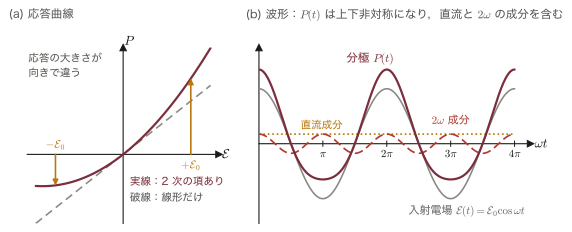
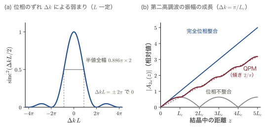
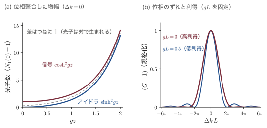
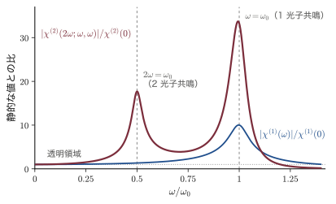
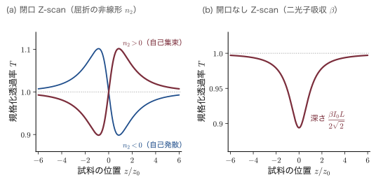
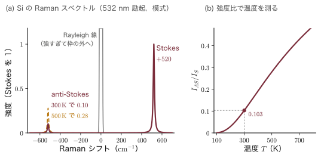

第27章半導体における非線形光学 — 第二高調波から音響光学効果まで
緑色のレーザーポインタの中には，緑色に光る物質は入っていない．中にあるのは赤外線（波長 $1064\,\mathrm{nm}$）を出すレーザーと，小さな透明結晶（$\mathrm{KTiOPO_4}$，略して KTP）である．赤外線がこの結晶を通り抜けると，光子2個が合体して，振動数がちょうど2倍，波長がちょうど半分の $532\,\mathrm{nm}$ の光子1個になる．これが第二高調波発生（second-harmonic generation，SHG）であり，本章の主題である非線形光学（nonlinear optics）の代表例である．ふだんの光学——レンズ，プリズム，眼鏡——では，光は物質を通っても色を変えないし，交差した2本の懐中電灯の光は互いに素通りする．それは，光の電場が物質中の電子を押す力と，電子の変位（分極）とが比例しているからである．バネを軽く引けば伸びは力に比例する（Hooke（フック）の法則）が，強く引きすぎれば比例しなくなる．レーザーの強い光は，電子を束縛している「バネ」を，比例が破れるところまで引っ張る．
比例が破れると，分極は電場の2乗，3乗の項を含むようになる．2乗の項からは第二高調波，和周波・差周波，振動数を自由に選べる光パラメトリック発振器，電圧で屈折率を変える Pockels（ポッケルス）効果（光ファイバ通信の変調器）が，3乗の項からは光の強さで屈折率が変わる Kerr（カー）効果，自己位相変調，自己集束，二光子吸収が生まれる．さらに，分極が格子振動や音波によって揺すぶられると，散乱光の振動数がずれる Raman（ラマン）散乱と Brillouin（ブリルアン）散乱，そして音波を回折格子として使う音響光学効果が現れる．Raman 分光は Si の LSI の中の温度と応力を測る道具であり，音響光学素子はレーザー加工機やレーザー冷却の装置に欠かせない．どれも「分極が光の電場に比例しなくなる」か「分極が別の自由度で変調される」という一つの考え方で理解できる．
本章の物理には3つの柱がある．第一は対称性である．反転対称性をもつ結晶では2次の非線形分極が恒等的にゼロになる（第4章の Neumann（ノイマン）の原理）．だから Si と Ge は第二高調波を出さず，閃亜鉛鉱型の GaAs や，$3m$ の $\mathrm{LiNbO_3}$ は出す．どのテンソル成分が残るかも点群だけで決まる．第二は大きさである．第19章の Lorentz（ローレンツ）振動子に非調和項を1つ加えるだけで，非線形感受率 $\chi^{(2)}$（$\chi$ はギリシャ文字のカイ）が完全に導け，その大きさが原子の中の電場 $\sim5\times10^{11}\,\mathrm{V/m}$ で決まること，$d\sim\mathrm{pm/V}$ という桁になることがわかる．第三は位相整合である．結晶中のあちこちで生まれた第二高調波が強め合うには，光子の運動量（波数）が保存されなければならない．複屈折や周期分極反転という工夫は，すべてこの条件を満たすためにある．
第25章では光が物質に入ったときの線形の応答（屈折率・吸収係数）を，第26章では光源としてのレーザーを学んだ．本章はその両者の上に立ち，強い光が物質とどう「会話」するかを扱う．第12・13章の弾性波とフォノン，第10・11章の Raman 活性の群論も，ここで光学の言葉に翻訳される．本章を終えると，SHG の変換効率，コヒーレンス長と擬似位相整合の周期，光パラメトリック発振器（OPO）の発振波長，非線形屈折率と自己集束の臨界パワー，Raman スペクトルから読む温度，電気光学変調器の半波長電圧，音響光学素子の Bragg（ブラッグ）角を，自分で計算できるようになる．次の第28章では，ここまで前提にしてきた結晶の規則正しさを外し，アモルファス半導体や不純物の多い半導体のような乱れた系の電子を扱う．
- 非線形分極の展開 $P=\epsilon_0(\chi^{(1)}\mathcal{E}+\chi^{(2)}\mathcal{E}^2+\chi^{(3)}\mathcal{E}^3+\cdots)$，テンソル $\chi^{(2)}_{ijk}$（単位 m/V）と縮約記法 $d_{il}$，Kleinman（クラインマン）の対称性
- 反転対称があれば $\chi^{(2)}=0$ の証明と，点群で決まる非零成分（閃亜鉛鉱は $d_{14}$ だけ，$\mathrm{LiNbO_3}$ は $d_{31},d_{22},d_{33}$）
- Maxwell（マクスウェル）方程式から非線形分極を波源とする波動方程式と結合波方程式（遅い振幅近似）を導く
- 第二高調波の $\mathrm{sinc}^2$ 特性，コヒーレンス長 $L_c$，複屈折位相整合（type I/II）と擬似位相整合（$\Lambda=2L_c$），ウォークオフ
- 3波混合と Manley–Rowe（マンリー・ロウ）の関係，光パラメトリック増幅の利得 $\cosh^2 gz$，OPO の同調，自発パラメトリック下方変換と THz 発生
- 非調和振動子から $\chi^{(1)}$，$\chi^{(2)}$ を完全導出し，Miller（ミラー）の規則と $d\sim\mathrm{pm/V}$ の桁，共鳴増強を理解する
- 光 Kerr 効果 $n=n_0+n_2I$ と $n_2=3\chi^{(3)}/(4n_0^2\epsilon_0c)$，自己位相変調・自己集束・四光波混合・二光子吸収・Z-scan・Kerr レンズモード同期
- Raman 散乱と Brillouin 散乱を古典論と量子論で導き，Stokes（ストークス）/anti-Stokes 比で温度を，Brillouin シフトで音速を測る
- 屈折率楕円体と Pockels 効果，縦型・横型の半波長電圧，Pockels セル・Mach–Zehnder（マッハ・ツェンダー）変調器，2次の電気光学効果
- 光弾性効果と音響光学効果：Raman–Nath（ラマン・ナス）領域と Bragg 領域，Bragg 条件，回折効率と性能指数 $M_2$，周波数シフトと AOM
27.1 非線形分極 — 対称性が $\chi^{(2)}$ を決める
はじめに，本章全体で使う記号を約束しておく．非線形光学の教科書は単位系と「振幅の約束」が本によってまちまちで，同じ式に2倍や4倍の違いが出る．ここで一度だけ決めて，章の最後まで変えない．
記号の約束：第27章で使う記号と振幅の書き方
- 単位系は SI．真空の誘電率 $\epsilon_0$（$\epsilon$ はイプシロン），真空の透磁率 $\mu_0$（$\mu$ はミュー），真空中の光速 $c$，$\mu_0\epsilon_0=1/c^2$．
- 電場：第IV部の約束どおり，ベクトルを $\EE$，大きさ・成分を $\mathcal{E}$（スクリプトの E）と書く．エネルギー $E$（$E_g$ など）と区別するためである．非線形光学の本では電場を $E$ と書くことが多いので，他書を読むときは読み替えてほしい．分極（単位体積あたりの双極子モーメント，$\mathrm{C/m^2}$）はベクトル $\bm{P}$，成分 $P_i$．
- 振動数：$\omega$（オメガ）は角振動数で，1秒あたりの振動の回数 $f$ と $\omega=2\pi f$ の関係にある．本章では簡単のため $\omega$ も「振動数」と呼ぶ．
- 振幅の約束：振動数 $\omega$ で振動する実数の電場を，複素振幅 $\mathcal{E}_\omega$ を使って $$\mathcal{E}(t)=\tfrac12\left(\mathcal{E}_\omega\ee^{-i\omega t}+\mathrm{c.c.}\right)=\abs{\mathcal{E}_\omega}\cos(\omega t-\varphi)\qquad(\mathcal{E}_\omega=\abs{\mathcal{E}_\omega}\ee^{i\varphi})$$ と書く（$\varphi$（ファイ）は位相）．$\mathrm{c.c.}$ は直前の項の複素共役（complex conjugate）である．$\ee^{-i\omega t}$ は物理の慣用（第25章と同じ）．分極も同じく $P(t)=\tfrac12(P_\omega\ee^{-i\omega t}+\mathrm{c.c.})$ と書き，$P_\omega$ を「振動数 $\omega$ の分極の複素振幅」と呼ぶ．この約束では $\abs{\mathcal{E}_\omega}$ がそのまま実数の電場の振幅になる．
- 光の強度（単位面積を単位時間に通るエネルギー，$\mathrm{W/m^2}$）は，屈折率 $n$ の媒質中で $I=\tfrac12n\epsilon_0c\abs{\mathcal{E}_\omega}^2$（27.1.2項で導く）．
- 非線形光学係数は $d=\chi^{(2)}/2$（Boyd（ボイド）の教科書と同じ定義．テンソルでは $d_{ijk}=\chi^{(2)}_{ijk}/2$）．単位は $\mathrm{pm/V}=10^{-12}\,\mathrm{m/V}$．
記号の約束：本章で2つ以上の意味に使う記号
非線形光学は光学・固体物理・通信工学の言葉が入り混じる分野なので，同じ文字が別の意味で使われることが多い．本章ではなるべく慣習どおりの記号を使い，重なるものをここにまとめる．初めて読むときはこの箱を飛ばして27.1.1項へ進み，記号の意味に迷ったときに戻ってくればよい．
- $n$：屈折率（キャリア密度ではない．キャリア密度は27.5節で $N$ と書く．第26章では電子密度と区別するため屈折率を $n_r$ と書いたが，本章では非線形光学の慣用どおり $n$ と書く）．$n_0$ は光が弱いときの屈折率，$n_o$，$n_e$ は常光線・異常光線の屈折率（27.2.5項），$n_1,n_2,n_3$ は27.3節の3つの波の屈折率である．27.5節の $n_2$（非線形屈折率，単位 $\mathrm{m^2/W}$）は，27.3節の第2の波の屈折率 $n_2$ とは別の量である．
- $N$：27.4節では振動子の密度，27.5節ではキャリアの密度（どちらも単位 $\mathrm{m^{-3}}$）．27.3節の $N_1$ は信号光の光子数，27.6節の $N_q$ はフォノンの数（屈折率 $n$ と区別するため大文字で書く），27.8.6項の $N$ は偏向器の分解点数．
- $a$：27.4節では非調和性の強さを表す定数（単位 $\mathrm{s^{-2}m^{-1}}$），27.6節では結晶の格子定数（長さ）．
- $\alpha$（アルファ）：27.5節では吸収係数，27.6節では分極率．
- $\beta$（ベータ）：27.5.6項の二光子吸収係数．27.5.10項の $\beta_2$ は光ファイバの群速度分散で，別の量．
- $\gamma$（ガンマ）：27.4節では振動子の減衰定数（単位 $\mathrm{s^{-1}}$），27.5.3項・27.5.10項では光ファイバの非線形係数（単位 $\mathrm{W^{-1}km^{-1}}$）．
- $\Gamma$（大文字のガンマ）：27.7節では2つの偏光の位相差（Brillouin 域の $\Gamma$ 点とは別）．演習27.2 の $\Gamma_{\rm SH}$ は結合の強さを表す定数．
- $\Lambda$（大文字のラムダ）：27.2節では分極反転の周期，27.8節では音波の波長（どちらも「回折格子の周期」である）．小文字の $\lambda$（ラムダ）は光の真空中の波長．
- $d$：非線形光学係数（単位 $\mathrm{pm/V}$）．ただし27.7.5項では電極の間隔（長さ）にも使う（添字の有無で区別できる）．
- $D$：27.4節の $D(\omega)$ は共鳴の分母，太字の $\bm{D}$ は電束密度，27.8.6項の $D$ は光ビームの幅（長さ）．
- $P$：分極（単位 $\mathrm{C/m^2}$）．ただしパワー（単位 W）にも $P$，$P_{cr}$，$P_a$，$P_0$ を使う．
- $Q$：27.6節では格子振動の基準座標，27.8節では Klein–Cook（クライン・クック）のパラメータ．「Q スイッチ」の Q は共振器の Q 値（損失の少なさ）に由来する名前で，記号ではない．
- $r$：27.7節の電気光学係数 $r_{ijk}$（添字つき）．27.3節の $r_1,r_2$ は鏡の振幅反射率，27.5.7項の $r$ はビームの中心からの距離．
- $R$：27.1.4項では座標変換の行列，27.6.3項では Raman テンソル．
- $\rho$（ロー）：27.2.6項ではウォークオフ角，27.6節・27.8節では密度（単位 $\mathrm{kg/m^3}$）．
- $\kappa$（カッパ）：27.5節では消衰係数（複素屈折率 $n+i\kappa$ の虚部），27.3節と27.8節では2つの波の結合の強さを表す定数．
- $\tau$（タウ）：27.5節ではパルスの時間幅と Drude（ドルーデ）模型の緩和時間，27.8節では音波が光ビームを横切る時間．
- $g$：27.3節では光パラメトリック増幅の利得係数（単位 $\mathrm{m^{-1}}$）．27.6.5項の $g_R$ は Raman 利得係数，27.7.6項の $g$ は分極光学係数で，いずれも別の量．
- $m$：電子の質量．ただし27.2.7項の擬似位相整合の次数と，27.8.3項の回折の次数にも $m$（整数）を使う．
- $T$：温度．ただし27.5.7項・27.7.4項では透過率．27.5.10項の $T_0$ はパルスの時間幅．
- $H$：太字の $\bm{H}$ は磁場．27.8.5項の $H$ は音波の高さ（長さ）．
- $s$：27.2.7項の $s(z)$ は $\pm1$ をとる方形波，27.7節の $s_{ijkl}$ は2次の電気光学係数，太字の $\bm{s}$（27.7.1項）は光の進む向きの単位ベクトル．
- $\Omega$（大文字のオメガ）：フォノン・音波の角振動数．$S$：ひずみ（第12章の $\epsilon_{ij}$ は誘電率と紛らわしいので本章では $S_{ij}$ と書く）．
- $\mathcal{E}$：添字 $\omega$ のつく $\mathcal{E}_\omega$ は振動数 $\omega$ の複素振幅，$\mathcal{E}(t)$，$\mathcal{E}(z,t)$ は実数の電場（上の約束）．27.2・27.3節の $A(z)$ は，複素振幅のうちゆっくり変わる部分である．
27.1.1 バネが伸びすぎると — 線形光学の破れ
光は電場と磁場の波である．光が物質に入ると，その電場 $\mathcal{E}$ が原子核のまわりの電子を押し，電子の雲がわずかにずれる．正電荷（原子核）と負電荷（電子）の重心がずれるので，原子は小さな電気双極子になる．単位体積あたりの双極子モーメントが分極（polarization）$P$ である（第19章19.1，大学基礎物理学 第41章41.1）．電子は原子核に「バネ」でつながれていると考えてよい．光の電場が弱いうちは，ずれ（変位）は力に比例し，したがって分極は電場に比例する：
$$ P=\epsilon_0\chi^{(1)}\mathcal{E} $$比例係数 $\chi^{(1)}$ が線形の電気感受率（electric susceptibility）で，屈折率とは $n^2=1+\chi^{(1)}$ の関係にある（第25章25.1）．電場が振動数 $\omega$ で振動すれば，分極も同じ振動数 $\omega$ で振動し，振動する双極子は同じ振動数 $\omega$ の光を出す．物質を通った光の色が変わらないのはこのためである．
ところが，バネを強く引っ張ると Hooke の法則が破れる．レーザーの強い光は，電子を束縛しているバネを比例が破れるところまで引っ張る．すると分極は電場の2乗・3乗に比例する項をもつようになる．図27.1(a) の実線のように，応答曲線が直線からずれ，しかも $+\mathcal{E}$ と $-\mathcal{E}$ とで応答の大きさが違う．このとき，きれいな正弦波の電場をかけても，分極の波形は図27.1(b) のように上下非対称にゆがむ．ゆがんだ周期関数は，Fourier 級数（付録A の A.1，大学基礎物理学 第17章17.2）に分解すると，もとの振動数 $\omega$ の成分のほかに，$2\omega$ の成分と直流成分を含む．$2\omega$ で振動する双極子は $2\omega$ の光を放射する．これが第二高調波である．

定義：非線形分極と非線形感受率
分極を電場のべき級数に展開して
と書く．$\chi^{(2)}$ を2次の，$\chi^{(3)}$ を3次の非線形感受率（nonlinear susceptibility）という．$P^{(1)}$ 以外の部分 $P^{NL}=P^{(2)}+P^{(3)}+\cdots$ を非線形分極と呼ぶ．
単位．$\epsilon_0\mathcal{E}$ は電束密度と同じ $\mathrm{C/m^2}$ の次元をもつので，$\chi^{(1)}$ は無次元である．$P^{(2)}=\epsilon_0\chi^{(2)}\mathcal{E}^2$ が同じく $\mathrm{C/m^2}$ であるためには，$\chi^{(2)}\mathcal{E}$ が無次元，すなわち $\chi^{(2)}$ の単位は $\mathrm{m/V}$ である．同様に $\chi^{(3)}$ の単位は $\mathrm{m^2/V^2}$ である．
導出：2次の項は直流と $2\omega$，3次の項は $3\omega$ と $\omega$ をつくる
電場を $\mathcal{E}(t)=\mathcal{E}_0\cos\omega t$ とする．2次の項に代入し，倍角の公式 $\cos^2\theta=\tfrac12(1+\cos2\theta)$ を使うと
$$ P^{(2)}(t)=\epsilon_0\chi^{(2)}\mathcal{E}_0^2\cos^2\omega t =\underbrace{\tfrac12\epsilon_0\chi^{(2)}\mathcal{E}_0^2}_{\text{直流}} +\underbrace{\tfrac12\epsilon_0\chi^{(2)}\mathcal{E}_0^2\cos2\omega t}_{\text{振動数 }2\omega} $$3次の項には3倍角の公式 $\cos3\theta=4\cos^3\theta-3\cos\theta$，すなわち $\cos^3\theta=\tfrac34\cos\theta+\tfrac14\cos3\theta$ を使って
$$ P^{(3)}(t)=\epsilon_0\chi^{(3)}\mathcal{E}_0^3\cos^3\omega t =\underbrace{\tfrac34\epsilon_0\chi^{(3)}\mathcal{E}_0^3\cos\omega t}_{\text{振動数 }\omega} +\underbrace{\tfrac14\epsilon_0\chi^{(3)}\mathcal{E}_0^3\cos3\omega t}_{\text{振動数 }3\omega} $$∎ それぞれの項が何を生むかを並べると次のようになる．
- $2\omega$ の分極 → $2\omega$ の光を放射する：第二高調波発生（27.2節）．
- 直流の分極 → 光を当てると結晶に直流の電圧が現れる：光整流（optical rectification）．超短パルスで行えば THz 波の発生になる（27.3節）．
- $3\omega$ の分極 → 第三高調波発生（27.5節）．
- $\omega$ の分極への上乗せ $\tfrac34\epsilon_0\chi^{(3)}\mathcal{E}_0^2\cdot\mathcal{E}_0\cos\omega t$ → 感受率が $\chi^{(1)}+\tfrac34\chi^{(3)}\mathcal{E}_0^2$ に変わったのと同じ．すなわち光の強さで屈折率が変わる：光 Kerr 効果（27.5節）．
27.1.2 電場の大きさの感覚 — 原子の中の電場と比べる
式 \eqref{eq:27-Pexp} の展開は，どれくらい速く収束するのだろうか．目安は，電子を原子核につなぎとめている電場——原子の中の電場——との比である．光の電場がこれに比べて小さければ，バネはほぼ Hooke の法則に従う．
導出：原子内電場 $\mathcal{E}_{at}\simeq5\times10^{11}\,\mathrm{V/m}$ と光の強度 $I=\tfrac12n\epsilon_0c\abs{\mathcal{E}_\omega}^2$
ステップ1：原子内電場．水素原子の電子は，Bohr（ボーア）半径 $a_0=0.529\,\text{Å}$ の距離で陽子の Coulomb（クーロン）電場を感じている．その大きさは
$$ \begin{aligned} \mathcal{E}_{at}&=\frac{e}{4\pi\epsilon_0a_0^2} =\frac{1.602\times10^{-19}\,\mathrm{C}}{(1.113\times10^{-10}\,\mathrm{F/m})\times(5.292\times10^{-11}\,\mathrm{m})^2}\\ &=\frac{1.602\times10^{-19}}{1.113\times10^{-10}\times2.800\times10^{-21}}\ \mathrm{V/m} \end{aligned} $$ $$ =\frac{1.602\times10^{-19}}{3.116\times10^{-31}}\ \mathrm{V/m}=5.14\times10^{11}\ \mathrm{V/m} $$（$4\pi\epsilon_0=4\pi\times8.854\times10^{-12}=1.113\times10^{-10}\,\mathrm{F/m}$ を使った．）固体中の価電子も，桁としてはこれと同じ程度の電場で束縛されている．
ステップ2：光の強度と電場．真空中の平面電磁波のエネルギーの流れ（Poynting（ポインティング）ベクトル）の時間平均は $\tfrac12\epsilon_0c\mathcal{E}_0^2$ である（大学基礎物理学 第42章42.5）．屈折率 $n$ の媒質中では，電場のエネルギー密度が $\tfrac12\epsilon_0n^2\mathcal{E}^2$ に，波の速さが $c/n$ になり，磁場のエネルギー密度も電場のそれと等しいので，
$$ I=\underbrace{2\times\tfrac12\epsilon_0n^2\overline{\mathcal{E}(t)^2}}_{\text{電場＋磁場のエネルギー密度}}\times\underbrace{\frac{c}{n}}_{\text{速さ}} =\epsilon_0nc\,\overline{\mathcal{E}_0^2\cos^2\omega t} =\epsilon_0nc\,\mathcal{E}_0^2\times\frac12 $$（$\overline{\cos^2\omega t}=\tfrac12$ は1周期の平均．）$\mathcal{E}_0=\abs{\mathcal{E}_\omega}$ だから
∎ 係数
$$ \epsilon_0c=8.854\times10^{-12}\times2.998\times10^{8}=2.654\times10^{-3}\,\mathrm{A/V} $$は覚えておくと便利である．
例題27.1 太陽光とパルスレーザーの電場
(1) 真空中の太陽光（$I=1\,\mathrm{kW/m^2}$）と，(2) 集光したパルスレーザー（$I=1\,\mathrm{GW/cm^2}$）の電場の振幅を求め，原子内電場 $\mathcal{E}_{at}$ と比べよ．(3) (2) の光を GaAs（$n=3.5$，$d_{14}\sim1.7\times10^{2}\,\mathrm{pm/V}$ とする）に入れたとき，$2\omega$ の分極の振幅 $\abs{P_{2\omega}}=\epsilon_0d\abs{\mathcal{E}_\omega}^2$ と $\omega$ の分極の振幅 $\abs{P_\omega}=\epsilon_0\chi^{(1)}\abs{\mathcal{E}_\omega}$ の比を見積もれ（$P_{2\omega}$ の式は27.1.3項で導く）．
解答．(1) 式 \eqref{eq:27-intensity} で $n=1$ として
$$ \abs{\mathcal{E}_\omega}=\sqrt{\frac{2\times10^{3}\,\mathrm{W/m^2}}{2.654\times10^{-3}\,\mathrm{A/V}}}=\sqrt{7.54\times10^{5}}\ \mathrm{V/m}=8.7\times10^{2}\ \mathrm{V/m} $$$\mathcal{E}_{at}$ との比は $8.7\times10^{2}/5.14\times10^{11}=1.7\times10^{-9}$．
(2) $1\,\mathrm{GW/cm^2}=10^{9}\,\mathrm{W}/10^{-4}\,\mathrm{m^2}=10^{13}\,\mathrm{W/m^2}$ だから
$$ \abs{\mathcal{E}_\omega}=\sqrt{\frac{2\times10^{13}}{2.654\times10^{-3}}}\ \mathrm{V/m}=\sqrt{7.54\times10^{15}}\ \mathrm{V/m}=8.7\times10^{7}\ \mathrm{V/m} $$比は $8.7\times10^{7}/5.14\times10^{11}=1.7\times10^{-4}$．
(3) GaAs 中では $n=3.5$ なので
$$ \abs{\mathcal{E}_\omega}=\sqrt{2\times10^{13}/(3.5\times2.654\times10^{-3})}=4.6\times10^{7}\,\mathrm{V/m} $$$\chi^{(1)}=n^2-1=11.3$ だから
$$ \frac{\abs{P_{2\omega}}}{\abs{P_\omega}}=\frac{d\abs{\mathcal{E}_\omega}}{\chi^{(1)}}=\frac{(1.7\times10^{-10}\,\mathrm{m/V})(4.6\times10^{7}\,\mathrm{V/m})}{11.3}=7\times10^{-4} $$∎ 太陽光では非線形の項は $10^{-9}$ 程度で，まったく見えない．1960年にレーザーが発明されるまで非線形光学が実験科学にならなかったのはこのためである．パルスレーザーでも2次の分極は1次の $10^{-3}$〜$10^{-4}$ にすぎないが，27.2節で見るように，結晶の長さ全体にわたって位相をそろえて足し合わせれば，入射光の数十 % を第二高調波に変えることができる．
ここから非線形感受率の大きさの目安が出てくる．$\mathcal{E}=\mathcal{E}_{at}$ になると2次の項が1次の項と同じ大きさになる，と考えると $\chi^{(2)}\mathcal{E}_{at}\sim\chi^{(1)}\sim1$，すなわち
$$ \chi^{(2)}\sim\frac{\chi^{(1)}}{\mathcal{E}_{at}}\sim\frac{1}{5\times10^{11}\,\mathrm{V/m}}=2\times10^{-12}\ \mathrm{m/V},\qquad \chi^{(3)}\sim\frac{\chi^{(1)}}{\mathcal{E}_{at}^2}\sim4\times10^{-24}\ \mathrm{m^2/V^2} $$となる．$\mathrm{pm/V}$（$10^{-12}\,\mathrm{m/V}$）が非線形光学係数の自然な単位になるのはこのためである．この見積もりは27.4節の非調和振動子模型で裏づける．
27.1.3 テンソルとしての $\chi^{(2)}$ と，振動数の足し算・引き算
結晶は向きによって性質が違うので，電場も分極もベクトルとして扱わなければならない．2次の分極の $i$ 成分（$i=x,y,z$）は，電場の2つの成分の積の1次結合で書ける：
$$ P^{(2)}_i(t)=\epsilon_0\sum_{j=x,y,z}\sum_{k=x,y,z}\chi^{(2)}_{ijk}\,\mathcal{E}_j(t)\,\mathcal{E}_k(t) $$$\chi^{(2)}_{ijk}$ は3つの添字をもつ3階のテンソルで，成分は $3\times3\times3=27$ 個ある．テンソルの「階」は添字の数である．ベクトル（成分 $E_i$）は添字1個の1階のテンソル，行列で表される量（たとえば異方的な物質の感受率 $\chi^{(1)}_{ij}$）は添字2個の2階のテンソルで，添字が3個なら3階になる．座標軸を回したときの成分の変換のしかたは付録A の A.7にまとめてある．$\chi^{(2)}_{ijk}$ の $i$ は分極の向き，$j,k$ は電場の向きを表す．$\mathcal{E}_j\mathcal{E}_k=\mathcal{E}_k\mathcal{E}_j$ なので $\chi^{(2)}_{ijk}$ と $\chi^{(2)}_{ikj}$ は区別できず，両者は等しいとしてよい（これを固有の置換対称性という）．独立な成分は $3\times6=18$ 個に減る．
正確には，2つの電場の振動数 $\omega_1$，$\omega_2$ が違うときは，添字と一緒に振動数も入れ替えて $\chi^{(2)}_{ijk}(\omega_3;\omega_1,\omega_2)=\chi^{(2)}_{ikj}(\omega_3;\omega_2,\omega_1)$ と書く．$\chi^{(2)}(\omega_3;\omega_1,\omega_2)$ は「振動数 $\omega_1$ と $\omega_2$ の電場から振動数 $\omega_3$ の分極をつくる感受率」という意味の書き方である．第二高調波では $\omega_1=\omega_2=\omega$ なので，単に $\chi^{(2)}_{ijk}=\chi^{(2)}_{ikj}$（$d_{ijk}=d_{ikj}$）となる．
2つの振動数 $\omega_1$，$\omega_2$ の光を同時に入れると何が起こるかを見よう．ここで複素振幅の約束が役に立つ．
導出：2つの光から生まれる4種類の振動数
簡単のため1成分で書く．電場を
$$ \mathcal{E}(t)=\tfrac12\left(\mathcal{E}_1\ee^{-i\omega_1t}+\mathcal{E}_2\ee^{-i\omega_2t}+\mathcal{E}_1^*\ee^{i\omega_1t}+\mathcal{E}_2^*\ee^{i\omega_2t}\right) $$とする．これを2乗すると，4つの項から2つを選ぶ積 $4\times4=16$ 個が出る．指数を足し算して振動数ごとにまとめると
$$ \mathcal{E}(t)^2=\frac14\Bigl[\mathcal{E}_1^2\ee^{-2i\omega_1t}+\mathcal{E}_2^2\ee^{-2i\omega_2t} +2\mathcal{E}_1\mathcal{E}_2\ee^{-i(\omega_1+\omega_2)t} +2\mathcal{E}_1\mathcal{E}_2^*\ee^{-i(\omega_1-\omega_2)t}+\mathrm{c.c.}\Bigr] +\frac12\left(\abs{\mathcal{E}_1}^2+\abs{\mathcal{E}_2}^2\right) $$（交差項 $\mathcal{E}_1\mathcal{E}_2$ は「1を先に選ぶ」「2を先に選ぶ」の2通りあるので係数2が付く．$\mathcal{E}_1\mathcal{E}_1^*$ のような項は時間によらない．）分極 $P^{(2)}=\epsilon_0\chi^{(2)}\mathcal{E}^2$ も $P(t)=\tfrac12\sum_{\omega'}(P_{\omega'}\ee^{-i\omega' t}+\mathrm{c.c.})$ の形に書き，同じ振動数の係数を比べる．たとえば $\ee^{-2i\omega_1t}$ の係数は左辺で $\tfrac12P_{2\omega_1}$，右辺で $\epsilon_0\chi^{(2)}\tfrac14\mathcal{E}_1^2$ だから $P_{2\omega_1}=\tfrac12\epsilon_0\chi^{(2)}\mathcal{E}_1^2$．$d=\chi^{(2)}/2$ を使って書き直すと
$$ \begin{aligned} P(2\omega_1)&=\epsilon_0\,d\,\mathcal{E}_1^2 &&\text{第二高調波（SHG）}\\ P(\omega_1+\omega_2)&=2\epsilon_0\,d\,\mathcal{E}_1\mathcal{E}_2 &&\text{和周波（SFG）}\\ P(\omega_1-\omega_2)&=2\epsilon_0\,d\,\mathcal{E}_1\mathcal{E}_2^* &&\text{差周波（DFG）}\\ P(0)&=\epsilon_0\,d\left(\abs{\mathcal{E}_1}^2+\abs{\mathcal{E}_2}^2\right) &&\text{光整流（直流）} \end{aligned} $$（直流成分は実数なので $\tfrac12(P_0+\mathrm{c.c.})$ の形にせず，そのまま書いた．）∎
テンソルの形に戻すと，本章で繰り返し使う2つの式になる：
SHG の係数が和周波の半分になっているのは，同じ光の2つの「コピー」を選ぶ順序が区別できないからである（縮退因子）．ラジオの受信機で2つの周波数を「混ぜて」和と差を作る回路を混合器（ミキサー）というが，2次の非線形結晶は光の混合器である．
注意：教科書ごとの「2倍」の違い
Boyd の教科書は $\frac12$ を付けない約束 $\mathcal{E}(t)=\mathcal{E}\ee^{-i\omega t}+\mathrm{c.c.}$ を使う．するとこの $\mathcal{E}$ は本章の振幅の半分なので，$P(2\omega)=2\epsilon_0d\mathcal{E}^2$，$I=2n\epsilon_0c\abs{\mathcal{E}}^2$ のように係数が変わる．しかし $d$ そのもの（$\chi^{(2)}/2$）は同じ物理量であり，強度どうしの関係（たとえば式 \eqref{eq:27-shg-I}）はどちらの約束でも一致する．文献の表の $d$ 値（$\mathrm{pm/V}$）はそのまま使ってよい．古い文献の Gauss（ガウス）単位系（esu）の値は $\chi^{(2)}[\mathrm{m/V}]=\dfrac{4\pi}{3\times10^{4}}\chi^{(2)}[\mathrm{esu}]$ で換算する．
27.1.4 反転対称があれば $\chi^{(2)}=0$
本章でいちばん大切な定理である．図27.2 を見てほしい．Si の結晶では，隣り合う2つの Si 原子を結ぶ結合の中点が反転中心になっている．電子が感じるポテンシャル $U(x)$ は左右対称で，電場 $+\mathcal{E}$ をかけても $-\mathcal{E}$ をかけても，電子は同じ距離だけ逆向きにずれる．一方，GaAs の Ga–As 結合では両端の原子が違うので $U(x)$ は左右非対称になり，ゆるい側へは大きく，急な側へは小さくずれる．この「向きによる応答の差」が $\chi^{(2)}$ の正体である．
定理27.1 中心対称な結晶では2次の非線形感受率がゼロ
反転中心をもつ結晶（中心対称結晶，第4章の11個の点群）では，電気双極子近似（分極を電気双極子だけで表す近似．本章はすべてこの近似による）の範囲で，振動数の組み合わせによらず，すべての成分について
が成り立つ．したがって第二高調波・和周波・差周波・光整流・Pockels 効果（27.7節）はいずれも起こらない．一方 $\chi^{(1)}$ と $\chi^{(3)}$ はゼロにならない．
導出：反転で $\bm{P}\to-\bm{P}$，$\EE\to-\EE$ となることから
論法1（物理的な考え方）．電場 $\EE$ をかけた結晶に分極 $\bm{P}(\EE)$ が生じたとする．この状況全体——結晶も電場も分極も——を原点について反転した状況を考える．
- 結晶は反転しても自分自身に重なる（それが反転対称の意味である）．
- 電場は極性ベクトル（polar vector）なので反転で向きが逆になる：$\EE\to-\EE$．極性ベクトルとは，位置ベクトル $\rr$ と同じく，反転 $\rr\to-\rr$ で符号が変わるベクトルのことである．電場は正の電荷から負の電荷へ向かう矢印なので，空間を反転して電荷の位置を原点の反対側へ移すと，矢印の向きも逆になる（磁場は反転で向きが変わらない軸性ベクトルで，別の規則に従う．第4章4.6.1 の注意と27.7.7項）．
- 分極も極性ベクトル（双極子の向き）なので $\bm{P}\to-\bm{P}$．
反転後の状況は「同じ結晶に電場 $-\EE$ をかけたら分極 $-\bm{P}(\EE)$ が生じた」ことを表している．物理法則は反転で変わらないから，これは $\bm{P}(-\EE)=-\bm{P}(\EE)$，つまり分極は電場の奇関数であることを意味する．式 \eqref{eq:27-Pexp} の両辺に入れると
$$ \begin{aligned} &\bm{P}(-\EE):\ \ \epsilon_0\left(-\chi^{(1)}\mathcal{E}+\chi^{(2)}\mathcal{E}^2-\chi^{(3)}\mathcal{E}^3+\cdots\right),\\ &-\bm{P}(\EE):\ \ \epsilon_0\left(-\chi^{(1)}\mathcal{E}-\chi^{(2)}\mathcal{E}^2-\chi^{(3)}\mathcal{E}^3-\cdots\right) \end{aligned} $$両者が任意の $\mathcal{E}$ で等しいためには，偶数次の係数について $\chi^{(2)}=-\chi^{(2)}$，すなわち $\chi^{(2)}=0$ でなければならない．テンソルで書いても同じで，$P_i^{(2)}(-\EE)=\epsilon_0\sum\chi^{(2)}_{ijk}(-\mathcal{E}_j)(-\mathcal{E}_k)=+P_i^{(2)}(\EE)$ が $-P_i^{(2)}(\EE)$ に等しいことから $\chi^{(2)}_{ijk}=0$ が出る．奇数次の $\chi^{(1)}$，$\chi^{(3)}$ には何の制約もつかない．
論法2（Neumann の原理）．第4章4.6節の方法そのままである．3階テンソルは座標変換 $R$ のもとで $\chi'_{ijk}=\sum_{lmn}R_{il}R_{jm}R_{kn}\chi_{lmn}$ と変換する．反転は $R_{il}=-\delta_{il}$ だから
$$ \chi'_{ijk}=(-1)^3\chi_{ijk}=-\chi_{ijk} $$Neumann の原理により，結晶の対称操作で物性テンソルは不変でなければならない：$\chi'_{ijk}=\chi_{ijk}$．両式から $\chi_{ijk}=-\chi_{ijk}$，よって $\chi_{ijk}=0$．4階テンソルの $\chi^{(3)}$ は $(-1)^4=+1$ 倍なので制約を受けない．∎
第4章では同じ論法で，中心対称な結晶が圧電性をもたないことを示した．圧電テンソルも $\chi^{(2)}$ も「奇数階の極性テンソル」である．32の点群のうち反転中心をもたないものは21個あるが，そのうち $432$ では $\chi^{(2)}_{ijk}$ が後ろの2つの添字について反対称（$\chi_{ijk}=-\chi_{ikj}$）になってしまい，SHG に効く対称な部分が残らない．したがって SHG を出しうる点群は，圧電性と同じく20個である．後で述べる Kleinman の対称性が成り立つ透明領域では，さらに $422$ と $622$ でも SHG が消える．
例題27.2 第二高調波を出す結晶，出さない結晶
次の物質のうち，バルク（結晶の内部）で第二高調波を出しうるものはどれか．点群から判定せよ．(1) Si（ダイヤモンド型，$m\bar3m$），(2) GaAs（閃亜鉛鉱型，$\bar43m$），(3) NaCl（$m\bar3m$），(4) $\alpha$-石英（$32$），(5) ZnO（ウルツ鉱型，$6mm$），(6) 石英ガラス，(7) $\mathrm{BaTiO_3}$ の立方晶相（$m\bar3m$，$393\,\mathrm{K}=120\,^\circ\mathrm{C}$ 以上）と正方晶相（$4mm$，室温）．(8) Si の結晶の内部は第二高調波を出さないのに，Si と $\mathrm{SiO_2}$ の界面からは第二高調波が出る．その理由を対称性から説明せよ．
解答．反転中心の有無を第4章の表で調べる．(1) Si：$m\bar3m$ は反転中心をもつ → 出さない．(2) GaAs：$\bar43m$ は反転中心をもたず，$432$ でもない → 出す．(3) NaCl：出さない．(4) 石英：$32$ は反転中心なし → 出す（Franken（フランケン）が1961年に最初の SHG を観測したのは石英である）．(5) ZnO：$6mm$ は極性点群 → 出す．(6) 石英ガラス：原子の並びは乱れているが，向きについて平均すると等方的で，等方的な媒質は反転を含むすべての回転・鏡映で不変 → 出さない（ガラス光ファイバで2次の効果が起きないのはこのため）．(7) $\mathrm{BaTiO_3}$：立方晶相は出さず，正方晶相は出す．(8) 界面では，界面に垂直な向きについて片側が Si，反対側が $\mathrm{SiO_2}$ と違うので，反転 $\rr\to-\rr$ をすると界面は自分自身に重ならない．界面の数原子層だけを取り出すと反転中心のない（極性のある）構造になっていて，そこでは $\chi^{(2)}\ne0$ が許される．ただし第二高調波を出すのは厚さ $1\,\mathrm{nm}$ 程度の層だけなので，信号は弱い．
∎ (7) は実用上も重要である．強誘電転移で反転対称性が破れると SHG が現れ，その強度は自発分極 $P_s$ の2乗に比例する（第19章19.7 の秩序変数）．SHG は「反転対称性が破れているか」を見る最も感度のよい探針で，第4章4.6.2 や第5章5.5.2 で述べた「中心対称性の判定」に実際に使われる．(8) のように，Si でも反転対称性が破れる表面・界面からは弱い SHG が出るので，SHG を使うと $\mathrm{Si/SiO_2}$ 界面だけを選んで調べることができる．なお定理27.1 は電気双極子近似での結論で，電気四重極や磁気双極子の寄与まで考えると，中心対称な結晶のバルクからもごく弱い SHG が出る（Si ではこのバルクの寄与が表面の寄与と同じ程度になることもある）．
補足：直流電場で反転対称性を破る — 電場誘起 SHG
中心対称な物質でも，直流電場 $\mathcal{E}_{dc}$ をかけると反転対称性が外から破られる．$\mathcal{E}(t)=\mathcal{E}_{dc}+\tfrac12(\mathcal{E}_\omega\ee^{-i\omega t}+\mathrm{c.c.})$ を3次の項 $\epsilon_0\chi^{(3)}\mathcal{E}^3$ に入れると，$\mathcal{E}^3$ の展開には $3\times\mathcal{E}_{dc}\times\tfrac14\mathcal{E}_\omega^2\ee^{-2i\omega t}$ という項がある（3つの因子のどれを直流にするかで3通り）．$\ee^{-2i\omega t}$ の係数を左辺の $\tfrac12P_{2\omega}$ と比べて $P_{2\omega}=2\times\tfrac34\epsilon_0\chi^{(3)}\mathcal{E}_{dc}\mathcal{E}_\omega^2=\tfrac32\epsilon_0\chi^{(3)}\mathcal{E}_{dc}\mathcal{E}_\omega^2$ となり，これを $P_{2\omega}=\tfrac12\epsilon_0\chi^{(2)}_{\rm eff}\mathcal{E}_\omega^2$ と比べると
$$ \chi^{(2)}_{\rm eff}=3\chi^{(3)}\mathcal{E}_{dc} $$の実効的な2次感受率が生じる．これを電場誘起第二高調波（EFISH）という．半導体の pn 接合の空乏層や MOS 界面の内蔵電場も同じ働きをするので，SHG は界面の電場を光で測る手段にもなる．
27.1.5 縮約記法 $d_{il}$ と Kleinman の対称性
SHG では $d_{ijk}=d_{ikj}$ なので，後ろの2つの添字の組 $(jk)$ を1つの添字 $l=1,\dots,6$ にまとめることができる．規則は弾性定数の Voigt 表記（付録A の A.7.3，第12章12.7）と同じである：
| $jk$ | $xx$ | $yy$ | $zz$ | $yz=zy$ | $zx=xz$ | $xy=yx$ |
|---|---|---|---|---|---|---|
| $l$ | 1 | 2 | 3 | 4 | 5 | 6 |
第1の添字 $i=x,y,z$ は $1,2,3$ と書く．たとえば $d_{xyz}=d_{xzy}\equiv d_{14}$，$d_{zxx}\equiv d_{31}$，$d_{zzz}\equiv d_{33}$ である．式 \eqref{eq:27-P2} の SHG の式を成分で書き下すと，たとえば $x$ 成分は
$$ \frac{P_x(2\omega)}{\epsilon_0}=d_{xxx}\mathcal{E}_x^2+d_{xyy}\mathcal{E}_y^2+d_{xzz}\mathcal{E}_z^2 +\underbrace{(d_{xyz}+d_{xzy})}_{=2d_{14}}\mathcal{E}_y\mathcal{E}_z +\underbrace{(d_{xzx}+d_{xxz})}_{=2d_{15}}\mathcal{E}_z\mathcal{E}_x +\underbrace{(d_{xxy}+d_{xyx})}_{=2d_{16}}\mathcal{E}_x\mathcal{E}_y $$となる．交差項に2が付くのは，同じ $d$ が $(jk)$ と $(kj)$ の2回現れるからである．3成分をまとめて行列で書くと
（右辺の $\mathcal{E}$ はすべて振動数 $\omega$ の複素振幅．）$3\times6=18$ 個の $d_{il}$ が独立な成分の最大数である．
定義：Kleinman の対称性（Kleinman symmetry）
関係するすべての振動数（$\omega$ と $2\omega$）が物質の吸収（共鳴）から十分離れた透明領域にあるとき，$\chi^{(2)}_{ijk}$ は3つの添字をどう入れ替えても等しいとみなしてよい（Kleinman，1962）．すなわち $d_{ijk}=d_{jik}=d_{kji}=\cdots$．
理由はこうである．損失も分散もない媒質では，分極はエネルギー密度 $U=-\epsilon_0\bigl(\tfrac12\sum\chi^{(1)}_{ij}\mathcal{E}_i\mathcal{E}_j+\tfrac13\sum\chi^{(2)}_{ijk}\mathcal{E}_i\mathcal{E}_j\mathcal{E}_k+\cdots\bigr)$ の微分 $P_i=-\partial U/\partial\mathcal{E}_i$ で与えられる．$\mathcal{E}_i\mathcal{E}_j\mathcal{E}_k$ は添字の入れ替えで変わらないので，$U$ に寄与するのは $\chi_{ijk}$ の完全対称な部分だけになる．
Kleinman の対称性を使うと，たとえば $d_{14}$（$=d_{xyz}$）$=d_{25}$（$=d_{yzx}$）$=d_{36}$（$=d_{zxy}$），$d_{15}$（$=d_{xzx}$）$=d_{31}$（$=d_{zxx}$），$d_{24}=d_{32}$，$d_{12}=d_{26}$ などが成り立ち，独立な成分は $3$ 個の添字の組み合わせの数，すなわち最大10個に減る．
27.1.6 結晶の対称性で決まる非零成分
Neumann の原理を点群のすべての対称操作に適用すると，どの $d_{il}$ が残るかが決まる．半導体でいちばん大切な閃亜鉛鉱型（GaAs，InP，GaP，ZnSe など）を実際にやってみよう．
例題27.3 GaAs（$\bar43m$）の非零の $d$ 成分
閃亜鉛鉱型の点群 $T_d=\bar43m$ は，立方体の3本の軸（$x,y,z$）のまわりの2回回転 $C_2$，同じ軸まわりの4回回反 $S_4$，体対角線 $[111]$ などのまわりの3回回転 $C_3$，および $\{110\}$ 面の鏡映を含む．(1) $d_{ijk}$ のうちゼロでないのは $d_{xyz}$ 型（$x,y,z$ が1回ずつ現れるもの）だけであり，それらはすべて等しく，$d_{14}=d_{25}=d_{36}$ の1つだけが独立であることを示せ．(2) 結晶軸方向の電場 $\EE\parallel[001]$，$\EE\parallel[110]$，$\EE\parallel[111]$ に対する $\bm{P}(2\omega)$ を求めよ．
解答．(1) 2回軸を使う．$z$ 軸まわりの $C_2$ は $(x,y,z)\to(-x,-y,z)$．3階テンソルの成分 $d_{ijk}$ は座標の積 $x_ix_jx_k$ と同じように変換するので，添字に $x$ が $n_x$ 個，$y$ が $n_y$ 個含まれる成分は $(-1)^{n_x+n_y}$ 倍される．不変であるためには $n_x+n_y$ が偶数でなければならない．同様に $x$ 軸まわりの $C_2$ から $n_y+n_z$ が偶数，$y$ 軸まわりの $C_2$ から $n_z+n_x$ が偶数．$n_x+n_y+n_z=3$ の組をすべて調べる：
- $(3,0,0)$（$d_{xxx}$ など）：$n_x+n_y=3$ が奇数 → $0$．
- $(2,1,0)$（$d_{xxy}$ など）：$n_x+n_y=3$ → $0$．$(2,0,1)$（$d_{xxz}$ など）：$n_y+n_z=1$ → $0$．他の並べ替えも同様にどれかの和が奇数になる → $0$．
- $(1,1,1)$（$d_{xyz}$ など）：$n_x+n_y=n_y+n_z=n_z+n_x=2$ はすべて偶数 → 生き残る．
残るのは $d_{xyz},d_{xzy},d_{yzx},d_{yxz},d_{zxy},d_{zyx}$ の6個である．3回軸を使う．$[111]$ まわりの $C_3$ は $(x,y,z)\to(y,z,x)$ と座標を巡回させるので，$d_{xyz}=d_{yzx}=d_{zxy}$，$d_{xzy}=d_{yxz}=d_{zyx}$．$S_4$ を使う．$z$ 軸まわりの $S_4$ は $(x,y,z)\to(y,-x,-z)$ である．変換則 $d'_{ijk}=\sum R_{il}R_{jm}R_{kn}d_{lmn}$ で $R$ は $x'=y$，$y'=-x$，$z'=-z$ だから
$$ d'_{xyz}=(+1)(-1)(-1)\,d_{yxz}=d_{yxz} $$不変性 $d'_{xyz}=d_{xyz}$ より $d_{xyz}=d_{yxz}$．これで2つの組がつながり，6個はすべて等しい．縮約記法では $d_{14}=d_{25}=d_{36}$（$d_{xyz}=d_{yzx}=d_{zxy}$）であり，独立な成分は1個である．Kleinman の対称性を仮定しなくても，点群だけからこの結論が出ることに注意．式 \eqref{eq:27-dmatrix} の行列は
$$ \begin{aligned} &d(\bar43m)=\begin{pmatrix}0&0&0&d_{14}&0&0\\0&0&0&0&d_{14}&0\\0&0&0&0&0&d_{14}\end{pmatrix}\\ &\Longrightarrow\quad P_x=2\epsilon_0d_{14}\mathcal{E}_y\mathcal{E}_z,\ \ P_y=2\epsilon_0d_{14}\mathcal{E}_z\mathcal{E}_x,\ \ P_z=2\epsilon_0d_{14}\mathcal{E}_x\mathcal{E}_y \end{aligned} $$(2) $\EE\parallel[001]$：$\mathcal{E}_x=\mathcal{E}_y=0$ なので $\bm{P}(2\omega)=0$．
$\EE\parallel[110]$：$\mathcal{E}_x=\mathcal{E}_y=\mathcal{E}/\sqrt2$，$\mathcal{E}_z=0$ なので $P_x=P_y=0$，$P_z=2\epsilon_0d_{14}(\mathcal{E}/\sqrt2)^2=\epsilon_0d_{14}\mathcal{E}^2$．分極は $[001]$ を向き，電場と直交する．
$\EE\parallel[111]$：$\mathcal{E}_x=\mathcal{E}_y=\mathcal{E}_z=\mathcal{E}/\sqrt3$ なので $P_x=P_y=P_z=2\epsilon_0d_{14}\mathcal{E}^2/3$．分極は $[111]$ を向き，大きさは $\abs{\bm{P}}=\sqrt3\times\tfrac23\epsilon_0d_{14}\mathcal{E}^2=\tfrac{2}{\sqrt3}\epsilon_0d_{14}\mathcal{E}^2=1.15\,\epsilon_0d_{14}\mathcal{E}^2$．
∎ ふつう市販の GaAs ウェハは $(001)$ 面である．この面に垂直に光を入れると，電場は $xy$ 面内にあるので $P_z=2\epsilon_0d_{14}\mathcal{E}_x\mathcal{E}_y$ しか生じない．これは光の進行方向（$z$）を向いた双極子で，双極子は自分の軸の方向には光を出さない．だから$(001)$ 面に垂直入射しても，前方に第二高調波は出ない．GaAs で SHG をするには $(111)$ や $(110)$ 面を使うか，斜めに入射させる．テンソルの形を知っていると，実験の配置がこのように決まる．
ほかの代表的な非線形光学結晶についても，結果を表にまとめておく．$\mathrm{LiNbO_3}$（ニオブ酸リチウム）の点群 $3m$ の行列は
$$ d(3m)=\begin{pmatrix}0&0&0&0&d_{15}&-d_{22}\\-d_{22}&d_{22}&0&d_{15}&0&0\\d_{31}&d_{31}&d_{33}&0&0&0\end{pmatrix}\qquad(\text{Kleinman の対称性では }d_{15}=d_{31}) $$の形で（$z$ が3回軸＝光学軸，$x$ 軸が鏡映面に垂直になるように座標を選んだ．導出は演習27.1），独立な成分は $d_{31}$，$d_{22}$，$d_{33}$ の3つである．
| 結晶 | 点群 | 非零の成分（Kleinman の対称性を仮定） | 代表的な大きさ（$\mathrm{pm/V}$，程度） | 透明な波長域（目安） |
|---|---|---|---|---|
| GaAs（閃亜鉛鉱） | $\bar43m$ | $d_{14}=d_{25}=d_{36}$ | $d_{14}\sim10^{2}$（波長により90〜170程度） | $0.9$〜$17\,\mu\mathrm{m}$ |
| $\mathrm{LiNbO_3}$ | $3m$ | $d_{31}=d_{32}=d_{15}=d_{24}$，$d_{33}$，$d_{22}=-d_{21}=-d_{16}$ | $d_{33}\approx27$，$d_{31}\approx4.5$，$d_{22}\approx2$ | $0.4$〜$5\,\mu\mathrm{m}$ |
| $\mathrm{KTiOPO_4}$（KTP） | $mm2$ | $d_{31}=d_{15}$，$d_{32}=d_{24}$，$d_{33}$ | $d_{33}\approx15$（$1064\to532\,\mathrm{nm}$ の実効値 $d_{\rm eff}\approx3$） | $0.35$〜$4.5\,\mu\mathrm{m}$ |
| $\mathrm{KH_2PO_4}$（KDP） | $\bar42m$ | $d_{14}=d_{25}=d_{36}$ | $d_{36}\approx0.39$ | $0.2$〜$1.5\,\mu\mathrm{m}$ |
| $\beta$-$\mathrm{BaB_2O_4}$（BBO） | $3m$ | $\mathrm{LiNbO_3}$ と同じ形：$d_{22}=-d_{21}=-d_{16}$，$d_{31}=d_{32}=d_{15}=d_{24}$，$d_{33}$（$d_{31}$，$d_{33}$ は $d_{22}$ よりずっと小さい） | $d_{22}\approx2.2$ | $0.19$〜$3.5\,\mu\mathrm{m}$ |
| $\alpha$-$\mathrm{SiO_2}$（水晶） | $32$ | $d_{11}=-d_{12}=-d_{26}$（$d_{14}=-d_{25}$ は Kleinman の対称性で $0$） | $d_{11}\approx0.3$ | $0.15$〜$4\,\mu\mathrm{m}$ |
表から2つのことが読み取れる．第一に，半導体の $d$ は酸化物より1〜2桁大きい．GaAs の $d_{14}$ は KDP の $d_{36}$ の数百倍である．理由は27.4節の Miller の規則でわかる（$d$ はおおよそ $(n^2-1)^3$ に比例し，屈折率の大きい半導体ほど有利）．第二に，それにもかかわらず実用の波長変換に $\mathrm{LiNbO_3}$，KTP，BBO が使われるのは，GaAs が可視光を吸収し，しかも立方晶で複屈折がないため位相整合（次節）がとれないからである．大きな $d$ と位相整合の両立は，次節の擬似位相整合（quasi-phase matching，QPM．27.2.7項）の考え方で初めて可能になる．
27.1.7 非線形分極を波源とする波動方程式
非線形分極は，それだけでは光ではない．分極の振動が新しい光の波を生み，その波が結晶中を伝わるところまでを，Maxwell 方程式から一歩ずつ追う（大学基礎物理学 第42章42.3 の電磁波の波動方程式の導出に，分極の項を加えるだけである）．
導出：$\nabla^2\EE-\dfrac{n^2}{c^2}\dfrac{\partial^2\EE}{\partial t^2}=\mu_0\dfrac{\partial^2\bm{P}^{NL}}{\partial t^2}$
ステップ1：Maxwell 方程式．自由電荷も伝導電流もない透明な誘電体では
$$ \nabla\times\EE=-\frac{\partial\BB}{\partial t},\qquad \nabla\times\bm{H}=\frac{\partial\bm{D}}{\partial t},\qquad \bm{D}=\epsilon_0\EE+\bm{P},\qquad \BB=\mu_0\bm{H} $$（非磁性体を仮定した．）
ステップ2：回転をもう一度とる．第1式の両辺の回転をとり，第2式を使う：
$$ \nabla\times(\nabla\times\EE)=-\frac{\partial}{\partial t}\nabla\times\BB=-\mu_0\frac{\partial}{\partial t}\nabla\times\bm{H}=-\mu_0\frac{\partial^2\bm{D}}{\partial t^2} $$ステップ3：ベクトル公式．$\nabla\times(\nabla\times\EE)=\nabla(\nabla\cdot\EE)-\nabla^2\EE$．光のような横波では $\nabla\cdot\EE\simeq0$ としてよい．理由は次のとおりである．自由電荷がないので $\nabla\cdot\bm{D}=0$．等方的な媒質では次のステップ4のように $\bm{D}=\epsilon_0n^2\EE+\bm{P}^{NL}$ と書けるので，$\nabla\cdot\EE=-\nabla\cdot\bm{P}^{NL}/(\epsilon_0n^2)$ となる．線形の応答だけ（$\bm{P}^{NL}=0$）なら厳密に $0$ であり，非線形分極があっても，それが光の進む向きに垂直（横向き）なら $0$，そうでなくても振幅がゆっくり変わる平面波（27.2.2項の遅い振幅近似）では小さく，無視できる．異方的な結晶でもわずかに残るが，ここでは無視する．すると
$$ -\nabla^2\EE=-\mu_0\frac{\partial^2\bm{D}}{\partial t^2} $$ステップ4：分極を線形と非線形に分ける．$\bm{P}=\epsilon_0\chi^{(1)}\EE+\bm{P}^{NL}$ とすると $\bm{D}=\epsilon_0(1+\chi^{(1)})\EE+\bm{P}^{NL}=\epsilon_0n^2\EE+\bm{P}^{NL}$．代入して $\mu_0\epsilon_0=1/c^2$ を使うと
ステップ5：振動数ごとに分ける．実際には $n$ は振動数によって違う（分散）．そこで電場と非線形分極を振動数成分に分け，$\EE=\tfrac12\sum_m(\EE_m\ee^{-i\omega_mt}+\mathrm{c.c.})$，$\bm{P}^{NL}=\tfrac12\sum_m(\bm{P}^{NL}_m\ee^{-i\omega_mt}+\mathrm{c.c.})$ と書く．$\partial^2/\partial t^2$ は $\ee^{-i\omega_mt}$ に $-\omega_m^2$ を掛けるだけなので，各振動数について
$$ \nabla^2\EE_m+\frac{n(\omega_m)^2\omega_m^2}{c^2}\EE_m=-\mu_0\omega_m^2\bm{P}^{NL}_m $$が成り立つ．∎ 左辺は屈折率 $n(\omega_m)$ の媒質を伝わる波の方程式，右辺がその波の波源である．
物理的意味：結晶全体が「アンテナの列」になる
式 \eqref{eq:27-wave} は，強制振動の方程式 $\ddot x+\omega_0^2x=F(t)/m$ と同じ形をしている．左辺は「放っておけば屈折率 $n$ の光として伝わる波」，右辺は「外から加わる駆動力」である．基本波（振動数 $\omega$）が結晶を進むと，その通り道に沿って $2\omega$ で振動する双極子が次々に生まれる．それぞれは小さなアンテナとして $2\omega$ の光を放射する．問題は，結晶のあちこちから出た $2\omega$ の光の位相がそろうかどうかである．そろえば光は結晶の長さとともにどんどん強くなり，そろわなければ打ち消し合う．非線形光学の3つの部品——分極をつくる（$\chi^{(2)}$），波をつくる（Maxwell 方程式），波をそろえる（位相整合）——のうち，前の2つを本節で用意した．3つ目が次節の主題である．
27.2 第二高調波 — 位相整合という条件
27.2.1 Franken の実験（1961）
1960年に Maiman（メイマン）がルビーレーザー（波長 $694.3\,\mathrm{nm}$）を発振させた翌年，Michigan（ミシガン）大学の Franken（フランケン），Hill（ヒル），Peters（ピーターズ），Weinreich（ワインライク）は，ルビーレーザーのパルスを水晶（$\alpha$-石英）の板に集光し，出てきた光を分光器で写真に撮った．乾板には $694.3\,\mathrm{nm}$ の強い像のほかに，ちょうど半分の波長 $347.2\,\mathrm{nm}$（紫外線）のかすかな像が写っていた．これが第二高調波の最初の観測である．変換効率はおよそ $10^{-8}$ にすぎなかった．ところが今日では，同じ原理で入射光の50 % 以上を第二高調波に変えることができる．$10^{-8}$ と $0.5$ の差を生んだのが，本節で導く位相整合である．
27.2.2 結合波方程式の導出 — 遅い振幅近似
基本波（振動数 $\omega$）と第二高調波（$2\omega$）が $z$ 方向に進む平面波だとし，その振幅が $z$ とともにゆっくり変わると考える．
導出：$\dfrac{\dd A_{2\omega}}{\dd z}=\dfrac{i\omega d_{\rm eff}}{n_{2\omega}c}A_\omega^2\ee^{i\Delta kz}$
ステップ1：波の形を決める．2つの波を，ゆっくり変わる振幅 $A(z)$ と速く振動する因子の積で書く．結晶中の実数の電場は
$$ \mathcal{E}(z,t)=\tfrac12\left[A_\omega(z)\ee^{i(k_\omega z-\omega t)}+A_{2\omega}(z)\ee^{i(k_{2\omega}z-2\omega t)}+\mathrm{c.c.}\right] $$であり，27.1節の約束の複素振幅は $\mathcal{E}_\omega=A_\omega(z)\ee^{ik_\omega z}$，$\mathcal{E}_{2\omega}=A_{2\omega}(z)\ee^{ik_{2\omega}z}$ にあたる．波数は $k_\omega=n_\omega\omega/c$，$k_{2\omega}=n_{2\omega}\cdot2\omega/c$ である（$n_\omega\equiv n(\omega)$，$n_{2\omega}\equiv n(2\omega)$）．偏光の向きと結晶の向きを決めると，式 \eqref{eq:27-dmatrix} の行列からその配置で効く係数が1つの数にまとまる．これを実効非線形光学係数 $d_{\rm eff}$ という（たとえば例題27.3 の GaAs で $\EE\parallel[111]$ なら $d_{\rm eff}=\tfrac{2}{\sqrt3}d_{14}$）．
ステップ2：波源．式 \eqref{eq:27-P2} より，$2\omega$ の非線形分極の複素振幅は
$$ P^{NL}_{2\omega}(z)=\epsilon_0d_{\rm eff}\left[A_\omega(z)\ee^{ik_\omega z}\right]^2=\epsilon_0d_{\rm eff}A_\omega^2\ee^{2ik_\omega z} $$ステップ3：波動方程式に入れる．27.1.7項の振動数ごとの式で $\omega_m=2\omega$ とし，$\EE_{2\omega}$ の複素振幅 $A_{2\omega}\ee^{ik_{2\omega}z}$ を代入する．$z$ で2回微分すると，積の微分により
$$ \frac{\dd^2}{\dd z^2}\left(A_{2\omega}\ee^{ik_{2\omega}z}\right) =\left(\frac{\dd^2A_{2\omega}}{\dd z^2}+2ik_{2\omega}\frac{\dd A_{2\omega}}{\dd z}-k_{2\omega}^2A_{2\omega}\right)\ee^{ik_{2\omega}z} $$ステップ4：遅い振幅近似．振幅は1波長くらいの距離ではほとんど変わらない：$\abs{\dd^2A/\dd z^2}\ll\abs{k\,\dd A/\dd z}$．そこで第1項を捨てる．これを遅い振幅近似（slowly varying amplitude approximation）という．さらに $-k_{2\omega}^2A_{2\omega}$ の項は，波動方程式の $+\frac{n_{2\omega}^2(2\omega)^2}{c^2}A_{2\omega}$ の項とちょうど打ち消し合う（$k_{2\omega}=n_{2\omega}2\omega/c$ だから）．残るのは
$$ 2ik_{2\omega}\frac{\dd A_{2\omega}}{\dd z}\ee^{ik_{2\omega}z}=-\mu_0(2\omega)^2\,\epsilon_0d_{\rm eff}A_\omega^2\ee^{2ik_\omega z} $$ステップ5：整理する．両辺を $2ik_{2\omega}\ee^{ik_{2\omega}z}$ で割り，$\mu_0\epsilon_0=1/c^2$，$k_{2\omega}=2\omega n_{2\omega}/c$ を使う：
$$ \frac{\dd A_{2\omega}}{\dd z}=\frac{-4\omega^2d_{\rm eff}}{2ik_{2\omega}c^2}A_\omega^2\ee^{i(2k_\omega-k_{2\omega})z} =\frac{4i\omega^2d_{\rm eff}}{2\cdot(2\omega n_{2\omega}/c)\cdot c^2}A_\omega^2\ee^{i\Delta kz} $$（$-1/i=i$ を使った．）約分して
$\Delta k$ は2つの波の波数のずれである（$\Delta$ はギリシャ文字のデルタで，「差」を表すのによく使う）．同じ手順を基本波について行うと（波源は $P^{NL}_\omega=2\epsilon_0d_{\rm eff}A_{2\omega}A_\omega^*\ee^{i(k_{2\omega}-k_\omega)z}$．27.1.3項の差周波の式 $P(\omega_1-\omega_2)=2\epsilon_0d\,\mathcal{E}_1\mathcal{E}_2^*$ で $\omega=2\omega-\omega$ としたもの）
$$ \frac{\dd A_\omega}{\dd z}=\frac{i\omega d_{\rm eff}}{n_\omega c}A_{2\omega}A_\omega^*\,\ee^{-i\Delta kz} $$が得られる．∎ この2本を結合波方程式（coupled-wave equations）という．1962年に Armstrong（アームストロング），Bloembergen（ブルームバーゲン）らが非線形光学の理論の骨格として整備した．
27.2.3 非枯渇近似の解 — $\mathrm{sinc}^2$ の形
変換効率が小さいうちは，基本波はほとんど減らない．そこで $A_\omega$ を定数とみなす（非枯渇近似，undepleted-pump approximation）．すると式 \eqref{eq:27-cwe} は右辺が既知の関数なので，そのまま積分できる．
導出：$I_{2\omega}\propto d_{\rm eff}^2I_\omega^2L^2\,\mathrm{sinc}^2(\Delta kL/2)$
ステップ1：積分．$A_{2\omega}(0)=0$ として長さ $L$ まで積分すると
$$ A_{2\omega}(L)=\frac{i\omega d_{\rm eff}}{n_{2\omega}c}A_\omega^2\int_0^L\ee^{i\Delta kz}\dd z =\frac{i\omega d_{\rm eff}}{n_{2\omega}c}A_\omega^2\,\frac{\ee^{i\Delta kL}-1}{i\Delta k} $$ステップ2：絶対値の2乗．$\ee^{ix}-1=\ee^{ix/2}(\ee^{ix/2}-\ee^{-ix/2})=2i\,\ee^{ix/2}\sin(x/2)$ だから $\abs{\ee^{ix}-1}^2=4\sin^2(x/2)$．よって
$$ \abs{A_{2\omega}(L)}^2=\frac{\omega^2d_{\rm eff}^2}{n_{2\omega}^2c^2}\abs{A_\omega}^4\frac{4\sin^2(\Delta kL/2)}{\Delta k^2} =\frac{\omega^2d_{\rm eff}^2}{n_{2\omega}^2c^2}\abs{A_\omega}^4L^2\,\mathrm{sinc}^2\!\left(\frac{\Delta kL}{2}\right) $$ここで $\mathrm{sinc}\,x\equiv\sin x/x$（$\mathrm{sinc}\,0=1$）である．
ステップ3：強度に直す．式 \eqref{eq:27-intensity} より $I_\omega=\tfrac12n_\omega\epsilon_0c\abs{A_\omega}^2$，$I_{2\omega}=\tfrac12n_{2\omega}\epsilon_0c\abs{A_{2\omega}}^2$．$\abs{A_\omega}^4=4I_\omega^2/(n_\omega\epsilon_0c)^2$ を代入して
$$ I_{2\omega}=\frac12n_{2\omega}\epsilon_0c\cdot\frac{\omega^2d_{\rm eff}^2}{n_{2\omega}^2c^2}\cdot\frac{4I_\omega^2}{n_\omega^2\epsilon_0^2c^2}\cdot L^2\,\mathrm{sinc}^2\!\left(\frac{\Delta kL}{2}\right) $$（第2の形は $\omega=2\pi c/\lambda$，$\lambda$ は基本波の真空中の波長．）∎ 変換効率 $\eta=I_{2\omega}/I_\omega$（$\eta$ はイータ）は $d_{\rm eff}^2$，$L^2$，$I_\omega$ に比例する．強い光ほど効率がよいのが2次の非線形過程の特徴である．

27.2.4 コヒーレンス長 — 打ち消し合いが始まる距離
図27.3(b) の灰色の曲線が示すように，$\Delta k\ne0$ だと第二高調波は距離とともに増えたり減ったりする．$\abs{A_{2\omega}(z)}\propto\abs{\sin(\Delta kz/2)}$ が最初に最大になる距離
をコヒーレンス長（coherence length）という．第2の形は $\Delta k=2k_\omega-k_{2\omega}=\dfrac{2\omega}{c}(n_\omega-n_{2\omega})=\dfrac{4\pi}{\lambda}(n_\omega-n_{2\omega})$ から出る（$\lambda$ は基本波の真空中の波長）．
物理的意味：「波源」と「生まれた波」の駆けっこ
$2\omega$ の分極（波源）は基本波と一緒に速さ $c/n_\omega$ で進み，生まれた第二高調波は速さ $c/n_{2\omega}$ で進む．ふつうの物質では高い振動数ほど屈折率が大きい（正常分散，$n_{2\omega}\gt n_\omega$）ので，第二高調波のほうが遅れる．距離 $L_c$ だけ進むと両者の位相は $\pi$ ずれ，その先では波源が生まれた波を打ち消す向きに働く．エネルギーは第二高調波から基本波へ逆流する．$L_c$ はふつう数 $\mu\mathrm{m}$〜数十 $\mu\mathrm{m}$ しかないので，何 mm の結晶を使っても，役に立つのは最後の $L_c$ 程度の厚さだけである．Franken の効率 $10^{-8}$ の主な原因はここにある．
27.2.5 複屈折による位相整合 — type I と type II
$\Delta k=0$，すなわち $n(2\omega)=n(\omega)$ にできれば，第二高調波は結晶の全長にわたって成長する．正常分散の物質で振動数の違う光の屈折率をそろえるには，複屈折を使う．
定義：複屈折・一軸結晶・光学軸
複屈折（birefringence）とは，光の偏光の向きによって屈折率が違う現象である．方解石の透明な結晶を新聞の上に置くと文字が二重に見えるのは，偏光の違う2つの光が違う角度に屈折するからである．結晶の中に，その向きに進む光だけは偏光によらず同じ屈折率を感じる特別な方向が1本だけあるとき，その方向を光学軸（optic axis）といい，そのような結晶を一軸結晶（uniaxial crystal）という．正方晶・三方晶・六方晶の結晶（KDP，$\mathrm{LiNbO_3}$，BBO，水晶など）がこれにあたり，光学軸は結晶の主軸（$c$ 軸）の向きである．立方晶の GaAs には複屈折がない．以下，光学軸を $z$ 軸にとる．
- 常光線（ordinary ray，o 光）：偏光が光学軸に垂直な光．屈折率 $n_o$ は進む向きによらない．
- 異常光線（extraordinary ray，e 光）：偏光が，光学軸と光の進む向きを含む面の中にある光．屈折率が進む向きで変わる．
光が光学軸と角度 $\theta$（シータ）をなして進むとき，e 光の屈折率は
である．左辺の $n_e(\theta)$ は光学軸と角 $\theta$ をなして進む e 光の屈折率，右辺の $n_e$ は $\theta=90^\circ$ での値 $n_e\equiv n_e(90^\circ)$（e 光の主屈折率）である．$\theta=0$（光学軸に沿って進む光）では $n_e(0)=n_o$ となり，偏光による違いがなくなる（導出は27.7.1項の屈折率楕円体で行う）．$n_e\lt n_o$ の結晶を負の一軸結晶，$n_e\gt n_o$ を正の一軸結晶という．この屈折率を進む向きの関数として描いたものが図27.4(a) である（図27.4(b) は27.2.7項で説明する）．
負の一軸結晶では，基本波を o 光，第二高調波を e 光にとり，
$$ n_e(2\omega,\theta_m)=n_o(\omega) $$となる角度 $\theta_m$ に光を進ませれば $\Delta k=0$ になる（図27.4(a)）．これを type I 位相整合（$\mathrm{o+o\to e}$）という．式 \eqref{eq:27-netheta} に $n_e(2\omega,\theta_m)=n_o(\omega)$ を入れ，$\cos^2\theta=1-\sin^2\theta$ を使って $\sin^2\theta_m$ について解くと
$$ \frac{1}{n_o(\omega)^2}=\frac{1-\sin^2\theta_m}{n_o(2\omega)^2}+\frac{\sin^2\theta_m}{n_e(2\omega)^2} \quad\Longrightarrow\quad \sin^2\theta_m=\frac{n_o(\omega)^{-2}-n_o(2\omega)^{-2}}{n_e(2\omega)^{-2}-n_o(2\omega)^{-2}} $$となる．基本波の2つの偏光成分（o と e）を混ぜて使う type II 位相整合（$\mathrm{o+e\to e}$）では条件が $n_e(2\omega,\theta_m)=\tfrac12[n_o(\omega)+n_e(\omega,\theta_m)]$ になる．角度を変えて条件を合わせることを角度同調，結晶の温度を変えて屈折率の温度依存性で合わせることを温度同調という．$\theta_m=90^\circ$ で位相整合できる場合（非臨界位相整合）は，次に述べるウォークオフがなく特に有利である．
なぜ：偏光を変えると「色による屈折率の違い」を打ち消せるのか
正常分散では $n(2\omega)\gt n(\omega)$ なので，同じ偏光どうしでは第二高調波が必ず遅れる．ところが負の一軸結晶では，e 光の屈折率 $n_e(2\omega,\theta)$ が o 光の屈折率より小さく，しかも進む向き $\theta$ を変えると $n_o(2\omega)$（$\theta=0$）から $n_e(2\omega)$（$\theta=90^\circ$）まで連続的に変わる．もし $n_e(2\omega)\lt n_o(\omega)$，すなわち複屈折 $n_o-n_e$ が分散 $n(2\omega)-n(\omega)$ より大きければ，途中のどこかの角度で $n_e(2\omega,\theta)$ がちょうど $n_o(\omega)$ に等しくなる．偏光の違いによる屈折率の差で，色（振動数）の違いによる屈折率の差を打ち消すのである．KDP では複屈折が $1.5124-1.4705=0.042$（$532\,\mathrm{nm}$），分散が $1.5124-1.4938=0.019$ なので，この条件が満たされる（次の例題）．
例題27.4 KDP のコヒーレンス長と位相整合角
KDP の屈折率は $n_o(1064\,\mathrm{nm})=1.4938$，$n_o(532\,\mathrm{nm})=1.5124$，$n_e(532\,\mathrm{nm})=1.4705$ である．(1) 基本波と第二高調波をともに o 光として進ませたときのコヒーレンス長を求めよ．(2) type I 位相整合角 $\theta_m$ を求めよ．
解答．(1) 式 \eqref{eq:27-Lc} で $n_{2\omega}-n_\omega=1.5124-1.4938=0.0186$ だから
$$ L_c=\frac{1.064\,\mu\mathrm{m}}{4\times0.0186}=\frac{1.064}{0.0744}\ \mu\mathrm{m}=14.3\ \mu\mathrm{m} $$(2) 逆2乗を計算すると $n_o(\omega)^{-2}=1/2.2314=0.44815$，$n_o(2\omega)^{-2}=1/2.2874=0.43717$，$n_e(2\omega)^{-2}=1/2.1624=0.46245$．したがって
$$ \begin{aligned} &\sin^2\theta_m=\frac{0.44815-0.43717}{0.46245-0.43717}=\frac{0.01098}{0.02528}=0.434,\\ &\theta_m=\arcsin\sqrt{0.434}=\arcsin0.659=41.2^\circ \end{aligned} $$∎ 位相整合をとらなければ $14\,\mu\mathrm{m}$（髪の毛の太さの1/5）しか使えないが，光学軸から $41^\circ$ 傾けて切り出した KDP なら，cm 級の長い結晶が使える（長さの上限は，次項のウォークオフと，角度のずれが許される幅で決まる）．実際の高出力 Nd:YAG レーザーの波長変換には，この角度で切り出した KDP 結晶が使われている．
27.2.6 ウォークオフと集光
e 光には，光の波面の進む向き（波数ベクトル $\kk$）とエネルギーの流れる向き（Poynting ベクトル）がずれるという性質がある．このずれの角をウォークオフ角（walk-off angle）$\rho$（ロー）という．
導出：$\tan\rho=\tfrac12n_e(\theta)^2\left(n_e^{-2}-n_o^{-2}\right)\sin2\theta$
式 \eqref{eq:27-netheta} の両辺に $k^2=n_e(\theta)^2\omega^2/c^2$ を掛け，$k_z=k\cos\theta$，$k_x=k\sin\theta$ と書くと，e 光の波数ベクトルの終点がつくる曲面（波数面）の式
$$ \frac{k_z^2}{n_o^2}+\frac{k_x^2}{n_e^2}=\frac{\omega^2}{c^2} $$が得られる．エネルギーは群速度 $\nabla_\kk\omega$ の向きに流れる（第17章17.2 の電子の群速度 $\vv_g=\hbar^{-1}\nabla_\kk E$ と同じ考え方）．これは等 $\omega$ 面の法線の向きで，左辺の勾配 $(k_x/n_e^2,\ k_z/n_o^2)$ に平行である．したがってエネルギーの流れが光学軸となす角 $\theta_S$ は
$$ \tan\theta_S=\frac{k_x/n_e^2}{k_z/n_o^2}=\frac{n_o^2}{n_e^2}\tan\theta $$$\rho=\theta_S-\theta$ に正接の差の公式を使い，分母分子に $n_e^2\cos^2\theta$ を掛けると
$$ \tan\rho=\frac{\tan\theta_S-\tan\theta}{1+\tan\theta_S\tan\theta} =\frac{(n_o^2-n_e^2)\sin\theta\cos\theta}{n_e^2\cos^2\theta+n_o^2\sin^2\theta} $$式 \eqref{eq:27-netheta} に $n_o^2n_e^2$ を掛けると $n_e^2\cos^2\theta+n_o^2\sin^2\theta=n_o^2n_e^2/n_e(\theta)^2$ なので
$$ \tan\rho=\frac{n_e(\theta)^2(n_o^2-n_e^2)}{n_o^2n_e^2}\sin\theta\cos\theta=\frac{n_e(\theta)^2}{2}\left(\frac{1}{n_e^2}-\frac{1}{n_o^2}\right)\sin2\theta $$∎ $\theta=0$ と $\theta=90^\circ$ では $\rho=0$ になる．
例題27.4 の KDP（$\theta_m=41.2^\circ$）で計算すると $\rho=1.6^\circ=28\,\mathrm{mrad}$ になる．第二高調波（e 光）のビームは基本波（o 光）のビームから横にずれていくので，ビーム半径 $w$ の光では長さ $L_a\approx w/\rho$ を超えると両者が重ならなくなり，それ以上結晶を長くしても効率が上がらない．$w=0.5\,\mathrm{mm}$ なら $L_a\approx18\,\mathrm{mm}$ である．
補足：Gauss ビームと Rayleigh（レイリー）長
レーザー光の断面の強度は，中心で最も強く，中心からの距離 $r$ とともに $I(r)=I_0\ee^{-2r^2/w^2}$ の形（正規分布の形）で弱まる．このようなビームを Gauss（ガウス）ビームといい，強度が中心の $1/\ee^2=13.5\,\%$ に下がる半径 $w$ をビーム半径という．レンズで絞った Gauss ビームは，焦点でビーム半径が最小値 $w_0$ になり，焦点から離れると回折で広がっていく．焦点からの距離 $z$ でのビーム半径は
$$ w(z)=w_0\sqrt{1+\left(\frac{z}{z_0}\right)^2},\qquad z_0=\frac{\pi w_0^2n}{\lambda} $$で，$z_0$ を Rayleigh（レイリー）長という（$\lambda$ は真空中の波長，$n$ は媒質の屈折率）．$z=z_0$ でビーム半径は $\sqrt2$ 倍，断面積は2倍になる．焦点の前後 $\pm z_0$ の範囲（長さ $b=2z_0$ を共焦点パラメータという）では，ビームはほとんど広がらずに進むとみなせる．細く絞るほど（$w_0$ が小さいほど）$z_0$ は短くなる．
強度を上げるために強く集光すると，ビームはすぐに広がって（回折して）しまう．そのため結晶長 $L$ に対して最適な集光の強さがあり，Boyd と Kleinman（1968）によれば，共焦点パラメータ $b=2z_0$ を $L/2.84$ 程度にするのがよい．
27.2.7 擬似位相整合 — 周期分極反転
位相が $\pi$ ずれて打ち消し合いが始まる直前に，非線形光学係数 $d$ の符号をひっくり返したらどうなるか．波源の符号が反転するので，位相のずれが $\pi$ だけ「巻き戻され」，第二高調波はまた強め合う向きに成長する．これを $L_c$ ごとに繰り返せば，図27.3(b) の葡萄茶の曲線のように階段状に成長しつづける．これが擬似位相整合（quasi-phase matching，QPM）である．このアイデアは1962年に Armstrong らによって提案されたが，実用になったのは，強誘電体の分域を電場で周期的に反転させる技術が確立した1990年代である．$\mathrm{LiNbO_3}$ は強誘電体で，$d$ の符号は自発分極 $\bm{P}_s$ の向きで決まる．周期的な電極を付けて抗電場（第19章19.8）より強い電場をかけると，電極の下だけ分極が反転する（図27.4(b)）．こうして作った結晶を周期分極反転 $\mathrm{LiNbO_3}$（periodically poled LN，PPLN）という．
導出：擬似位相整合の条件 $\Lambda=2mL_c$ と実効係数 $\tfrac{2}{m\pi}d$
ステップ1：$d(z)$ を Fourier 級数に展開する．周期 $\Lambda$（大文字のラムダ）で $+d_{\rm eff}$ と $-d_{\rm eff}$ を交互にとる（各領域の長さ $\Lambda/2$）関数 $d(z)=d_{\rm eff}\,s(z)$ を考える．$s(z)$ は $+1$ と $-1$ をとる方形波で，複素 Fourier 級数（付録A の A.1）に展開すると
$$ s(z)=\sum_{m=-\infty}^{\infty}G_m\ee^{iK_mz},\qquad K_m=\frac{2\pi m}{\Lambda},\qquad G_m=\frac{2}{m\pi}\sin\frac{m\pi}{2} $$（$m$ が偶数なら $G_m=0$，$G_{\pm1}=2/\pi$，$G_{\pm3}=-2/(3\pi)$．）
ステップ2：結合波方程式に入れる．式 \eqref{eq:27-cwe} の $d_{\rm eff}$ を $d_{\rm eff}s(z)$ に置き換えると，右辺は $\sum_mG_m\ee^{i(\Delta k+K_m)z}$ の和になる．$z$ について積分したとき大きく育つのは，指数がゼロになる項だけである（他の項は前節の位相不整合と同じく振動して育たない）．$\Delta k\lt0$（正常分散）なので，$\Delta k+K_m=0$ となる $m\gt0$ を選ぶ：
∎ 1次（$m=1$）の擬似位相整合では周期 $\Lambda=2L_c$，実効係数は $\tfrac2\pi=0.637$ 倍になる．この $2/\pi$ が図27.3(b) の破線の傾きである．
物理的意味：周期構造は「運動量」を供給する
$\Delta k=0$ は光子の運動量保存 $\hbar\kk_\omega+\hbar\kk_\omega=\hbar\kk_{2\omega}$ である．擬似位相整合の条件 $2k_\omega-k_{2\omega}+K_m=0$ は，周期構造が逆格子ベクトル $K_m=2\pi m/\Lambda$ の分の運動量を貸してくれることを表す．これは X 線回折の Laue（ラウエ）条件 $\kk'=\kk+\GG$（第3章3.4）や，フォノンどうしの衝突で逆格子ベクトルの分の運動量がやりとりされる Umklapp（ウムクラップ）過程（第14章14.7）とまったく同じ構造である．擬似位相整合の利点は大きい．(i) すべての光を $z$ 偏光にして，$\mathrm{LiNbO_3}$ でいちばん大きい $d_{33}\approx27\,\mathrm{pm/V}$ を使える（複屈折位相整合では $d_{31}\approx4.5\,\mathrm{pm/V}$ 程度しか使えない）．(ii) $\theta=90^\circ$ なのでウォークオフがない．(iii) 周期 $\Lambda$ を設計するだけで，透明領域の任意の波長に合わせられる．立方晶で複屈折のない GaAs でも，結晶の向きを周期的に反転させた配向反転 GaAs（OP-GaAs）を作れば，大きな $d_{14}$ を中赤外の波長変換に使える．
例題27.5 PPLN の分極反転周期
$\mathrm{LiNbO_3}$ の異常光線の屈折率を $n_e(1064\,\mathrm{nm})=2.156$，$n_e(532\,\mathrm{nm})=2.234$ とする．(1) $1064\,\mathrm{nm}$ の SHG を1次の擬似位相整合で行うための周期 $\Lambda$ を求めよ．(2) 複屈折位相整合で $d_{31}\approx4.5\,\mathrm{pm/V}$ を使う場合に比べ，$d_{33}\approx27\,\mathrm{pm/V}$ を使う擬似位相整合では効率が何倍になるか．(3) GaAs で擬似位相整合をするには，電場で分極を反転させるのではなく，結晶の向きそのものを周期的に反転させた配向反転 GaAs をつくる必要がある．$\mathrm{LiNbO_3}$ と同じ方法が GaAs では使えないのはなぜか．
解答．(1) 式 \eqref{eq:27-Lc} より $L_c=\dfrac{1.064\,\mu\mathrm{m}}{4\times(2.234-2.156)}=\dfrac{1.064}{0.312}\,\mu\mathrm{m}=3.41\,\mu\mathrm{m}$．式 \eqref{eq:27-qpm} で $m=1$ として $\Lambda=2L_c=6.8\,\mu\mathrm{m}$．
(2) 効率は $d$ の2乗に比例する（式 \eqref{eq:27-shg-I}）．$d_Q=\tfrac{2}{\pi}\times27=17.2\,\mathrm{pm/V}$ だから
$$ \frac{\eta_{\rm QPM}}{\eta_{\rm 複屈折}}=\left(\frac{17.2}{4.5}\right)^2=14.6\approx15 $$(3) $\mathrm{LiNbO_3}$ は強誘電体なので，抗電場より強い電場をかけると自発分極の向き，すなわち $d$ の符号が反転する．GaAs は強誘電体ではなく，自発分極をもたない．GaAs の $d$ の符号は Ga と As の並ぶ向き（結晶の向き）で決まっていて，電場をかけても原子の並びは入れ替わらない．そこで結晶を成長させる段階で，向きを反転させた領域を周期的につくる．
∎ 周期 $7\,\mu\mathrm{m}$ 程度の分極反転を数 cm にわたって正確に作る技術が，擬似位相整合を実用にした．$\mathrm{LiNbO_3}$ の屈折率は温度にもよるので，実際の素子では周期と温度の両方で位相整合を微調整する．
27.2.8 エネルギーの保存と光子の合体
位相整合がとれて変換効率が大きくなると，非枯渇近似は使えない．このときも2本の結合波方程式からエネルギーの保存が導ける．$\Delta k=0$，$n_\omega=n_{2\omega}=n$ とすると
$$ \begin{aligned} \frac{\dd I_\omega}{\dd z}&=\frac12n\epsilon_0c\left(A_\omega^*\frac{\dd A_\omega}{\dd z}+\mathrm{c.c.}\right) =\frac12\epsilon_0\omega d_{\rm eff}\left(iA_\omega^{*2}A_{2\omega}+\mathrm{c.c.}\right),\\ \frac{\dd I_{2\omega}}{\dd z}&=\frac12\epsilon_0\omega d_{\rm eff}\left(iA_{2\omega}^*A_\omega^2+\mathrm{c.c.}\right) \end{aligned} $$となる．$X\equiv A_\omega^{*2}A_{2\omega}$ と置くと，第1式の括弧は $iX+\mathrm{c.c.}=i(X-X^*)$，第2式の括弧は $iX^*+\mathrm{c.c.}=-i(X-X^*)$ なので，和はゼロ：$\dd(I_\omega+I_{2\omega})/\dd z=0$．エネルギーは基本波から第二高調波へ移るだけで，失われない．光子の数で見ると，振動数 $\omega$ の光子数の流れ $I_\omega/\hbar\omega$ が減る量は，$2\omega$ の光子数の流れ $I_{2\omega}/(2\hbar\omega)$ が増える量のちょうど2倍である．2個の光子 $\hbar\omega$ が合体して1個の光子 $2\hbar\omega$ になる，というのが第二高調波発生の量子的な描像である．この関係の一般形（Manley–Rowe の関係）は27.3節で導く．完全位相整合で結合波方程式を厳密に解くと $I_{2\omega}(L)=I_\omega(0)\tanh^2(L/L_{SH})$ となり，十分長い結晶では基本波のほとんどすべてが第二高調波に変わる（演習27.2）．
27.2.9 応用 — 緑色レーザーポインタ
緑色レーザーポインタ（波長 $532\,\mathrm{nm}$）は，非線形光学がいちばん身近にある例である．中では，(i) $808\,\mathrm{nm}$ の半導体レーザー（第26章26.4）が，(ii) Nd を添加した $\mathrm{YVO_4}$ 結晶を励起して $1064\,\mathrm{nm}$ のレーザー光をつくり，(iii) 同じ共振器（2枚の鏡の間で光を何往復もさせる装置．第26章26.4）の中に置いた KTP 結晶が第二高調波 $532\,\mathrm{nm}$ をつくる．共振器の中に非線形結晶を置くのは，効率が強度に比例する（式 \eqref{eq:27-shg-I}）ので，外に取り出したパワーより何十倍も強い共振器内のパワーを使いたいからである．なお，安価な製品では赤外光の遮断フィルタが不十分なことがあり，目に見えない $1064\,\mathrm{nm}$ や $808\,\mathrm{nm}$ の光が漏れ出す危険がある．
例題27.6 KTP による SHG の効率
長さ $L=5\,\mathrm{mm}$ の KTP（$d_{\rm eff}=3\,\mathrm{pm/V}$，屈折率はどの光も $n=1.8$ とする）に，波長 $1064\,\mathrm{nm}$，ビーム半径 $w=50\,\mu\mathrm{m}$ の光を位相整合の条件で通す．強度を $I=P/(\pi w^2)$ で一様とみなし（平面波近似），パワー $P=1\,\mathrm{W}$（外部の連続光）と $P=10\,\mathrm{W}$（共振器内）の場合の $532\,\mathrm{nm}$ の出力を求めよ．
解答．$P=1\,\mathrm{W}$ では $I=1/(\pi\times(5\times10^{-5})^2)=1.27\times10^{8}\,\mathrm{W/m^2}$．式 \eqref{eq:27-shg-I} の第2の形で $\Delta k=0$ として効率を計算する．先に係数を求めておくと
$$ 8\pi^2/(\epsilon_0c)=78.96/(2.654\times10^{-3})=2.975\times10^{4}\,\mathrm{V/A} $$だから
$$ \eta=\frac{8\pi^2}{\epsilon_0c}\cdot\frac{d_{\rm eff}^2L^2I}{n^3\lambda^2} =2.975\times10^{4}\times\frac{(3\times10^{-12})^2\times(5\times10^{-3})^2\times1.27\times10^{8}}{1.8^3\times(1.064\times10^{-6})^2} $$ $$ \begin{aligned} &=2.975\times10^{4}\times\frac{9\times10^{-24}\times2.5\times10^{-5}\times1.27\times10^{8}}{5.832\times1.132\times10^{-12}}\\ &=2.975\times10^{4}\times\frac{2.86\times10^{-20}}{6.60\times10^{-12}}=1.29\times10^{-4} \end{aligned} $$出力は $\eta P=0.13\,\mathrm{mW}$．$P=10\,\mathrm{W}$ では $I$ も10倍なので $\eta=1.29\times10^{-3}$，出力は $\eta P=13\,\mathrm{mW}$．
∎ パワーを10倍にすると出力は100倍になる（$P_{2\omega}\propto P^2$）．共振器の中で $1064\,\mathrm{nm}$ の光を何往復もさせて強度を上げ，そこに KTP を置く設計が，わずか $1\,\mathrm{W}$ 程度の励起で数 mW の緑色光を得る秘訣である．なお，ここで使った平面波近似は，ビームの広がる距離（Rayleigh 長 $z_0=\pi w^2n/\lambda\approx13\,\mathrm{mm}$．27.2.6項）が結晶長より長いので，まずまず妥当である．
27.3 光パラメトリック効果 — 光子を2つに分ける
ブランコをこぐ子どもは，ブランコが1往復するあいだに2回，立ったりしゃがんだりして重心の高さ（振り子の長さ）を変える．外から押してもらわなくても，振り子の「パラメータ」を振動の2倍の振動数で変えると振れが大きくなる．これをパラメトリック増幅という．非線形結晶の中で強い光（振動数 $\omega_3$）が分極の応答を周期的に変えると，同じことが光で起こり，$\omega_3$ より低い2つの振動数 $\omega_1$，$\omega_2$（$\omega_1+\omega_2=\omega_3$）の光が増幅される．この節では，振動数を自由に選べる光源である光パラメトリック発振器と，量子光学の主役であるもつれ光子対の物理を導く．
27.3.1 3波混合 — 和周波と差周波
27.1.3項で見たように，2次の非線形分極は振動数の和と差をつくる．3つの振動数 $\omega_3=\omega_1+\omega_2$ の光が関わる過程をまとめて3波混合（three-wave mixing）という．慣習として，いちばん高い振動数 $\omega_3$ の光を励起光（pump），残りの2つのうち注目する方（ふつうは振動数の高い方）を信号光（signal，$\omega_1$），もう一方をアイドラ光（idler，$\omega_2$）と呼ぶ．
図27.5 の矢印の長さはエネルギーを表す．どの過程でも，結晶は最初と同じ基底状態に戻る．結晶がエネルギーを受け取らないので，光子のエネルギーの和が保存される：
$$ \hbar\omega_3=\hbar\omega_1+\hbar\omega_2 $$また，結晶中のあちこちで起こる過程の位相がそろう条件（位相整合）は，光子の運動量の保存 $\hbar\kk_3=\hbar\kk_1+\hbar\kk_2$ に当たる．たとえば Nd:YAG レーザーの $1064\,\mathrm{nm}$ と，その第二高調波 $532\,\mathrm{nm}$ の和周波をとると，$1/\lambda_3=1/1064+1/532=3/1064\,\mathrm{nm^{-1}}$ より $\lambda_3=354.7\,\mathrm{nm}$ の紫外光（第三高調波）が得られる．微細な穴あけなどの紫外レーザー加工に使う固体レーザーの紫外光は，このような和周波でつくられている．
例題27.7 光パラメトリック発振器の信号光とアイドラ光
波長 $532\,\mathrm{nm}$ の励起光で光パラメトリック発振器を動かし，信号光を $800\,\mathrm{nm}$ に合わせた．アイドラ光の波長はいくらか．光子のエネルギー（eV）でエネルギー保存を確かめよ．
解答．$\omega=2\pi c/\lambda$ だから $\omega_3=\omega_1+\omega_2$ は $1/\lambda_3=1/\lambda_1+1/\lambda_2$ と同じである．したがって
$$ \begin{aligned} &\frac{1}{\lambda_2}=\frac{1}{532\,\mathrm{nm}}-\frac{1}{800\,\mathrm{nm}}=(1.8797-1.2500)\times10^{-3}\ \mathrm{nm^{-1}}=0.6297\times10^{-3}\ \mathrm{nm^{-1}},\\ &\lambda_2=1588\ \mathrm{nm} \end{aligned} $$エネルギーで確かめると，$hc=1239.84\,\mathrm{eV\,nm}$ より $1239.84/532=2.3305\,\mathrm{eV}$，$1239.84/800=1.5498\,\mathrm{eV}$，$1239.84/1588=0.7807\,\mathrm{eV}$ で，$1.5498+0.7807=2.3305\,\mathrm{eV}$ と一致する．
∎ 信号光を $700\,\mathrm{nm}$ にすればアイドラ光は $2217\,\mathrm{nm}$，信号光を $1064\,\mathrm{nm}$ にすればアイドラ光も $1064\,\mathrm{nm}$（縮退点．第二高調波発生のちょうど逆過程）になる．位相整合の条件を変えるだけで，1台の励起レーザーから可視から赤外まで連続的に波長を選べるのが光パラメトリック発振器の魅力である．アイドラの $1.59\,\mu\mathrm{m}$ は，ちょうど光ファイバ通信の波長帯（第26章26.6）にあたる．
27.3.2 3波の結合波方程式
導出：3つの波の振幅の方程式
3つの波の実数の電場を，27.2.2項と同じく $\mathcal{E}(z,t)=\tfrac12\sum_{j=1}^{3}[A_j(z)\ee^{i(k_jz-\omega_jt)}+\mathrm{c.c.}]$ と書く（$k_j=n_j\omega_j/c$，$n_j$ は振動数 $\omega_j$ での屈折率．振動数 $\omega_j$ の複素振幅は $\mathcal{E}_j=A_j\ee^{ik_jz}$）．式 \eqref{eq:27-P2} の和周波の式と27.1.3項の差周波の式から，各振動数の非線形分極の複素振幅は
$$ P_3=2\epsilon_0d\,A_1A_2\ee^{i(k_1+k_2)z},\qquad P_1=2\epsilon_0d\,A_3A_2^*\ee^{i(k_3-k_2)z},\qquad P_2=2\epsilon_0d\,A_3A_1^*\ee^{i(k_3-k_1)z} $$である（$d$ は $d_{\rm eff}$ の略．$\omega_1=\omega_3-\omega_2$ の差周波なので $P_1$ には $A_2^*$ が入る）．27.2.2項のステップ3〜5をそのまま繰り返すと，$2ik_j\,\dd A_j/\dd z\,\ee^{ik_jz}=-\mu_0\omega_j^2P_j$ から
$$ \frac{\dd A_j}{\dd z}=\frac{i\mu_0\omega_j^2}{2k_j}\,\frac{P_j}{\ee^{ik_jz}}=\frac{i\omega_j}{2n_j\epsilon_0c}\,P_j\ee^{-ik_jz} $$が得られる．これに $P_j$ を代入し，$\Delta k\equiv k_1+k_2-k_3$ と置くと
∎ たとえば第3式は $\dfrac{i\omega_3}{2n_3\epsilon_0c}\cdot2\epsilon_0dA_1A_2\ee^{i(k_1+k_2-k_3)z}$ を整理したものである．
27.3.3 Manley–Rowe の関係 — 光子は対で生まれ，対で消える
導出：$\dfrac{\dd}{\dd z}\dfrac{I_1}{\omega_1}=\dfrac{\dd}{\dd z}\dfrac{I_2}{\omega_2}=-\dfrac{\dd}{\dd z}\dfrac{I_3}{\omega_3}$
$I_j=\tfrac12n_j\epsilon_0c\abs{A_j}^2$ を $z$ で微分し，式 \eqref{eq:27-cwe3} を使う．$X\equiv A_1^*A_2^*A_3\ee^{-i\Delta kz}$ と置くと
$$ \frac{\dd I_1}{\dd z}=\frac12n_1\epsilon_0c\left(A_1^*\frac{\dd A_1}{\dd z}+\mathrm{c.c.}\right) =\frac12\epsilon_0\omega_1d\,(iX+\mathrm{c.c.})=\frac12\epsilon_0\omega_1d\cdot i(X-X^*)=-\epsilon_0\omega_1d\,\mathrm{Im}X $$（$X-X^*=2i\,\mathrm{Im}X$ を使った．）同様に $\dd I_2/\dd z=-\epsilon_0\omega_2d\,\mathrm{Im}X$．第3の波では $A_3^*\,\dd A_3/\dd z$ に $X^*$ が現れるので符号が逆になり，$\dd I_3/\dd z=+\epsilon_0\omega_3d\,\mathrm{Im}X$．それぞれを振動数で割ると
∎ 3つを足すと $\dd(I_1+I_2+I_3)/\dd z=-\epsilon_0d\,\mathrm{Im}X\,(\omega_1+\omega_2-\omega_3)=0$ となり，全エネルギーも保存される．
$I_j/\hbar\omega_j$ は単位面積を単位時間に通る光子の数である．式 \eqref{eq:27-manley} は，信号光の光子が1個増えるとアイドラ光の光子もちょうど1個増え，励起光の光子がちょうど1個減ることを言っている．これが Manley–Rowe の関係で，「励起光の光子1個が信号光とアイドラ光の光子1個ずつに分裂する」という図27.5(c) の描像を古典的な波の方程式から裏づける．エネルギー保存 $\hbar\omega_3=\hbar\omega_1+\hbar\omega_2$ は，この光子の数の勘定と振動数の関係を合わせたものにほかならない．
27.3.4 光パラメトリック増幅 — 利得 $\cosh^2gz$
強い励起光と弱い信号光を一緒に入れる．励起光はほとんど減らない（$A_3$ は一定）とし，位相整合（$\Delta k=0$）がとれているとする．
導出：信号光の強度 $I_1(z)=I_1(0)\cosh^2gz$
ステップ1：連立方程式にする．簡単のため $A_3$ を正の実数にとる（位相の原点を選べばよい）．$\kappa_j\equiv\omega_jdA_3/(n_jc)$（$\kappa$ はカッパ．$j=1,2$，正の実数）と置くと，式 \eqref{eq:27-cwe3} の第1式と，第2式の複素共役は
$$ \frac{\dd A_1}{\dd z}=i\kappa_1A_2^*,\qquad \frac{\dd A_2^*}{\dd z}=-i\kappa_2A_1 $$アイドラは $A_2^*$ の形で信号と結びつく．これが増幅の鍵である．
ステップ2：2階の方程式にする．第1式をもう一度 $z$ で微分して第2式を代入すると
$$ \frac{\dd^2A_1}{\dd z^2}=i\kappa_1\frac{\dd A_2^*}{\dd z}=i\kappa_1(-i\kappa_2A_1)=\kappa_1\kappa_2A_1\equiv g^2A_1 $$右辺の符号が正なので，解は振動（$\cos$，$\sin$）ではなく指数関数的な増大（$\cosh$，$\sinh$）になる．
ステップ3：初期条件．$A_1(0)$ を与え，アイドラは入れない（$A_2(0)=0$）とする．$A_1=c_1\cosh gz+c_2\sinh gz$（$c_1,c_2$ は定数）と置くと $A_1(0)=c_1$，また $z=0$ での傾きは $\dd A_1/\dd z(0)=gc_2$ で，これが $i\kappa_1A_2^*(0)=0$ に等しいから $c_2=0$．したがって
$$ A_1(z)=A_1(0)\cosh gz,\qquad A_2^*(z)=\frac{1}{i\kappa_1}\frac{\dd A_1}{\dd z}=-\frac{ig}{\kappa_1}A_1(0)\sinh gz $$ステップ4：利得係数．$g^2=\kappa_1\kappa_2=\omega_1\omega_2d^2A_3^2/(n_1n_2c^2)$ に $A_3^2=2I_3/(n_3\epsilon_0c)$ を入れ，$\omega_j=2\pi c/\lambda_j$ を使うと
∎ アイドラは $\abs{A_2}^2\propto\sinh^2gz$ で生まれ，信号光の光子数を $N_1$（入射したときの値 $N_1(0)$）とすると，アイドラの光子数は信号光の増加分 $N_1(0)(\cosh^2gz-1)=N_1(0)\sinh^2gz$ とちょうど同じだけ増える（Manley–Rowe）．$gz\gg1$ では $\cosh^2gz\approx\tfrac14\ee^{2gz}$ と指数関数的に増える．長さ $L$ の結晶を通ったあとの信号光の強度と入射時の強度の比 $G\equiv I_1(L)/I_1(0)$ を利得（gain）という．位相整合のときは $G=\cosh^2gL$ である．
位相整合がずれている（$\Delta k\ne0$）ときの利得も，同じ方法で求められる．これは図27.6(b) と，OPO の波長の同調（27.3.5項）を理解するのに使う．
導出：位相のずれがあるときの利得 $G-1=\dfrac{g^2}{g'^2}\sinh^2g'L$，$g'=\sqrt{g^2-(\Delta k/2)^2}$
ステップ1：方程式．式 \eqref{eq:27-cwe3} の第1式と，第2式の複素共役は，前の導出と同じ $\kappa_j$ を使って
$$ \frac{\dd A_1}{\dd z}=i\kappa_1A_2^*\ee^{-i\Delta kz},\qquad \frac{\dd A_2^*}{\dd z}=-i\kappa_2A_1\ee^{i\Delta kz} $$ステップ2：位相を分けて係数を一定にする．$A_1=a_1\ee^{-i\Delta kz/2}$，$A_2^*=a_2\ee^{i\Delta kz/2}$ と置く．積の微分 $\dd A_1/\dd z=\left(\dd a_1/\dd z-\tfrac{i\Delta k}{2}a_1\right)\ee^{-i\Delta kz/2}$ を第1式の左辺に，$A_2^*\ee^{-i\Delta kz}=a_2\ee^{-i\Delta kz/2}$ を右辺に入れて $\ee^{-i\Delta kz/2}$ で割り，第2式も同様にすると
$$ \frac{\dd a_1}{\dd z}=\frac{i\Delta k}{2}a_1+i\kappa_1a_2,\qquad \frac{\dd a_2}{\dd z}=-\frac{i\Delta k}{2}a_2-i\kappa_2a_1 $$となり，係数が $z$ によらなくなる．
ステップ3：2階の方程式．第1式をもう一度 $z$ で微分し，第2式を代入する：
$$ \frac{\dd^2a_1}{\dd z^2}=\frac{i\Delta k}{2}\frac{\dd a_1}{\dd z}+i\kappa_1\left(-\frac{i\Delta k}{2}a_2-i\kappa_2a_1\right) =\frac{i\Delta k}{2}\frac{\dd a_1}{\dd z}-\frac{i\Delta k}{2}\left(i\kappa_1a_2\right)+\kappa_1\kappa_2a_1 $$第1式より $i\kappa_1a_2=\dd a_1/\dd z-\tfrac{i\Delta k}{2}a_1$ なので，これを入れると $\dd a_1/\dd z$ の項が消えて
$$ \frac{\dd^2a_1}{\dd z^2}=\left(\frac{i\Delta k}{2}\right)^2a_1+g^2a_1=\left[g^2-\left(\frac{\Delta k}{2}\right)^2\right]a_1\equiv g'^2a_1 $$（$\kappa_1\kappa_2=g^2$．）
ステップ4：解．$a_1=c_1\cosh g'z+c_2\sinh g'z$ と置く．初期条件 $a_1(0)=A_1(0)$，$a_2(0)=0$ と第1式から，$z=0$ での傾きは $g'c_2=\tfrac{i\Delta k}{2}A_1(0)$．よって
$$ a_1(z)=A_1(0)\left[\cosh g'z+\frac{i\Delta k}{2g'}\sinh g'z\right] $$ステップ5：利得．$\abs{A_1}^2=\abs{a_1}^2$ だから，$\cosh^2u=1+\sinh^2u$ と $g'^2+(\Delta k/2)^2=g^2$ を使って
$$ G=\frac{I_1(L)}{I_1(0)}=\cosh^2g'L+\frac{(\Delta k/2)^2}{g'^2}\sinh^2g'L=1+\frac{g'^2+(\Delta k/2)^2}{g'^2}\sinh^2g'L=1+\frac{g^2}{g'^2}\sinh^2g'L $$∎ $\abs{\Delta k}/2\gt g$ では $g'^2\lt0$ となり，$g'=i\sqrt{(\Delta k/2)^2-g^2}$ とすると $\sinh(g'L)/g'$ は $\sin\!\left(\sqrt{(\Delta k/2)^2-g^2}\,L\right)/\sqrt{(\Delta k/2)^2-g^2}$ に変わる（利得は振動しながら小さくなる）．利得の小さい極限 $g\to0$ では $G-1=g^2L^2\,\mathrm{sinc}^2(\Delta kL/2)$ となり，第二高調波と同じ $\mathrm{sinc}^2$ 形である．

例題27.8 PPLN の光パラメトリック利得
PPLN（擬似位相整合の実効係数 $d=\tfrac{2}{\pi}\times27\,\mathrm{pm/V}=17\,\mathrm{pm/V}$，屈折率はすべて $n=2.1$ とする）を波長 $1064\,\mathrm{nm}$ の光で励起し，信号光 $1550\,\mathrm{nm}$ を増幅する．(1) アイドラ光の波長を求めよ．(2) 励起光強度 $I_3=0.1\,\mathrm{MW/cm^2}$（連続光を細く絞った程度）と $I_3=100\,\mathrm{MW/cm^2}$（ナノ秒パルス）について，利得係数 $g$ と，長さ $L=5\,\mathrm{cm}$（後者は $1\,\mathrm{cm}$）での利得 $G=\cosh^2gL$ を求めよ．
解答．(1)
$$ 1/\lambda_2=1/1.064-1/1.550=0.93985-0.64516=0.29469\,\mu\mathrm{m^{-1}} $$より $\lambda_2=3.39\,\mu\mathrm{m}$．
(2) 式 \eqref{eq:27-opa} の第2の形に入れる．$I_3=0.1\,\mathrm{MW/cm^2}=10^{9}\,\mathrm{W/m^2}$ のとき
$$ g^2=\frac{8\pi^2\times(1.72\times10^{-11})^2\times10^{9}}{2.1^3\times2.654\times10^{-3}\times(1.55\times10^{-6})(3.39\times10^{-6})} =\frac{78.96\times2.95\times10^{-22}\times10^{9}}{9.26\times2.654\times10^{-3}\times5.25\times10^{-12}} $$ $$ =\frac{2.33\times10^{-11}}{1.29\times10^{-13}}\ \mathrm{m^{-2}}=1.81\times10^{2}\ \mathrm{m^{-2}},\qquad g=13.4\ \mathrm{m^{-1}}=0.134\ \mathrm{cm^{-1}} $$$L=5\,\mathrm{cm}$ で $gL=0.67$，$G=\cosh^2(0.67)=1.5$．励起光を $10^{3}$ 倍の $100\,\mathrm{MW/cm^2}$ にすると $g^2$ も $10^{3}$ 倍の $1.81\times10^{5}\,\mathrm{m^{-2}}$ になり，$g=425\,\mathrm{m^{-1}}=4.25\,\mathrm{cm^{-1}}$（$\sqrt{10^{3}}=31.6$ 倍）．$L=1\,\mathrm{cm}$ でも $gL=4.25$，$G=\cosh^2(4.25)=1.23\times10^{3}$．
∎ 連続光では1回通しても1.5倍にしかならないので，共振器に閉じ込めて何度も往復させる（次項の OPO）．パルス光なら1回通すだけで1000倍以上に増幅できる．ただしこのように利得が大きくなると励起光が減り始め（枯渇），式 \eqref{eq:27-opa} の非枯渇近似は使えなくなる．
27.3.5 光パラメトリック発振器（OPO）
パラメトリック増幅する結晶を，信号光（またはアイドラ光，あるいは両方）を反射する鏡で挟んで共振器にすると，レーザーと同じように発振が起こる．これを光パラメトリック発振器（optical parametric oscillator，OPO）という．最初の OPO は1965年に Giordmaine（ジョルドメイン）と Miller が $\mathrm{LiNbO_3}$ で実現した．種になる信号光は外から入れなくてよい．結晶中で自発的に生まれるわずかな光（次項）が共振器を往復するたびに増幅されるからである．
- しきい値：1往復の利得が損失を上回ると発振する．信号光だけを共振させる単共振型（SRO）で，信号光に対する鏡の振幅反射率（反射の前後の電場の振幅の比．強度の反射率はその2乗）を $r_1$ とすると，しきい値の条件は $\cosh(g_{th}L)=1/r_1$，損失が小さいとき $(g_{th}L)^2\approx2(1-r_1)$．信号光とアイドラ光の両方を共振させる二重共振型（DRO．アイドラ光に対する鏡の振幅反射率を $r_2$ とする）では $\cosh(g_{th}L)=(1+r_1r_2)/(r_1+r_2)$，すなわち $(g_{th}L)^2\approx(1-r_1)(1-r_2)$ となり，しきい値はずっと下がる（演習27.3）．
- 同調：発振する $\omega_1$，$\omega_2$ はエネルギー保存 $\omega_1+\omega_2=\omega_3$ だけでは決まらない．それを1組に決めるのが位相整合 $\Delta k=0$（擬似位相整合なら $\Delta k+2\pi/\Lambda=0$）である．結晶の角度，温度，または PPLN の周期 $\Lambda$ を変えると，位相整合のとれる組が移り，発振波長が連続的に変わる（図27.6(b)）．
- 用途：$2$〜$5\,\mu\mathrm{m}$ の中赤外は，分子の振動の吸収（ガス検知，呼気分析）に使う重要な波長域だが，よい半導体レーザーが少ない．PPLN を使った OPO はこの空白を埋める代表的な光源である．
27.3.6 自発パラメトリック下方変換 — もつれ光子対
式 \eqref{eq:27-opa} によれば，信号光もアイドラ光も入れなければ（$A_1(0)=A_2(0)=0$）何も起こらないはずである．ところが実際には，強い励起光を通しただけで，結晶から $\omega_1$ と $\omega_2$ の光がかすかに出てくる．古典論では説明できないこの現象を自発パラメトリック下方変換（spontaneous parametric down-conversion，SPDC）という．量子論では，光のモードは光子が0個の真空状態でも零点振動をしている（第26章26.5，量子力学 第60章60.2）．この真空の揺らぎが種になってパラメトリック増幅が起こり，入射光子数が0でも各モードに平均 $\sinh^2gL$ 個の光子が生まれる（$gL\ll1$ では $(gL)^2$ 個）．
SPDC の光子は必ず信号とアイドラの対で生まれる（Manley–Rowe の関係の量子版）．したがって片方の光子を検出すれば，もう片方が同時に存在することがわかる（伝令付き単一光子源）．しかも2つの光子のエネルギーの和は $\hbar\omega_3$ に，運動量の和は $\hbar\kk_3$ に正確に固定されているので，個々の光子のエネルギーや向きは不確定なのに，両者の間には強い相関がある．これが量子もつれ（entanglement）である．type II 位相整合の BBO では，偏光が直交する2つの光子が2つの円錐状に放出され，円錐の交わる方向で偏光のもつれた光子対が得られる．この方法は1995年に Kwiat（クウィアット）らが実現した．SPDC の光子対は，Bell（ベル）の不等式の検証，量子テレポーテーション（Zeilinger（ツァイリンガー）のグループ，1997），量子暗号通信の実験の標準的な光源になっている．
27.3.7 差周波による THz 波の発生
差周波 $\omega_1-\omega_2$ を小さくとると，赤外や可視の光から，振動数 $0.1$〜$10\,\mathrm{THz}$（波長 $30\,\mu\mathrm{m}$〜$3\,\mathrm{mm}$）の THz 波をつくることができる．たとえば $1064\,\mathrm{nm}$（$281.76\,\mathrm{THz}$）と $1070\,\mathrm{nm}$（$280.18\,\mathrm{THz}$）の差周波は $1.58\,\mathrm{THz}$（波長 $190\,\mu\mathrm{m}$）である．Manley–Rowe の関係により，励起光の光子1個からは THz の光子1個しかできないので，1段の差周波ではエネルギーの変換効率は原理的に $\nu_{\rm THz}/\nu_1=1.58/281.8=0.56\,\%$ を超えられない．フェムト秒パルスには最初から幅の広いスペクトルが含まれているので，1つのパルスの中の成分どうしの差周波，すなわち27.1.1項の光整流によってパルス状の THz 波が出る．$800\,\mathrm{nm}$ のパルスでは，光パルスの群速度と THz 波の位相速度がそろう ZnTe（閃亜鉛鉱型）がよく使われる．THz 波は半導体中のキャリアの運動（第21章21.3 のプラズマ振動や Drude（ドルーデ）応答）を非接触で調べる分光法や，物体の透視に使われる．
27.4 非調和振動子のモデル — 非線形性の大きさを見積もる
27.1節では対称性から「$\chi^{(2)}$ がゼロかどうか」を決めた．この節では「どれくらいの大きさか」「振動数によってどう変わるか」を，いちばん簡単な模型で計算する．出発点は第19章19.3 の Lorentz 振動子——原子核にバネでつながれた電子——である．本章の冒頭で「バネが伸びすぎると Hooke の法則が破れる」と言ったが，その言葉をそのまま式にするのがこの節の仕事である．
27.4.1 Lorentz 振動子の復習 — $\chi^{(1)}(\omega)$
質量 $m$，電荷 $-e$ の電子が，バネ定数 $m\omega_0^2$ のバネと，速度に比例する抵抗（減衰定数 $\gamma$（ガンマ））を受けながら，光の電場 $\mathcal{E}(t)$ に揺すられる．変位を $x$ とすると運動方程式は
$$ m\ddot x+m\gamma\dot x+m\omega_0^2x=-e\mathcal{E}(t) $$である．これは高校物理の強制振動そのものである（シミュレーター 減衰振動と強制振動 で共鳴の様子を見られる．数学的な扱いは 線形応答理論入門 第3章3.7）．$\mathcal{E}(t)=\tfrac12(\mathcal{E}_\omega\ee^{-i\omega t}+\mathrm{c.c.})$，$x(t)=\tfrac12(x_\omega\ee^{-i\omega t}+\mathrm{c.c.})$ を代入すると，$\dd/\dd t\to-i\omega$ により $(-\omega^2-i\gamma\omega+\omega_0^2)x_\omega=-e\mathcal{E}_\omega/m$，すなわち
$$ x_\omega=-\frac{e\mathcal{E}_\omega}{mD(\omega)},\qquad D(\omega)\equiv\omega_0^2-\omega^2-i\gamma\omega $$単位体積に $N$ 個の振動子があれば分極は $P=-Nex$ なので，$P_\omega=Ne^2\mathcal{E}_\omega/(mD(\omega))=\epsilon_0\chi^{(1)}(\omega)\mathcal{E}_\omega$ より
これが線形の感受率で，$\omega=\omega_0$ に共鳴をもつ（第25章25.1 の Lorentz 模型と同じ）．
27.4.2 非調和項を入れる
実際の電子が感じるポテンシャルは放物線 $\tfrac12m\omega_0^2x^2$ ではない．変位が大きくなると放物線からずれる．その最初のずれを3次の項で表し，
$$ U(x)=\frac12m\omega_0^2x^2+\frac13ma\,x^3 $$とする（$a$ は非調和性の強さを表す定数，単位は $\mathrm{s^{-2}m^{-1}}$．格子定数ではない）．復元力は $-\dd U/\dd x=-m\omega_0^2x-max^2$ になり，運動方程式は
となる．$x^3$ の項は $U(-x)\ne U(x)$ をつくる．つまり図27.2(b) の「片側が急で片側がゆるい井戸」であり，反転対称な結晶では $a=0$ でなければならない．定理27.1 は，この模型では $a=0$ という形で現れる．
27.4.3 摂動展開で解く — $\chi^{(2)}$ の完全導出
非線形の方程式 \eqref{eq:27-anharm} は厳密には解けないが，電場が弱いので，電場について1次，2次，… の順に解いていけばよい．
導出1：摂動展開の組み立て
電場を $\zeta\mathcal{E}(t)$ に置き換え（$\zeta$（ゼータ）は電場について何次の項かを数えるための目印で，最後に $\zeta=1$ とする．波長 $\lambda$ とは関係ない），解を $x=\zeta x^{(1)}+\zeta^2x^{(2)}+\zeta^3x^{(3)}+\cdots$ と展開して式 \eqref{eq:27-anharm} に代入する．$x^2=\zeta^2(x^{(1)})^2+2\zeta^3x^{(1)}x^{(2)}+\cdots$ だから，$\zeta$ の同じべきの係数を等しいと置いて
$$ \zeta^1:\quad \ddot x^{(1)}+\gamma\dot x^{(1)}+\omega_0^2x^{(1)}=-\frac{e}{m}\mathcal{E}(t) $$ $$ \zeta^2:\quad \ddot x^{(2)}+\gamma\dot x^{(2)}+\omega_0^2x^{(2)}=-a\left(x^{(1)}\right)^2 $$1次の方程式は27.4.1項の線形の方程式そのものである．2次の方程式は，1次の解の2乗が駆動力になる強制振動である．1次の解が振動数 $\omega$ で振動すれば，その2乗は $2\omega$ と $0$ の成分をもつので，$x^{(2)}$ は $2\omega$ と直流で振動する．
導出2：$\chi^{(2)}(2\omega;\omega,\omega)=\dfrac{Ne^3a}{\epsilon_0m^2}\dfrac{1}{D(2\omega)D(\omega)^2}$
ステップ1：駆動力を振動数ごとに分ける．$x^{(1)}=\tfrac12(x_\omega\ee^{-i\omega t}+x_\omega^*\ee^{i\omega t})$ を2乗すると
$$ \left(x^{(1)}\right)^2=\frac14\left(x_\omega^2\ee^{-2i\omega t}+2\abs{x_\omega}^2+x_\omega^{*2}\ee^{2i\omega t}\right) $$ステップ2：$2\omega$ 成分を解く．$x^{(2)}=\tfrac12(x_{2\omega}\ee^{-2i\omega t}+\mathrm{c.c.})+x_0$ と置いて2次の方程式に入れる．$\ee^{-2i\omega t}$ の係数を比べると，左辺は $\dd/\dd t\to-2i\omega$ により $\tfrac12\left(-4\omega^2-2i\gamma\omega+\omega_0^2\right)x_{2\omega}=\tfrac12D(2\omega)x_{2\omega}$，右辺は $-\tfrac{a}{4}x_\omega^2$ なので
$$ x_{2\omega}=-\frac{a\,x_\omega^2}{2D(2\omega)}=-\frac{a}{2D(2\omega)}\cdot\frac{e^2\mathcal{E}_\omega^2}{m^2D(\omega)^2} $$（$x_\omega^2=(-e\mathcal{E}_\omega/mD)^2$ で符号は正になる．）
ステップ3：分極と比べる．$2\omega$ の分極は $P_{2\omega}=-Nex_{2\omega}=\dfrac{Ne^3a}{2m^2D(2\omega)D(\omega)^2}\mathcal{E}_\omega^2$．一方，振幅の約束（27.1.3項）では $P_{2\omega}=\tfrac12\epsilon_0\chi^{(2)}(2\omega;\omega,\omega)\mathcal{E}_\omega^2$ である．両者を等しいと置いて
ステップ4：直流成分（光整流）．時間によらない成分を比べると $\omega_0^2x_0=-\tfrac{a}{2}\abs{x_\omega}^2$，$x_0=-a\abs{x_\omega}^2/(2\omega_0^2)$．$P(0)=-Nex_0=\tfrac12\epsilon_0\chi^{(2)}(0;\omega,-\omega)\abs{\mathcal{E}_\omega}^2$ と比べて
$$ \chi^{(2)}(0;\omega,-\omega)=\frac{Ne^3a}{\epsilon_0m^2}\,\frac{1}{D(0)\,D(\omega)\,D(-\omega)}\qquad(D(0)=\omega_0^2,\ D(-\omega)=D(\omega)^*) $$∎ 2つの式は同じ形をしている．一般に，振動数 $\omega_1$ と $\omega_2$ の電場から $\omega_1+\omega_2$ の分極ができる場合には，分母が $D(\omega_1+\omega_2)D(\omega_1)D(\omega_2)$ になる（演習27.4）．「出ていく振動数」と「入ってくる2つの振動数」の共鳴因子の積，というのが覚え方である．
27.4.4 Miller の規則
式 \eqref{eq:27-chi1} と \eqref{eq:27-chi2} を見比べると，$\chi^{(2)}$ の分母の $D(2\omega)D(\omega)^2$ は，$\chi^{(1)}(2\omega)\chi^{(1)}(\omega)^2$ の分母とまったく同じである．そこで比をとると
$$ \frac{\chi^{(2)}(2\omega;\omega,\omega)}{\chi^{(1)}(2\omega)\,\chi^{(1)}(\omega)^2} =\frac{Ne^3a}{\epsilon_0m^2D(2\omega)D(\omega)^2}\cdot\frac{\epsilon_0^3m^3D(2\omega)D(\omega)^2}{N^3e^6} $$となり，$D$ がすべて消える：
Miller の $\Delta$（デルタ．27.2節の位相のずれ $\Delta k$ とは別の量）は振動数によらない．Miller（1964）は，多くの結晶の実測の $d$ をこの形で整理すると，$d$ そのものは何桁も違うのに $\Delta$ はほぼ一定になることを見つけた．これを Miller の規則（Miller's rule）という．物理的には「非線形性の大きさは，線形の分極のしやすさ $\chi^{(1)}$ の3乗でほぼ決まる」ということである．
例題27.9 Miller の $\Delta$ を実測値から求める
次の代表的な値（程度）から $\Delta=2d/[\chi^{(1)}(2\omega)\chi^{(1)}(\omega)^2]$（$\chi^{(1)}=n^2-1$）を計算し，$d$ と $\Delta$ のばらつきを比べよ．GaAs：$d_{14}\approx119\,\mathrm{pm/V}$（基本波 $1.53\,\mu\mathrm{m}$），$n_\omega=3.37$，$n_{2\omega}=3.70$．$\mathrm{LiNbO_3}$：$d_{33}\approx27\,\mathrm{pm/V}$（$1.064\,\mu\mathrm{m}$），$n_\omega=2.156$，$n_{2\omega}=2.234$．KDP：$d_{36}\approx0.39\,\mathrm{pm/V}$，$n_\omega=1.494$，$n_{2\omega}=1.512$．水晶：$d_{11}\approx0.30\,\mathrm{pm/V}$，$n_\omega=1.534$，$n_{2\omega}=1.547$．
解答．GaAs：$\chi^{(1)}(\omega)=3.37^2-1=10.36$，$\chi^{(1)}(2\omega)=3.70^2-1=12.69$ なので
$$ \Delta=\frac{2\times119}{12.69\times10.36^2}\ \mathrm{pm/V}=\frac{238}{1362}\ \mathrm{pm/V}=0.17\ \mathrm{pm/V} $$同様に $\mathrm{LiNbO_3}$：$\chi^{(1)}=3.648,\ 3.991$ より $\Delta=54/(3.991\times13.31)=1.02\,\mathrm{pm/V}$．KDP：$\chi^{(1)}=1.232,\ 1.286$ より $\Delta=0.78/(1.286\times1.518)=0.40\,\mathrm{pm/V}$．水晶：$\chi^{(1)}=1.353,\ 1.393$ より $\Delta=0.60/(1.393\times1.831)=0.24\,\mathrm{pm/V}$．
∎ $d$ は $0.30$ から $119\,\mathrm{pm/V}$ まで約400倍も違うのに，$\Delta$ は $0.17$〜$1.0\,\mathrm{pm/V}$ と6倍程度の範囲に収まる．半導体の $d$ が大きいのは，非調和性 $a$ が特に大きいからではなく，屈折率が大きい（$\chi^{(1)}\approx10$ もある）からである．その3乗が効く．
27.4.5 桁の見積もり — $d\sim\mathrm{pm/V}$ を確かめる
非調和性 $a$ の大きさを見積もろう．変位 $x$ が原子の大きさ程度の長さ $\ell$（原子間距離くらい）になると，ポテンシャルの3次の項が2次の項と同じくらいになる，と考えるのが自然である．復元力で言えば $m\omega_0^2\ell\sim ma\ell^2$，すなわち
$$ a\sim\frac{\omega_0^2}{\ell} $$である．透明領域（$\omega,2\omega\ll\omega_0$）では $D(\omega)\approx D(2\omega)\approx\omega_0^2$ なので，式 \eqref{eq:27-chi2} は
$$ \chi^{(2)}\approx\frac{Ne^3a}{\epsilon_0m^2\omega_0^6}=\frac{Ne^3}{\epsilon_0m^2\omega_0^4\ell} =\underbrace{\frac{Ne^2}{\epsilon_0m\omega_0^2}}_{=\chi^{(1)}(0)}\cdot\frac{e}{m\omega_0^2\ell} =\frac{\chi^{(1)}(0)}{\mathcal{E}_{\rm ch}},\qquad \mathcal{E}_{\rm ch}\equiv\frac{m\omega_0^2\ell}{e} $$となる．$\mathcal{E}_{\rm ch}$ は「バネ定数 $m\omega_0^2$ の電子を距離 $\ell$ だけ動かすのに要る電場」で，27.1.2項の原子内電場 $\mathcal{E}_{at}$ の模型版である．
例題27.10 非調和振動子模型による $d$ の見積もり
(1) GaAs を念頭に，$\chi^{(1)}=10$，$\hbar\omega_0=4\,\mathrm{eV}$，$\ell=0.245\,\mathrm{nm}$（Ga–As の結合長）として $\mathcal{E}_{\rm ch}$ と $d=\chi^{(2)}/2$ を見積もれ．(2) 同じ $\chi^{(1)}$ と $\omega_0$ を与える振動子の密度 $N$ を求め，GaAs の価電子の密度（格子定数 $0.5653\,\mathrm{nm}$ の立方体に32個）と比べよ．(3) KDP を念頭に $\chi^{(1)}=1.2$，$\hbar\omega_0=10\,\mathrm{eV}$，$\ell=0.15\,\mathrm{nm}$ として $d$ を見積もれ．
解答．(1)
$$ \omega_0=4\,\mathrm{eV}/\hbar=4\times1.602\times10^{-19}/1.0546\times10^{-34}=6.08\times10^{15}\,\mathrm{s^{-1}} $$ $$ \begin{aligned} \mathcal{E}_{\rm ch}&=\frac{m\omega_0^2\ell}{e}=\frac{(9.109\times10^{-31})(6.08\times10^{15})^2(2.45\times10^{-10})}{1.602\times10^{-19}}\ \mathrm{V/m}\\ &=\frac{8.24\times10^{-9}}{1.602\times10^{-19}}\ \mathrm{V/m}=5.1\times10^{10}\ \mathrm{V/m} \end{aligned} $$$\chi^{(2)}\approx10/(5.1\times10^{10})=1.9\times10^{-10}\,\mathrm{m/V}$，$d\approx1\times10^{2}\,\mathrm{pm/V}$．
(2) $\chi^{(1)}(0)=Ne^2/(\epsilon_0m\omega_0^2)$ より
$$ N=\frac{\epsilon_0m\omega_0^2\chi^{(1)}}{e^2}=\frac{(8.854\times10^{-12})(9.109\times10^{-31})(3.70\times10^{31})\times10}{(1.602\times10^{-19})^2}\ \mathrm{m^{-3}}=1.2\times10^{29}\ \mathrm{m^{-3}} $$GaAs の価電子密度は $32/(0.5653\times10^{-9}\,\mathrm{m})^3=1.8\times10^{29}\,\mathrm{m^{-3}}$ で，桁が一致する．
(3) $\omega_0=1.52\times10^{16}\,\mathrm{s^{-1}}$，
$$ \mathcal{E}_{\rm ch}=(9.109\times10^{-31})(1.52\times10^{16})^2(1.5\times10^{-10})/(1.602\times10^{-19})=2.0\times10^{11}\,\mathrm{V/m} $$$\chi^{(2)}\approx1.2/(2.0\times10^{11})=6\times10^{-12}\,\mathrm{m/V}$，$d\approx3\,\mathrm{pm/V}$．
∎ ばねと電子だけの模型で，半導体の $d\sim10^{2}\,\mathrm{pm/V}$ と酸化物・リン酸塩の $d\sim1\,\mathrm{pm/V}$ の違いが桁で再現できた．(3) が実測（KDP の $d_{36}\approx0.39\,\mathrm{pm/V}$）より大きいのは，実際の結晶では非対称性がこの見積もりほど大きくない（ほぼ反転対称に近い）ためで，模型は「上限の目安」を与えると考えるとよい．なお，ここでの $\omega_0$ は吸収端 $E_g/\hbar$ そのものではなく，光学遷移の強さが集中するエネルギー（Si や GaAs では $4$〜$5\,\mathrm{eV}$ 付近の大きな吸収ピーク）である．桁としては $\omega_0\sim E_g/\hbar$ と考えてよいが，$E_g$ の数倍になる．
27.4.6 共鳴増強

式 \eqref{eq:27-chi2} の分母は，$2\omega=\omega_0$ と $\omega=\omega_0$ のどちらでも小さくなる（図27.7）．半導体では $\hbar\omega_0$ に当たるのはバンド間遷移のエネルギーなので，第二高調波の光子エネルギー $2\hbar\omega$ がバンドギャップに近づくと $\chi^{(2)}$ が急に大きくなる．表27.2 で GaAs の $d_{14}$ が波長によって大きく違ったのはこのためで，基本波 $1.06\,\mu\mathrm{m}$（$2\hbar\omega=2.33\,\mathrm{eV}\gt E_g$）では長波長の値より大きい．ただし $2\hbar\omega\gt E_g$ では第二高調波そのものが吸収されてしまうので，波長変換には使えない．逆に，$2\omega$ を掃引して SHG の強度を測ると，バンド構造の臨界点（第25章25.3）が見える．これを SHG 分光という．共鳴の近くでは $D$ の虚部が効いて $\chi^{(2)}$ が複素数になり，Kleinman の対称性も成り立たなくなる．
27.4.7 反転対称なら $a=0$ — 3次の項と $\chi^{(3)}$
反転対称な物質（Si，ガラス，NaCl）では $a=0$ である．このときポテンシャルの最初の非調和項は4次で，$U(x)=\tfrac12m\omega_0^2x^2-\tfrac14mb\,x^4$（$b$ は定数）とすると復元力は $-m\omega_0^2x+mbx^3$，運動方程式は
$$ \ddot x+\gamma\dot x+\omega_0^2x-bx^3=-\frac{e}{m}\mathcal{E}(t) $$となる．$a=0$ なので $x^{(2)}=0$ で，最初の非線形の応答は3次である：$\ddot x^{(3)}+\gamma\dot x^{(3)}+\omega_0^2x^{(3)}=b(x^{(1)})^3$．$(x^{(1)})^3=\tfrac18(x_\omega\ee^{-i\omega t}+\mathrm{c.c.})^3$ のうち $\ee^{-3i\omega t}$ の項は $\tfrac18x_\omega^3$ だから，27.4.3項と同じ手順で $x_{3\omega}=bx_\omega^3/(4D(3\omega))$．分極 $P_{3\omega}=-Nex_{3\omega}$ を，約束 $P_{3\omega}=\tfrac14\epsilon_0\chi^{(3)}\mathcal{E}_\omega^3$（$\cos^3$ の $\tfrac14\cos3\theta$ の項に当たる）と比べると
$$ \chi^{(3)}(3\omega;\omega,\omega,\omega)=\frac{Nbe^4}{\epsilon_0m^3}\,\frac{1}{D(3\omega)\,D(\omega)^3} $$が得られる．$\ee^{-i\omega t}$ の項（$\tfrac38x_\omega^2x_\omega^*$）からは光 Kerr 効果の感受率 $\chi^{(3)}(\omega;\omega,\omega,-\omega)=\dfrac{Nbe^4}{\epsilon_0m^3}\dfrac{1}{D(\omega)^3D(-\omega)}$ が出る（27.5節で使う）．$a\sim\omega_0^2/\ell$ と同じ考え方で $b\sim\omega_0^2/\ell^2$ と見積もると，透明領域で $\chi^{(3)}\sim\chi^{(1)}/\mathcal{E}_{\rm ch}^2$ となり，27.1.2項の見積もり $\chi^{(1)}/\mathcal{E}_{at}^2$ と同じ形になる．石英ガラス（$\chi^{(1)}\approx1.1$，$\hbar\omega_0\sim10\,\mathrm{eV}$，$\ell\approx0.16\,\mathrm{nm}$（Si–O 結合長））では $\sim3\times10^{-23}\,\mathrm{m^2/V^2}$ となり，実測値（$\sim2\times10^{-22}\,\mathrm{m^2/V^2}$）と1桁以内で合う．
27.5 3次の非線形分極効果 — 光が自分の屈折率を変える
2次の効果は反転対称な物質では消えるが，3次の効果 $\chi^{(3)}$ はすべての物質にある．光ファイバの石英ガラスも，Si 光集積回路（シリコンフォトニクス）の Si も反転対称なので，そこで起こる非線形光学現象はすべて3次である．3次の効果の主役は，光の強さで屈折率が変わるという光 Kerr 効果である．
27.5.1 3次の非線形現象の一覧
3つの電場の積から生まれる振動数は $\pm\omega_1\pm\omega_2\pm\omega_3$ の組み合わせである．おもな現象を表にまとめる．
| 現象 | 振動数の関係 | 何が起こるか | 例・応用 |
|---|---|---|---|
| 第三高調波発生（THG） | $3\omega;\ \omega,\omega,\omega$ | 振動数3倍の光 | 紫外光の発生，表面・界面の顕微鏡 |
| 光 Kerr 効果・自己位相変調 | $\omega;\ \omega,\omega,-\omega$（実部） | 屈折率が $n_0+n_2I$ になる | 自己集束，ソリトン，モード同期 |
| 相互位相変調 | $\omega_1;\ \omega_1,\omega_2,-\omega_2$ | 別の光が屈折率を変える | 光スイッチ，波長多重通信の雑音 |
| 四光波混合・位相共役 | $\omega_4;\ \omega_1,\omega_2,-\omega_3$ | 第4の光が生まれる | 波長変換，ゆがみの補正 |
| 二光子吸収 | $\omega;\ \omega,\omega,-\omega$（虚部） | 吸収係数が $\alpha_0+\beta I$ になる | 光リミッタ，二光子顕微鏡 |
| 誘導 Raman・Brillouin 散乱 | $\omega_S;\ \omega_S,\omega_L,-\omega_L$（虚部） | Stokes 光が増幅される | Raman 増幅器，ファイバの限界（27.6節） |
| 電場誘起 SHG・2次の電気光学効果 | $2\omega;\ \omega,\omega,0$／$\omega;\ \omega,0,0$ | 直流電場が対称性を破る | 界面電場の測定，Kerr セル（27.7節） |
27.5.2 光 Kerr 効果 — $n=n_0+n_2I$
導出：$n_2=\dfrac{3\chi^{(3)}}{4n_0^2\epsilon_0c}$
ステップ1：振動数 $\omega$ の3次の分極．$\mathcal{E}(t)=\tfrac12(\mathcal{E}_\omega\ee^{-i\omega t}+\mathcal{E}_\omega^*\ee^{i\omega t})$ を3乗する．3つの因子のうち2つから $\mathcal{E}_\omega\ee^{-i\omega t}$，1つから $\mathcal{E}_\omega^*\ee^{i\omega t}$ を選ぶと $\ee^{-i\omega t}$ の項になる．どの因子を $\mathcal{E}_\omega^*$ にするかで3通りあるので
$$ \mathcal{E}(t)^3\ni\frac18\times3\,\mathcal{E}_\omega^2\mathcal{E}_\omega^*\,\ee^{-i\omega t}=\frac38\abs{\mathcal{E}_\omega}^2\mathcal{E}_\omega\,\ee^{-i\omega t} $$$P(t)=\tfrac12(P_\omega\ee^{-i\omega t}+\mathrm{c.c.})$ の係数と比べて $\tfrac12P^{(3)}_\omega=\epsilon_0\chi^{(3)}\tfrac38\abs{\mathcal{E}_\omega}^2\mathcal{E}_\omega$，すなわち
$$ P^{(3)}_\omega=\frac34\epsilon_0\chi^{(3)}\abs{\mathcal{E}_\omega}^2\mathcal{E}_\omega $$ステップ2：実効的な感受率．線形の分極と合わせると $P_\omega=\epsilon_0\left(\chi^{(1)}+\tfrac34\chi^{(3)}\abs{\mathcal{E}_\omega}^2\right)\mathcal{E}_\omega$．屈折率の2乗は $n^2=1+\chi_{\rm eff}=n_0^2+\tfrac34\chi^{(3)}\abs{\mathcal{E}_\omega}^2$（$n_0^2=1+\chi^{(1)}$）．
ステップ3：屈折率の変化．$n=n_0+\Delta n$ とすると $n^2=n_0^2+2n_0\Delta n+(\Delta n)^2\approx n_0^2+2n_0\Delta n$．比べて $\Delta n=\dfrac{3\chi^{(3)}}{8n_0}\abs{\mathcal{E}_\omega}^2$．
ステップ4：強度で書く．式 \eqref{eq:27-intensity} より $\abs{\mathcal{E}_\omega}^2=2I/(n_0\epsilon_0c)$ だから $\Delta n=\dfrac{3\chi^{(3)}}{8n_0}\cdot\dfrac{2I}{n_0\epsilon_0c}$．よって
∎ $n_2$ を非線形屈折率といい，単位は $\mathrm{m^2/W}$ である．ここで $\chi^{(3)}$ は $\chi^{(3)}(\omega;\omega,\omega,-\omega)$ の実部である．この $n_2$ は，27.3節の第2の波の屈折率 $n_2$ とは別の量である（どちらも慣習どおりの記号）．
代表的な $n_2$ の大きさ（程度）は，石英ガラスで $2.6\times10^{-20}\,\mathrm{m^2/W}$，Si（波長 $1.55\,\mu\mathrm{m}$）で $\sim5\times10^{-18}\,\mathrm{m^2/W}$，空気で $\sim3\times10^{-23}\,\mathrm{m^2/W}$ である．石英の値は式 \eqref{eq:27-n2} から $\chi^{(3)}=4n_0^2\epsilon_0cn_2/3=1.9\times10^{-22}\,\mathrm{m^2/V^2}$ に当たる．$1\,\mathrm{GW/cm^2}=10^{13}\,\mathrm{W/m^2}$ の光でも石英の屈折率の変化は $\Delta n=2.6\times10^{-7}$ にすぎない．それでも，光ファイバのように何 km も伝わる場合や，結晶中でレンズのように働く場合には，この小さな変化が決定的になる．
27.5.3 自己位相変調
強度 $I$ の光が長さ $L$ の媒質を通ると，Kerr 効果によって位相が余分に
$$ \phi_{NL}=\frac{2\pi}{\lambda}\,n_2IL $$だけ進む（$\lambda$ は真空中の波長）．光パルスでは $I$ が時間 $t$ とともに変わるので $\phi_{NL}$ も時間とともに変わる．光の電場の位相を $\Phi(t)=\phi_{NL}(t)-\omega t$ と書くと，瞬間の振動数は $\omega_{\rm inst}=-\dd\Phi/\dd t=\omega-\dfrac{2\pi n_2L}{\lambda}\dfrac{\dd I}{\dd t}$ である．$n_2\gt0$ なら，強度が増えていくパルスの前半（$\dd I/\dd t\gt0$）では振動数が下がり（赤くなり），後半では上がる（青くなる）．光は自分で自分の位相を変調してスペクトルを広げる．これを自己位相変調（self-phase modulation，SPM）という．極端な場合には，フェムト秒パルスをファイバに通すだけで可視から赤外まで広がった「白色光」（スーパーコンティニュウム）ができる．
例題27.11 光ファイバの非線形位相
石英ファイバ（$n_2=2.6\times10^{-20}\,\mathrm{m^2/W}$）のコアの実効断面積を $A=10\,\mu\mathrm{m^2}$ とする．波長 $1.55\,\mu\mathrm{m}$，パワー $P=10\,\mathrm{mW}$ の光を長さ $L=1\,\mathrm{km}$ 伝えたときの $\phi_{NL}$ を求めよ．$\phi_{NL}=\pi$ になるのは何 km か．
解答．強度は $I=P/A=10^{-2}/10^{-11}=1.0\times10^{9}\,\mathrm{W/m^2}$．
$$ \begin{aligned} \phi_{NL}&=\frac{2\pi}{1.55\times10^{-6}\,\mathrm{m}}\times(2.6\times10^{-20}\,\mathrm{m^2/W})\times(1.0\times10^{9}\,\mathrm{W/m^2})\times(10^{3}\,\mathrm{m})\\ &=4.05\times10^{6}\times2.6\times10^{-8}=0.105\ \mathrm{rad} \end{aligned} $$$\phi_{NL}$ は $L$ に比例するので，$\pi$ になるのは $L=\pi/0.105\,\mathrm{km}=30\,\mathrm{km}$．
∎ $10\,\mathrm{mW}$ という懐中電灯以下のパワーでも，数十 km 伝えると位相が $\pi$ も変わる．光ファイバ通信の分野では $\gamma\equiv2\pi n_2/(\lambda A)$ を非線形係数と呼び（27.4節の減衰定数 $\gamma$ とは別の量），$\phi_{NL}=\gamma PL$ と書く．この例では $\gamma=10.5\,\mathrm{W^{-1}km^{-1}}$ である（通常の通信用ファイバは $A\approx80\,\mu\mathrm{m^2}$ で $\gamma\approx1.3\,\mathrm{W^{-1}km^{-1}}$）．長距離伝送では，これが信号をゆがめる主な原因の一つになる．
27.5.4 自己集束と臨界パワー
ビームの断面では中心ほど強度が大きいので，$n_2\gt0$ の媒質では中心ほど屈折率が大きくなる．屈折率が中心で大きい板は凸レンズとして働く（光は屈折率の大きい方へ曲がる）．こうして強い光は自分で自分を絞り込む．これを自己集束（self-focusing）という．一方，ビームは回折によって広がろうとする．どちらが勝つかを比べよう．
導出：自己集束の臨界パワー $P_{cr}=\dfrac{\pi(0.61)^2\lambda^2}{8n_0n_2}$
ステップ1：回折の角．直径 $W$ のビームは，回折によって半角
$$ \theta_{\rm dif}\approx\frac{0.61\,\lambda}{n_0W} $$程度で広がる（$\lambda$ は真空中の波長．Gauss ビーム（27.2.6項）なら係数は $2/\pi=0.64$ で，ほぼ同じ）．
ステップ2：自分でつくる光導波路．ビームの内側の屈折率は $n_0+\delta n$（$\delta n=n_2I$），外側は $n_0$ である．光ファイバのコアとクラッドと同じで，内側から境界に浅い角度 $\theta$ で当たる光は全反射して閉じ込められる（大学基礎物理学 第14章14.7）．境界面からはかった角度で Snell（スネル）の法則を書くと $(n_0+\delta n)\cos\theta=n_0\cos\theta_t$．全反射の限界は $\cos\theta_t=1$ だから，閉じ込められる最大の角 $\theta_0$ は
$$ \cos\theta_0=\frac{n_0}{n_0+\delta n}\quad\Longrightarrow\quad 1-\frac{\theta_0^2}{2}\approx1-\frac{\delta n}{n_0}\quad\Longrightarrow\quad \theta_0^2=\frac{2\delta n}{n_0}=\frac{2n_2I}{n_0} $$（$\cos\theta\approx1-\theta^2/2$，$n_0/(n_0+\delta n)\approx1-\delta n/n_0$ を使った．）
ステップ3：つり合い．回折で逃げる角 $\theta_{\rm dif}$ と閉じ込める角 $\theta_0$ が等しいとき，ビームは広がりも縮みもしない（自己閉じ込め）．$\theta_0^2=\theta_{\rm dif}^2$ より
$$ \frac{2n_2I}{n_0}=\frac{(0.61)^2\lambda^2}{n_0^2W^2}\quad\Longrightarrow\quad I=\frac{(0.61)^2\lambda^2}{2n_0n_2W^2} $$ステップ4：パワーに直す．パワーは強度×断面積 $\pi W^2/4$ だから
∎ 最後の形は Gauss ビームについて数値計算で求めたより正確な値（Fibich（フィビッチ）と Gaeta（ガエタ），2000）で，係数 $\pi(0.61)^2/8=0.146$ と $3.77/(8\pi)=0.150$ はほとんど同じである．
なぜ：自己集束はビームの太さではなくパワーで決まるのか
式 \eqref{eq:27-pcr} では，驚くべきことにビームの直径 $W$ が消えた．ビームを細くすると強度 $I=P/(\pi W^2/4)$ が上がり，閉じ込める角 $\theta_0^2=2n_2I/n_0$ は $1/W^2$ に比例して大きくなる．ところが回折で逃げる角 $\theta_{\rm dif}^2=(0.61\lambda/n_0W)^2$ も同じく $1/W^2$ に比例して大きくなる．閉じ込める力と逃げる力が同じ割合で変わるので，どちらが勝つかはビームの太さによらず，パワー $P$ だけで決まる．$P\gt P_{cr}$ のビームは絞られるほど強くなり，ついには結晶を壊す（光学損傷）か，空気中では細い光の糸（フィラメント）になって何十 m も進む．
例題27.12 自己集束の臨界パワー
波長 $800\,\mathrm{nm}$ の光について，(1) 石英ガラス（$n_0=1.45$，$n_2=2.6\times10^{-20}\,\mathrm{m^2/W}$）と (2) 空気（$n_0=1.00$，$n_2\approx3\times10^{-23}\,\mathrm{m^2/W}$）の $P_{cr}$ を式 \eqref{eq:27-pcr} の最後の形で求めよ．(3) パルスエネルギー $1\,\mathrm{mJ}$，パルス幅 $100\,\mathrm{fs}$ のチタンサファイアレーザーのピークパワーと比べよ．
解答．(1) $\lambda^2=(8\times10^{-7})^2=6.4\times10^{-13}\,\mathrm{m^2}$ だから
$$ P_{cr}=\frac{3.77\times6.4\times10^{-13}}{8\pi\times1.45\times2.6\times10^{-20}}\ \mathrm{W}=\frac{2.41\times10^{-12}}{9.47\times10^{-19}}\ \mathrm{W}=2.5\times10^{6}\ \mathrm{W} $$(2) 分母が $8\pi\times1.00\times3\times10^{-23}=7.54\times10^{-22}$ になるので $P_{cr}=2.41\times10^{-12}/7.54\times10^{-22}=3.2\times10^{9}\,\mathrm{W}$．
(3) ピークパワーはおよそ $10^{-3}\,\mathrm{J}/10^{-13}\,\mathrm{s}=10^{10}\,\mathrm{W}$ で，石英の $P_{cr}$ の4000倍，空気の $P_{cr}$ の約3倍になる．
∎ このようなパルスは，ガラスの中では一瞬で自己集束して損傷を起こし，空気中でもフィラメントをつくる．高強度レーザーでは，パルスをいったん時間的に引き伸ばしてピークパワーを下げてから増幅し，最後に圧縮し直すチャープパルス増幅（chirped pulse amplification，Strickland（ストリックランド）と Mourou（ムールー），1985年．2018年ノーベル物理学賞）を使って，増幅器の中での自己集束を避けている．
27.5.5 四光波混合と位相共役
3つの光 $\omega_1,\omega_2,\omega_3$ から $\omega_4=\omega_1+\omega_2-\omega_3$ の光が生まれる過程を四光波混合（four-wave mixing，FWM）という．エネルギー保存 $\hbar\omega_1+\hbar\omega_2=\hbar\omega_3+\hbar\omega_4$ と位相整合 $\kk_1+\kk_2=\kk_3+\kk_4$ が条件である．波長多重の光ファイバ通信（第26章26.6）では，近い波長のチャネル同士の四光波混合が雑音の原因になる一方，同じ現象を使って信号の波長をまるごと変換することもできる．
特別な配置として，同じ振動数 $\omega$ の2本の強い励起光 $\mathcal{E}_1$，$\mathcal{E}_2$ を正反対の向きから入れ（$\kk_1+\kk_2=0$），そこに信号光 $\mathcal{E}_3$（波数 $\kk_3$）を入れる．非線形分極は $P_4\propto\chi^{(3)}\mathcal{E}_1\mathcal{E}_2\mathcal{E}_3^*\,\ee^{i(\kk_1+\kk_2-\kk_3)\cdot\rr}=\chi^{(3)}\mathcal{E}_1\mathcal{E}_2\mathcal{E}_3^*\,\ee^{-i\kk_3\cdot\rr}$ となる．生まれる第4の光は，(i) 波数 $-\kk_3$ で信号光と正反対の向きに進み，(ii) 振幅が $\mathcal{E}_3^*$，すなわち信号光の位相の分布を符号ごと反転したものになる．これを位相共役波（phase-conjugate wave）という．位相共役波は，信号光が通ってきた道をちょうど時間を逆回しにしたように戻るので，途中のゆがんだガラスや大気の揺らぎで乱れた波面を，もう一度同じゆがみを通すことで元に戻せる．
27.5.6 二光子吸収 — $\alpha=\alpha_0+\beta I$
バンドギャップ $E_g$ より小さいエネルギーの光子1個では，電子を価電子帯から伝導帯へ上げられない（第17章17.1）．しかし $2\hbar\omega\gt E_g$ なら，光子2個を同時に吸収して上げることができる．これが二光子吸収（two-photon absorption，TPA）である．2個が「同時に」来る確率は強度の2乗に比例するので，吸収される光の量は $I^2$ に比例する：
$$ \frac{\dd I}{\dd z}=-\alpha_0I-\beta I^2,\qquad\text{すなわち}\quad \alpha(I)=\alpha_0+\beta I $$$\alpha_0$（$\alpha$ はアルファ）はふつうの（線形の）吸収係数（第25章25.1）で，$\beta$（ベータ）を二光子吸収係数（単位 $\mathrm{m/W}$，実用上は $\mathrm{cm/GW}$）という．
導出：$\beta=\dfrac{3\omega}{2n_0^2\epsilon_0c^2}\,\mathrm{Im}\,\chi^{(3)}$
27.5.2項と同じく，実効的な感受率は $\chi_{\rm eff}=\chi^{(1)}+\tfrac34\chi^{(3)}\abs{\mathcal{E}_\omega}^2$ である．今度は $\chi^{(3)}$ の虚部に注目する．第25章25.1 のとおり，$\epsilon=1+\chi=(n+i\kappa)^2$ の虚部から $\mathrm{Im}\,\chi=2n\kappa$，吸収係数は $\alpha=2\omega\kappa/c=\omega\,\mathrm{Im}\,\chi/(nc)$．したがって $\chi^{(3)}$ による吸収係数の増加は
$$ \Delta\alpha=\frac{\omega}{n_0c}\cdot\frac34\mathrm{Im}\,\chi^{(3)}\abs{\mathcal{E}_\omega}^2=\frac{3\omega\,\mathrm{Im}\,\chi^{(3)}}{4n_0c}\cdot\frac{2I}{n_0\epsilon_0c} $$∎ 光 Kerr 効果（$\mathrm{Re}\,\chi^{(3)}$）と二光子吸収（$\mathrm{Im}\,\chi^{(3)}$）は，同じ $\chi^{(3)}$ の実部と虚部である．線形の屈折率と吸収係数が Kramers–Kronig（クラマース・クローニッヒ）の関係（第25章25.2）で結ばれていたのと同じく，$n_2$ のスペクトルと $\beta$ のスペクトルも結ばれている．
$\alpha_0=0$ のとき，$\dd I/\dd z=-\beta I^2$ は $\dd(1/I)/\dd z=\beta$ と書けるので，積分して $1/I(L)-1/I_0=\beta L$，すなわち $I(L)=I_0/(1+\beta I_0L)$ となる．入射光が強いほど透過率 $1/(1+\beta I_0L)$ が下がるので，眼やセンサーを強い光から守る光リミッタに使える．二光子吸収が起こる波長域は $E_g/2\lt\hbar\omega\lt E_g$ で，Si（$E_g=1.11\,\mathrm{eV}$）では波長 $1.12$〜$2.23\,\mu\mathrm{m}$ にあたる．光通信の $1.55\,\mu\mathrm{m}$ はちょうどこの中に入るので，Si 光導波路に強い光を通すと二光子吸収と，それで生まれたキャリアによる吸収（自由キャリア吸収，第25章25.4）がパワーの上限を決める．逆に，二光子吸収で励起した蛍光は焦点の近くだけで出るので，生体の奥を立体的に見る二光子顕微鏡（Denk（デンク）ら，1990）に使われている．
27.5.7 Z-scan 法 — $n_2$ と $\beta$ を測る
$n_2$ と $\beta$ を1本のビームで測る簡単な方法が Z-scan 法（Sheik-Bahae（シェイク・バハエ）ら，1989–1990）である．Gauss ビーム（27.2.6項）をレンズで絞り，焦点の前後で薄い試料を光軸（$z$）に沿って動かしながら，透過光の量を測る．
- 閉口 Z-scan（遠方に小さな開口を置き，ビーム中心の光だけを測る）：試料は強度に応じたレンズとして働く．$n_2\gt0$ なら凸レンズである．試料が焦点の手前（$z\lt0$）にあるとビームが早く絞られて遠方で大きく広がり，開口を通る光が減る（谷）．焦点の後ろ（$z\gt0$）では広がりかけたビームを平行に近づけるので，光が増える（山）．$n_2\lt0$ なら山と谷が逆になる（図27.8(a)）．位相の変化が小さいとき，規格化した透過率は $T(x)\approx1+\dfrac{4\Delta\Phi_0x}{(x^2+9)(x^2+1)}$（$x=z/z_0$，$z_0=\pi w_0^2/\lambda$ は空気中の Rayleigh 長，$\Delta\Phi_0=(2\pi/\lambda)n_2I_0L$ は焦点での非線形位相）となり，山と谷の差は $\Delta T_{pv}\approx0.406\,\abs{\Delta\Phi_0}$，山と谷の間隔は $1.7z_0$ である（下の導出）．$\Delta T_{pv}$ から $n_2$ の大きさが，山と谷の順序から符号が決まる．
- 開口なし Z-scan（すべての透過光を測る）：屈折の効果は消え，二光子吸収だけが見える．焦点に近いほど強度が上がって吸収が増えるので，透過率は焦点を中心とする谷になる（図27.8(b)）．
導出：閉口 Z-scan の透過率 $T(x)\approx1+\dfrac{4\Delta\Phi_0x}{(x^2+9)(x^2+1)}$
試料は薄く（厚さ $L\ll z_0$），非線形な位相の変化は小さい（$\abs{\Delta\Phi_0}\ll1$）とし，開口は十分小さく遠方にあるとする．
ステップ1：試料の位置でのビーム．焦点から距離 $z$（$x=z/z_0$）の位置では，Gauss ビームの半径は $w^2=w_0^2(1+x^2)$ に広がり（27.2.6項），波面は曲率半径 $R=z_0(x+1/x)$ で曲がっている．そのため，ビームの中心からの距離が $r$ の点には，中心より余分な位相 $kr^2/(2R)$ がつく（$k=2\pi/\lambda$．広がりつつある波面（$x\gt0$，$R\gt0$）では外側の点ほど見かけの光源から遠いので位相が大きく，絞られつつある波面（$x\lt0$，$R\lt0$）では逆に小さい）．$\xi\equiv r^2/w^2$（$\xi$ はクシー）と置き，$z_0=\pi w_0^2/\lambda=kw_0^2/2$ を使うと
$$ \frac{kr^2}{2R}=\frac{k\,w_0^2(1+x^2)\,\xi}{2z_0(x^2+1)/x}=x\xi $$となるので，電場の断面の分布は
$$ \mathcal{E}(r)\propto\exp\left[-\xi+ix\xi\right]=\exp\left[-\xi(1-ix)\right] $$と書ける（$-\xi$ が Gauss 形の強度分布 $\abs{\mathcal{E}}^2\propto\ee^{-2r^2/w^2}$，$ix\xi$ が波面の曲がりを表す）．
ステップ2：試料を通った後．試料の位置での中心の強度は $I_0/(1+x^2)$ で，断面では $\ee^{-2\xi}$ の形に分布するから，Kerr 効果による余分な位相は $\Delta\Phi(r)=\dfrac{2\pi}{\lambda}n_2I(r)L=\dfrac{\Delta\Phi_0\,\ee^{-2\xi}}{1+x^2}$ である（27.5.3項の $\phi_{NL}$ と同じ）．試料を出た直後の電場は $\mathcal{E}(r)\,\ee^{i\Delta\Phi(r)}$ になる．
ステップ3：遠方の光軸上の電場．遠く離れた小さな開口に届く光軸上の電場は，試料を出た直後の電場を断面全体で足し合わせたもの（Fraunhofer（フラウンホーファー）回折の式で，向きが光軸のときに当たる）に比例する．$2\pi r\,\dd r=\pi w^2\,\dd\xi$ なので，共通の因子を省いて
$$ \mathcal{E}_{\rm 軸上}\propto\int_0^\infty\exp\left[-\xi(1-ix)+i\frac{\Delta\Phi_0\,\ee^{-2\xi}}{1+x^2}\right]\dd\xi $$（共通の因子は，非線形性がないときとの比をとると消える．）
ステップ4：1次まで展開する．$\ee^{i\Delta\Phi}\approx1+i\Delta\Phi$ とし，$\displaystyle\int_0^\infty\ee^{-c\xi}\dd\xi=\frac1c$ を $c=1-ix$ と $c=3-ix$ に使うと
$$ \mathcal{E}_{\rm 軸上}\propto\frac{1}{1-ix}+\frac{i\Delta\Phi_0}{(1+x^2)(3-ix)} =\frac{1}{1-ix}\left[1+\frac{i\Delta\Phi_0}{1+x^2}\cdot\frac{1-ix}{3-ix}\right] $$ステップ5：透過率．非線形性がないとき（$\Delta\Phi_0=0$）の値で割って絶対値の2乗をとる．小さな $\delta$ について $\abs{1+\delta}^2\approx1+2\,\mathrm{Re}\,\delta$ であり，
$$ \frac{1-ix}{3-ix}=\frac{(1-ix)(3+ix)}{(3-ix)(3+ix)}=\frac{3+x^2-2ix}{9+x^2},\qquad \mathrm{Re}\left[i\,\frac{3+x^2-2ix}{9+x^2}\right]=\frac{2x}{9+x^2} $$だから
$$ T(x)\approx1+\frac{2\Delta\Phi_0}{1+x^2}\cdot\frac{2x}{9+x^2}=1+\frac{4\Delta\Phi_0\,x}{(x^2+9)(x^2+1)} $$ステップ6：山と谷．$f(x)=x/[(x^2+1)(x^2+9)]=x/(x^4+10x^2+9)$ を微分してゼロと置くと，分子から
$$ (x^4+10x^2+9)-x(4x^3+20x)=-3x^4-10x^2+9=0 $$すなわち $x^2=(-5+2\sqrt{13})/3=0.737$，$x=\pm0.859$．$f(\pm0.859)=\pm0.0508$ なので，山と谷の差は $\Delta T_{pv}=4\Delta\Phi_0\times2\times0.0508=0.406\,\Delta\Phi_0$，山と谷の間隔は $2\times0.859\,z_0=1.72\,z_0$ である．
∎ $\Delta\Phi_0\gt0$ なら $x\lt0$（焦点の手前）で $T\lt1$（谷），$x\gt0$ で $T\gt1$（山）となり，上で述べた順序と一致する．パルス光で透過したエネルギーを測るときは，$\Delta\Phi_0$ をエネルギーで重みをつけた時間平均 $\langle\Delta\Phi_0\rangle$ に置き換える．時間波形が Gauss 形 $\ee^{-t^2/\tau^2}$（$\tau$（タウ）はパルスの時間幅の目安）なら，次の導出のステップ2と同じ計算で $\langle\Delta\Phi_0\rangle=\Delta\Phi_0/\sqrt2$（$\Delta\Phi_0$ はパルスの頂点での値）となる．
導出：開口なし Z-scan の谷の深さ $\dfrac{\beta I_0L}{2\sqrt2}$
試料が薄く，$\beta IL\ll1$ とする．前項の結果 $I_{\rm out}=I/(1+\beta IL)\approx I(1-\beta IL)$ より，各点での損失は $\beta I^2L$ である．
ステップ1：空間平均．ビームの断面の強度分布を $I(r)=I_0\ee^{-2r^2/w^2}$ とする．全パワーに対する損失の割合は
$$ \frac{\int\beta LI^2\,2\pi r\,\dd r}{\int I\,2\pi r\,\dd r}=\beta LI_0\frac{\int_0^\infty\ee^{-4r^2/w^2}r\,\dd r}{\int_0^\infty\ee^{-2r^2/w^2}r\,\dd r}=\beta LI_0\frac{w^2/8}{w^2/4}=\frac{\beta LI_0}{2} $$（$\int_0^\infty\ee^{-cr^2}r\,\dd r=1/(2c)$ を使った．）
ステップ2：時間平均．パルスの時間波形も Gauss 形 $\ee^{-t^2/\tau^2}$ なら，同様に
$$ \int\ee^{-2t^2/\tau^2}\dd t\big/\int\ee^{-t^2/\tau^2}\dd t=\sqrt{\pi/2}\,\tau/(\sqrt\pi\,\tau)=1/\sqrt2 $$が掛かる．
ステップ3：位置依存．試料の位置 $z$ でのビーム中心の強度は $I_0/(1+x^2)$（$x=z/z_0$）だから
$$ T(x)=1-\frac{\beta I_0L}{2\sqrt2\,(1+x^2)} $$∎ 焦点（$x=0$）での谷の深さ $\beta I_0L/(2\sqrt2)$ から $\beta$ が求まる．これは $\beta I_0L$ について1次の式で，$\beta I_0L$ が $0.1$ 程度になると2次以上の項が効き始める．$I_{\rm out}=I/(1+\beta IL)$ のまま空間と時間の平均を厳密に行うと，焦点での透過率は $T(0)=\sum_{m=0}^{\infty}(-\beta I_0L)^m/(m+1)^{3/2}$ となる（演習27.5）．

27.5.8 Kerr レンズモード同期 — フェムト秒レーザー
自己集束は困りものばかりではない．チタンサファイア（$\mathrm{Ti^{3+}}$ を添加した $\mathrm{Al_2O_3}$）のレーザー結晶の中で，強いパルスほど Kerr レンズで細く絞られる．共振器の中に，細く絞られたビームだけが通りやすいような開口（あるいはビームの重なり）を設けておくと，強度の高い瞬間ほど損失が小さくなる．すると共振器の中の光は，連続光よりも，エネルギーを短い時間に集めたパルスのほうが得をするようになり，自然にパルスが形成される．これを Kerr レンズモード同期（Kerr-lens mode locking）という．1991年に Spence（スペンス），Kean（キーン），Sibbett（シベット）が実現した．チタンサファイアの利得帯域は $650$〜$1100\,\mathrm{nm}$ 程度と非常に広いので，10 fs を切るパルスが得られる．フェムト秒パルスは，半導体中のキャリアの緩和（第23章23.1 の熱い電子）を時間分解で調べる道具であり，光周波数コムによる精密な周波数計測の土台でもある．
27.5.9 半導体の $n_2$ の起源
半導体の非線形屈折率には，速さの違ういくつかの起源がある．
- 束縛電子の非線形性（非共鳴，瞬時に応答）：27.4.7項の非調和振動子と同じ，バンド間の仮想遷移による．ギャップが小さいほど大きく，2バンド模型の解析ではおよそ $E_g^{-4}$ に比例する（同じ規格化した波長で比べた場合）．$\hbar\omega$ が $E_g$ に近づくと二光子吸収の共鳴の影響で $n_2$ は符号を変え，負になる．
- バンド充填（実際のキャリアによる，ns 程度の遅い応答）：光吸収でつくった電子と正孔がバンド端の状態を埋めると，吸収端付近の吸収が減る（吸収飽和）．Kramers–Kronig の関係により，吸収の減少は吸収端より低いエネルギーでの屈折率の減少を伴う．吸収端の近くではきわめて大きな $\Delta n$ が得られる．
- 自由キャリアのプラズマ効果：キャリアが Drude 的に応答して屈折率を下げる（下の例題）．Si の光変調器はこれを使う．
- 熱効果：吸収で温度が上がり屈折率が変わる（$\mu\mathrm{s}$〜ms の遅い応答）．
例題27.13 Si のプラズマ分散効果
Si に電子を $N=1\times10^{18}\,\mathrm{cm^{-3}}$ 注入したとき，波長 $1.55\,\mu\mathrm{m}$ での屈折率の変化 $\Delta n$ を Drude 模型で求めよ．$n_0=3.48$，電子の伝導度有効質量 $m^*=m_{ce}=0.26m$（第17章17.3）とし，$\omega\tau\gg1$ とする．位相を $\pi$ 変えるのに必要な長さ $L_\pi=\lambda/(2\abs{\Delta n})$ も求めよ．
解答．$\omega\tau\gg1$ の Drude 模型（第15章15.6.3 の交流伝導度．SI）では，自由キャリアが誘電率に $-Ne^2/(\epsilon_0m^*\omega^2)$ を加えるので，背景の誘電率 $n_0^2$ と合わせて $n^2=n_0^2-Ne^2/(\epsilon_0m^*\omega^2)$．$n=n_0+\Delta n$ とおき27.5.2項のステップ3と同じく展開して
$$ \Delta n=-\frac{Ne^2}{2n_0\epsilon_0m^*\omega^2} $$$N=10^{18}\,\mathrm{cm^{-3}}=10^{24}\,\mathrm{m^{-3}}$，$\omega=2\pi c/\lambda=1.215\times10^{15}\,\mathrm{s^{-1}}$ を入れると
$$ \begin{aligned} \Delta n&=-\frac{10^{24}\times(1.602\times10^{-19})^2}{2\times3.48\times8.854\times10^{-12}\times0.26\times9.109\times10^{-31}\times(1.215\times10^{15})^2}\\ &=-\frac{2.567\times10^{-14}}{2.155\times10^{-11}}=-1.2\times10^{-3} \end{aligned} $$$L_\pi=1.55\times10^{-6}/(2\times1.2\times10^{-3})\,\mathrm{m}=0.65\,\mathrm{mm}$．
∎ Si には Pockels 効果（27.7節）がないので，Si 光変調器では pn 接合に電圧をかけてキャリアを出し入れし，このプラズマ分散効果で位相を変える．1987年に Soref（ソレフ）と Bennett（ベネット）が実測をまとめた経験式も同じ桁を与える．$L_\pi$ が mm 程度になるので，Si 変調器は長さ数 mm の Mach–Zehnder 干渉計（27.7節）として作られる．
27.5.10 光ファイバの非線形とソリトン
光ファイバでは，自己位相変調と波長分散（波長によって光パルスの進む速さ，すなわち群速度が違うこと）が同時に働く．分散だけならパルスはしだいに広がっていく．波長 $1.55\,\mu\mathrm{m}$ の石英ファイバでは短い波長（青い成分）ほど速く進む（異常分散）．一方，自己位相変調はパルスの前半を赤く，後半を青くする（27.5.3項）．すると異常分散のもとでは，前半の赤い成分は遅れ，後半の青い成分は追いつくので，パルスは縮もうとする．
分散による広がりとこの縮みがちょうど釣り合うと，パルスは形を変えずに何千 km も伝わる．これが光ソリトン（optical soliton）である．ソリトンとは「形を崩さずに進む孤立した波」のことで，浅い水路を形を変えずに進む孤立波と同じ仲間である．光ソリトンは1973年に長谷川晃と Tappert（タパート）が予言し，1980年に Mollenauer（モレナウアー）らが観測した．
パルスの形は，ファイバ中のパルスの包絡線が従う方程式を解いて求められる．この方程式は量子力学の Schrödinger（シュレーディンガー）方程式に非線形の項を加えた形をしているので，非線形 Schrödinger 方程式と呼ばれる．基本ソリトンの波形は $\mathrm{sech}(t/T_0)$ である．$\mathrm{sech}\,u=1/\cosh u=2/(\ee^{u}+\ee^{-u})$ は双曲線関数の一つで，$u=0$ で1，$\abs{u}$ が大きいと $2\ee^{-\abs{u}}$ のように0に近づくベル型の関数であり，$T_0$ はパルスの時間幅の目安である．基本ソリトンのピークパワーは $P_0=\abs{\beta_2}/(\gamma T_0^2)$ で与えられる．ここで $\beta_2=\dd(1/v_g)/\dd\omega$ は群速度分散（$v_g$ は群速度．ファイバを1 km 進むあいだに，角振動数が $1\,\mathrm{rad/ps}$ 違う2つの成分の到着時刻が $\abs{\beta_2}$ ps ずれることを表す．単位 $\mathrm{ps^2/km}$，異常分散では $\beta_2\lt0$．27.5.6項の二光子吸収係数 $\beta$ とは別の量），$\gamma$ は例題27.11 の非線形係数である．$\abs{\beta_2}=20\,\mathrm{ps^2/km}$，$\gamma=1.3\,\mathrm{W^{-1}km^{-1}}$，$T_0=10\,\mathrm{ps}$ なら $P_0=20/(1.3\times100)\,\mathrm{W}=0.15\,\mathrm{W}$ である．
27.6 Raman 散乱と Brillouin 散乱 — 格子振動が光を変調する
空が青いのは，空気の分子が太陽光を散乱するからである（Rayleigh 散乱）．このとき散乱光の振動数は入射光と同じである．1928年，Raman と Krishnan（クリシュナン）は液体に強い光を当て，散乱光の中に振動数がわずかにずれた弱い成分があることを見つけた（Raman は1930年にノーベル物理学賞を受けた）．同じ年に Landsberg（ランズベルク）と Mandelstam（マンデリシュターム）も水晶で同じ現象を見つけている．ずれの大きさは分子や結晶の振動の振動数に等しい．光が格子振動からエネルギーをもらったり与えたりして散乱される現象を Raman 散乱（光学フォノンによる場合）と Brillouin 散乱（音響フォノン，すなわち音波による場合）という．どちらも分極が格子振動によって変調される現象で，前節までの「非線形」とは少し違うが，3つの振動（入射光・格子振動・散乱光）が混ざるという点で同じ仲間である．
本節では記号 $\alpha$ を分極率（1個の分子や単位胞の誘起双極子 $p$ と局所電場の比，第19章19.3）に使う（吸収係数ではない）．
27.6.1 古典論 — 分極率の変調から側帯波を導く
導出：散乱光に $\omega$，$\omega-\Omega$，$\omega+\Omega$ の3つの振動数が現れる
ステップ1：分極率は原子の変位に依存する．格子振動の基準座標（第10章10.6，第13章）を $Q$ とする．原子が動けば電子雲の形が変わるので，分極率も $Q$ に依存する．$Q$ が小さいとして Taylor（テイラー）展開すると
$$ \alpha(Q)=\alpha_0+\left(\frac{\partial\alpha}{\partial Q}\right)_0Q+\cdots $$ステップ2：格子振動と光の電場．格子は角振動数 $\Omega$（大文字のオメガ）で $Q(t)=Q_0\cos\Omega t$ と振動し，光の電場は $\mathcal{E}(t)=\mathcal{E}_0\cos\omega t$ である．
ステップ3：誘起双極子．$p(t)=\alpha(Q(t))\,\mathcal{E}(t)$ に代入し，積和の公式 $\cos A\cos B=\tfrac12[\cos(A-B)+\cos(A+B)]$ を使うと
∎ 振動する双極子はその振動数の光を放射するので，散乱光には入射光と同じ振動数（Rayleigh），$\Omega$ だけ低い振動数（Stokes），$\Omega$ だけ高い振動数（anti-Stokes）の3成分が現れる．ラジオの振幅変調（AM）で搬送波の両側に側帯波ができるのと同じ仕組みである．
この導出から2つのことがわかる．第一に，Raman 散乱が起こるには $(\partial\alpha/\partial Q)_0\ne0$，つまりその振動で分極率が変わる必要がある．これが第10章10.7 で学んだ Raman 活性の条件であり，群論では「振動の既約表現が2次式 $x^2,xy,\dots$ と同じ既約表現に属すること」と表された．第二に，古典論は Stokes と anti-Stokes を同じ強さと予言するが，実験では Stokes のほうがずっと強い．この食い違いは量子論で解ける（27.6.2項）．
Raman 分光では，振動数のずれを波数 $\tilde\nu=\Omega/(2\pi c)$（$\nu$ はニュー．単位 $\mathrm{cm^{-1}}$）で表す習慣がある．$1\,\mathrm{cm^{-1}}$ はエネルギーで $hc\times100\,\mathrm{m^{-1}}=0.124\,\mathrm{meV}$，振動数で $c\times100\,\mathrm{m^{-1}}=30\,\mathrm{GHz}$ にあたる．Si の光学フォノンの $520\,\mathrm{cm^{-1}}$ は $64.5\,\mathrm{meV}$，$15.6\,\mathrm{THz}$ である（第11章11.9 の例題11.6 で，この振動が Raman 活性であることを群論で示した）．
例題27.14 Si の Raman 散乱光の波長
波長 $532\,\mathrm{nm}$ のレーザーで Si を照らす．Raman シフト $520\,\mathrm{cm^{-1}}$ の Stokes 光と anti-Stokes 光の波長を求めよ．
解答．入射光の波数は $1/(532\times10^{-7}\,\mathrm{cm})=18797\,\mathrm{cm^{-1}}$．Stokes 光は $18797-520=18277\,\mathrm{cm^{-1}}$ で，波長は $1/18277\,\mathrm{cm}=5.4714\times10^{-5}\,\mathrm{cm}=547.1\,\mathrm{nm}$．anti-Stokes 光は $18797+520=19317\,\mathrm{cm^{-1}}$ で $517.7\,\mathrm{nm}$．
∎ 散乱光は入射光から $15\,\mathrm{nm}$ ほどずれた位置に現れる．入射光（Rayleigh 光）は Raman 光の $10^{6}$ 倍以上強いので，Raman 分光器では入射波長の光だけを鋭く遮るフィルタ（ノッチフィルタ）を使う．波長で見たずれは励起波長によって変わるが（$785\,\mathrm{nm}$ 励起なら Stokes 光は $818\,\mathrm{nm}$），波数で見たずれ $520\,\mathrm{cm^{-1}}$ は物質だけで決まる．だからスペクトルは波数で描く．
27.6.2 Stokes/anti-Stokes の強度比 — 温度計になる
量子論では，振動数 $\Omega$ の格子振動のエネルギーは $(N_q+\tfrac12)\hbar\Omega$ に量子化され，$N_q=0,1,2,\dots$ はフォノンの数である（第13章13.8．屈折率 $n$ と区別するため，本章ではフォノンの数を大文字の $N_q$ で書く）．Stokes 散乱はフォノンを1個つくる過程，anti-Stokes 散乱はフォノンを1個消す過程である（図27.9(a)）．
導出：$\dfrac{I_{AS}}{I_S}=\left(\dfrac{\omega_{AS}}{\omega_S}\right)^4\ee^{-\hbar\Omega/k_BT}$
ステップ1：フォノンの生成と消滅の確率．調和振動子の生成・消滅演算子の行列要素は $\langle N_q+1|\hat a^\dagger|N_q\rangle=\sqrt{N_q+1}$，$\langle N_q-1|\hat a|N_q\rangle=\sqrt{N_q}$ である（量子力学 第60章60.5）．遷移の確率は行列要素の2乗に比例するので，Stokes 過程の確率は $N_q+1$ に，anti-Stokes 過程の確率は $N_q$ に比例する．
ステップ2：熱平衡のフォノン数．温度 $T$ の熱平衡では，平均のフォノン数は Planck 分布（第14章14.1）$\bar N_q=1/(\ee^{\hbar\Omega/k_BT}-1)$ である．したがって
$$ \frac{\bar N_q}{\bar N_q+1}=\frac{1/(\ee^{x}-1)}{1/(\ee^{x}-1)+1}=\frac{1}{1+(\ee^{x}-1)}=\ee^{-x},\qquad x=\frac{\hbar\Omega}{k_BT} $$ステップ3：放射の強さの振動数依存．振動する双極子が単位時間に放射するエネルギーは振動数の4乗に比例する（空が青いのと同じ理由である）．同じ大きさの双極子でも，anti-Stokes 光（$\omega_{AS}$）と Stokes 光（$\omega_S$）では $(\omega_{AS}/\omega_S)^4$ 倍違う．
ステップ4：合わせる．
∎ 指数因子は詳細つり合いの関係（線形応答理論入門 第8章8.5）そのものである．光子の数を数える検出器（光電子増倍管や CCD）で比を測る場合は，エネルギーではなく光子数の比になるので，$(\omega_{AS}/\omega_S)^4$ が $(\omega_{AS}/\omega_S)^3$ に変わる．
例題27.15 Raman 温度計
(1) $532\,\mathrm{nm}$ 励起，$T=300\,\mathrm{K}$ で，Si の $520\,\mathrm{cm^{-1}}$ の Raman 線の強度比 $I_{AS}/I_S$ を求めよ．(2) LSI のある部分で比を測ったら $0.15$ だった．その部分の温度を推定せよ．
解答．(1) $\hbar\Omega=64.47\,\mathrm{meV}$，$k_BT=25.85\,\mathrm{meV}$ より $\hbar\Omega/k_BT=2.494$，$\ee^{-2.494}=0.0826$．振動数の比は波数の比に等しく $(19317/18277)^4=(1.0569)^4=1.248$．したがって $I_{AS}/I_S=1.248\times0.0826=0.103$．
(2) $0.15=1.248\,\ee^{-\hbar\Omega/k_BT}$ より $\ee^{-\hbar\Omega/k_BT}=0.1202$，$\hbar\Omega/k_BT=2.119$．
$$ \hbar\Omega/k_B=64.47\times10^{-3}\,\mathrm{eV}/(8.617\times10^{-5}\,\mathrm{eV/K})=748\,\mathrm{K} $$なので $T=748/2.119\,\mathrm{K}=353\,\mathrm{K}$（$80\,^\circ\mathrm{C}$）．
∎ 比は $300\,\mathrm{K}$ 付近で1 K あたり約0.8 % 変わる（図27.10(b)）．Raman 線の位置も温度と応力でわずかに動くので（応力では1 GPa あたり数 $\mathrm{cm^{-1}}$ 程度），顕微 Raman 分光は Si デバイスの局所的な温度や，ひずみ Si トランジスタのひずみを非接触で測る道具として使われている．

27.6.3 選択則と Raman テンソル
結晶では分極率もテンソルである．基準座標 $Q$ の振動による分極率の変化を $\delta\alpha_{ij}=R_{ij}Q$ と書き，$3\times3$ の行列 $R$ を Raman テンソルという．入射光の偏光の単位ベクトルを $\bm{e}_i$，検出する散乱光の偏光を $\bm{e}_s$ とすると，散乱強度は
$$ I\propto\abs{\bm{e}_s\cdot R\cdot\bm{e}_i}^2=\Bigl|\sum_{jk}e_{s,j}R_{jk}e_{i,k}\Bigr|^2 $$に比例する．$R$ の形は振動の既約表現で決まる（$R_{jk}$ は2次式 $x_jx_k$ と同じように変換する）．閃亜鉛鉱（$T_d$）の光学フォノン（$T_2=\Gamma_{15}$）とダイヤモンド構造（$O_h$）の光学フォノン（$T_{2g}=\Gamma_{25'}$）の Raman テンソルは，どちらも3つの成分の振動について
$$ R(x)=\begin{pmatrix}0&0&0\\0&0&d_R\\0&d_R&0\end{pmatrix},\quad R(y)=\begin{pmatrix}0&0&d_R\\0&0&0\\d_R&0&0\end{pmatrix},\quad R(z)=\begin{pmatrix}0&d_R&0\\d_R&0&0\\0&0&0\end{pmatrix} $$の形をしている（$R(x)$ は原子が $x$ 方向に振動するモード．$d_R$ は定数）．これは例題27.3 の $d_{14}$ の形とそっくりである．閃亜鉛鉱型の光学フォノンが $\chi^{(2)}$ と同じく「$xyz$ 型」の対称性をもつのは偶然ではない．
Si（中心対称）の光学フォノンは Raman 活性だが赤外不活性で，相互排除則（第10章10.7）に従う．GaAs には反転中心がないので，光学フォノンは Raman 活性かつ赤外活性であり，赤外で活性な振動は巨視的な電場を伴うので，縦波（LO）と横波（TO）の振動数が分裂する（第19章19.6.1）．GaAs の Raman スペクトルには LO フォノン（$292\,\mathrm{cm^{-1}}$）と TO フォノン（$268\,\mathrm{cm^{-1}}$）の2本が現れる．Lyddane–Sachs–Teller の関係（第19章19.6.3）で確かめると $(\omega_{LO}/\omega_{TO})^2=(292/268)^2=1.187$，一方 $\epsilon_s/\epsilon_\infty=12.9/10.9=1.183$ で，よく一致する．
どちらの線が見えるかは実験の配置で決まる．$(001)$ 面に垂直に光を入れて真後ろへの散乱を見る（後方散乱）と，フォノンの波数は $z$ 方向を向くので，LO フォノンは $z$ 方向に振動する $R(z)$，TO フォノンは $R(x)$，$R(y)$ である．入射光を $x$ 偏光，散乱光を $y$ 偏光で測ると，$\bm{e}_s\cdot R(z)\cdot\bm{e}_i=R_{yx}(z)=d_R\ne0$ だが $R_{yx}(x)=R_{yx}(y)=0$．$(001)$ 面の後方散乱では LO フォノンだけが見え，TO フォノンは禁制になる（$(110)$ 面ではちょうど逆になる．演習27.6）．Raman スペクトルで LO と TO の強度比を測れば，エピタキシャル膜の結晶方位や結晶性を調べることができる．
27.6.4 量子論の描像 — 3次の過程と共鳴 Raman
光の振動数（可視光で $\sim6\times10^{14}\,\mathrm{Hz}$）は格子振動（$\sim10^{13}\,\mathrm{Hz}$）より数十倍も速い（$532\,\mathrm{nm}$ の光と Si の $15.6\,\mathrm{THz}$ のフォノンでは36倍）．重い原子核は光の電場の速い振動についていけないので，光の電場は原子核をほとんど直接は揺らせない．Raman 散乱を仲立ちするのは電子である（図27.9(b)）．量子力学の摂動論で書くと，散乱の確率振幅は3つの相互作用（電子–光子，電子–フォノン，電子–光子）の積を中間状態のエネルギーの差で割ったものの和になる：
$$ \text{振幅}\propto\sum_{a,b}\frac{\langle f|H_{\rm eR}|b\rangle\langle b|H_{\rm ep}|a\rangle\langle a|H_{\rm eR}|i\rangle}{(\hbar\omega_L-E_a)(\hbar\omega_L-\hbar\Omega-E_b)} $$ここで $a,b$ は中間の電子–正孔対の状態，$E_a,E_b$ はそのエネルギー，$H_{\rm eR}$ は電子と光の相互作用，$H_{\rm ep}$ は電子とフォノンの相互作用（第22章22.1 の変形ポテンシャルや22.3 の Fröhlich（フレーリッヒ）相互作用）である．励起光のエネルギー $\hbar\omega_L$ が実在の電子遷移のエネルギー（$E_g$ や，バンド構造の臨界点）に近づくと分母が小さくなり，散乱が何桁も強まる．これを共鳴 Raman 散乱という．励起波長を変えながら Raman 強度を測ると，電子状態とフォノンの結合の強さがわかる．極性半導体（CdS，ZnO，GaN など）では，共鳴条件のもとで LO フォノンの倍音（$2\mathrm{LO}$，$3\mathrm{LO}$，…）が多数観測される．
27.6.5 誘導 Raman 散乱と Raman 増幅
ふつうの（自発）Raman 散乱は弱いが，強い励起光（振動数 $\omega_L$）と Stokes 光（$\omega_S=\omega_L-\Omega$）が同時にあると，両者のうなり（振動数 $\omega_L-\omega_S=\Omega$）が格子振動を共鳴的に揺すり，揺すられた格子振動がさらに Stokes 光を生む，という正帰還が働く．Stokes 光は
$$ \frac{\dd I_S}{\dd z}=g_RI_LI_S $$に従って指数関数的に増える（$g_R$ は Raman 利得係数，単位 $\mathrm{m/W}$）．これを誘導 Raman 散乱（stimulated Raman scattering，SRS）といい，3次の非線形感受率の虚部で表される（表27.3）．石英ファイバの Raman 利得は約 $13\,\mathrm{THz}$（$440\,\mathrm{cm^{-1}}$）のずれに幅広いピークをもち，そのピーク値は波長 $1\,\mu\mathrm{m}$ 付近で $g_R\approx1\times10^{-13}\,\mathrm{m/W}$ 程度である．たとえば $1450\,\mathrm{nm}$（$206.8\,\mathrm{THz}$）の励起光を通信用ファイバに入れると，$13\,\mathrm{THz}$ 低い $1550\,\mathrm{nm}$（$193.4\,\mathrm{THz}$）の信号光が伝送路そのもので増幅される．これが Raman 増幅器で，長距離の光通信で使われている．一方，強い光を長いファイバに通すと SRS で光が勝手に長波長側へ逃げていくので，これはファイバに入れられるパワーの上限の一つにもなる（長さ数十 km の通信用ファイバで1 W 程度）．Si 導波路でも，誘導 Raman 散乱によるレーザー発振が2004年にパルス光で，2005年に連続光で報告されている（Si は間接遷移型の半導体で光りにくいが，Raman 散乱はバンド構造の直接・間接によらず起こる）．
27.6.6 Brillouin 散乱 — 音響フォノンによる散乱
光学フォノンの代わりに音響フォノン（熱で揺らいでいる音波）で散乱されるのが Brillouin 散乱である（Brillouin が1922年に予言した）．音波は密度の疎密波なので，屈折率の濃淡が音速で動く「動く回折格子」になる．光はこの格子で Bragg 反射され，同時に動く格子による Doppler（ドップラー）効果で振動数がずれる．振動数のずれは保存則から決まる．
導出：Brillouin シフト $\Omega_B=\dfrac{2nv_s\omega}{c}\sin\dfrac{\theta}{2}$
ステップ1：保存則．入射光（$\omega_i$，$\kk_i$）がフォノン（$\Omega$，$\qq$）を1個放出して散乱光（$\omega_s$，$\kk_s$）になる（Stokes 側）．エネルギーと運動量（結晶運動量）の保存から
$$ \omega_s=\omega_i-\Omega,\qquad \kk_s=\kk_i-\qq $$ステップ2：$\abs{\kk_s}\approx\abs{\kk_i}$．音響フォノンの角振動数は $\Omega\sim10^{11}\,\mathrm{s^{-1}}$（振動数で $\sim10\,\mathrm{GHz}$）で，光の $\omega\sim10^{15}\,\mathrm{s^{-1}}$ の $10^{-4}$ 程度にすぎないので，$\abs{\kk_s}=n\omega_s/c\approx n\omega_i/c\equiv k$ としてよい．
ステップ3：二等辺三角形．$\qq=\kk_i-\kk_s$ で，$\kk_i$ と $\kk_s$ は長さがほぼ等しく，そのなす角が散乱角 $\theta$ である．頂角 $\theta$，等辺 $k$ の二等辺三角形の底辺の長さは $2k\sin(\theta/2)$ なので（27.8節の図27.12(b) の三角形と同じ形）
$$ q=2k\sin\frac{\theta}{2}=\frac{2n\omega}{c}\sin\frac{\theta}{2} $$ステップ4：音響フォノンの分散．長波長の音響フォノンは $\Omega=v_sq$（$v_s$ は音速，第13章13.4）だから
∎ $\lambda$ は真空中の波長．後方散乱（$\theta=180^\circ$）でずれは最大の $\nu_B=2nv_s/\lambda$ になる．
例題27.16 GaAs の Brillouin シフトと弾性定数
GaAs の弾性定数 $C_{11}=11.88\times10^{10}\,\mathrm{Pa}$，密度 $\rho=5317\,\mathrm{kg/m^3}$，波長 $1.064\,\mu\mathrm{m}$ での屈折率 $n=3.48$ とする．(1) $[100]$ 方向に進む縦波の音速 $v_L=\sqrt{C_{11}/\rho}$ を求めよ（第12章12.8）．(2) $(100)$ 面での後方散乱の Brillouin シフト $\nu_B$ を GHz と $\mathrm{cm^{-1}}$ で求めよ．(3) このフォノンの波数 $q$ を，Brillouin 域の中心（$\Gamma$ 点）から $[100]$ 方向の端（X 点）までの距離 $2\pi/a$ と比べよ（$a=0.5653\,\mathrm{nm}$ は GaAs の格子定数．27.4節の非調和定数 $a$ とは別）．
解答．(1)
$$ v_L=\sqrt{11.88\times10^{10}/5317}\,\mathrm{m/s}=\sqrt{2.234\times10^{7}}\,\mathrm{m/s}=4727\,\mathrm{m/s} $$(2) 式 \eqref{eq:27-brillouin} で $\theta=180^\circ$：
$$ \nu_B=\frac{2\times3.48\times4727\,\mathrm{m/s}}{1.064\times10^{-6}\,\mathrm{m}}=3.09\times10^{10}\ \mathrm{Hz}=30.9\ \mathrm{GHz} $$波数では $\nu_B/c=3.09\times10^{10}/(3.00\times10^{10}\,\mathrm{cm/s})=1.03\,\mathrm{cm^{-1}}$．
(3)
$$ q=2k=2\times3.48\times2\pi/(1.064\times10^{-6}\,\mathrm{m})=4.11\times10^{7}\,\mathrm{m^{-1}} $$面心立方格子の Brillouin 域では $\Gamma$ 点から X 点までの距離が $2\pi/a=2\pi/(0.5653\times10^{-9}\,\mathrm{m})=1.11\times10^{10}\,\mathrm{m^{-1}}$ なので，$q$ はその $0.37\,\%$ にすぎない．
∎ Brillouin シフトは Raman シフト（数百 $\mathrm{cm^{-1}}$）の数百分の一しかないので，回折格子の分光器ではなく，Fabry–Pérot（ファブリ・ペロー）干渉計で測る．逆に，測ったシフトから音速が，音速から $C_{11}=\rho v_L^2$ が求まる．散乱の向きと偏光を変えて縦波・横波の音速を測れば，第12章12.8 の永年方程式を通じて $C_{11}$，$C_{12}$，$C_{44}$ のすべてが決まる．小さな試料や薄膜の弾性定数を非接触で測る方法として使われている．
光ファイバでも Brillouin 散乱は重要である．石英（$n=1.45$，$v_s=5.96\,\mathrm{km/s}$）で波長 $1.55\,\mu\mathrm{m}$ の後方散乱を計算すると $\nu_B=2\times1.45\times5960/(1.55\times10^{-6})\,\mathrm{Hz}\approx11\,\mathrm{GHz}$ である．強い光の干渉が電歪（電場によるひずみ）を通じて音波を励起し，その音波がさらに光を後方へ散乱する，という正帰還による誘導 Brillouin 散乱（SBS）は，線幅の狭い連続光では数 mW 程度から起こり，ファイバに入れた光の大部分を送り手の側へ反射してしまう．これが狭線幅レーザーで長距離ファイバに入れられるパワーを制限する．一方，$\nu_B$ がファイバの温度とひずみで変わることを利用して，何十 km にわたる温度・ひずみの分布を測る光ファイバセンサーも実用になっている．
27.6.7 中性子散乱との比較
フォノンの分散関係を測る方法として，第13章13.9 では中性子非弾性散乱を学んだ．光散乱との違いは「どの波数のフォノンが見えるか」にある（表27.4）．
| 方法 | 見えるフォノン | 移行できる波数 $q$ | エネルギーの範囲と分解能 | 長所 |
|---|---|---|---|---|
| Raman 散乱 | 光学フォノン（$\Gamma$ 点） | $\le2k$（$k=2\pi n/\lambda$．$2\pi/a$ の1 % 程度以下で，実質 $q\approx0$） | $\sim10$〜$4000\,\mathrm{cm^{-1}}$，$\sim1\,\mathrm{cm^{-1}}$ | 小さな試料，顕微測定，速い |
| Brillouin 散乱 | 音響フォノン（$\Gamma$ の近く） | 同上 | $\sim1$〜$100\,\mathrm{GHz}$，$0.1\,\mathrm{GHz}$ 程度 | 音速・弾性定数 |
| 中性子非弾性散乱 | すべての分枝 | Brillouin 域全体 | meV 程度 | 分散関係の全体 |
光の波数は $k=2\pi n/\lambda\sim10^{7}\,\mathrm{m^{-1}}$ で，Brillouin 域の大きさ（中心から端までの距離 $\sim2\pi/a\sim10^{10}\,\mathrm{m^{-1}}$．$a$ は格子定数）の $10^{-3}$〜$10^{-2}$ しかない．これは第17章17.1.2 で「光子はほとんど運動量を運ばない」と述べたことと同じである．だから光散乱で見えるのはゾーン中心のフォノンだけで，分散関係の全体を見るには中性子（や高分解能の X 線非弾性散乱）が要る．その代わり光散乱は，μm の大きさの領域を，実験室の装置で，短時間に測ることができる．
27.6.8 プラズモン・マグノンの散乱
光が散乱されるのは格子振動だけではない．分極率を変調する励起なら何でも Raman 散乱を起こす．n 型 GaAs のように自由電子の多い極性半導体では，電子の集団振動（プラズモン，第21章21.3）と LO フォノンが巨視的な電場を通じて混ざり合い，結合モードとして Raman スペクトルに現れる．その振動数から，電極を付けずにキャリア密度を求めることができる．磁性体では，スピン波の量子であるマグノン（第20章20.10）も，スピン軌道相互作用を通じて分極率を変調するので，Raman 散乱や Brillouin 散乱で観測される．反強磁性体の2マグノン散乱は交換相互作用の大きさを直接与え，強磁性薄膜の Brillouin 散乱はスピン波の分散を測る標準的な方法になっている．
27.7 電気光学効果 — 電圧で屈折率を変える
インターネットの情報は，光ファイバの中を光の点滅として運ばれる．毎秒何百億回も光をオン・オフするには，レーザーそのものを点滅させるより，連続的に光るレーザーの光を外側の「シャッター」で変調するほうが速くてきれいである．そのシャッターが，電圧で屈折率を変える電気光学効果（electro-optic effect）である．電場に比例する変化を Pockels 効果，電場の2乗に比例する変化を（2次の）電気光学 Kerr 効果という．Pockels 効果は2次の非線形光学効果の一種（光の電場と直流電場の「混合」）であり，定理27.1 により反転対称な結晶では起こらない．
27.7.1 屈折率楕円体
異方的な結晶では，電束密度 $\bm{D}$ と電場 $\EE$ の関係が $D_i=\epsilon_0\sum_j\epsilon_{ij}\mathcal{E}_j$ と2階のテンソル $\epsilon_{ij}$（比誘電率）で書ける．座標軸を $\epsilon_{ij}$ の主軸に選ぶと $\epsilon$ は対角行列 $\mathrm{diag}(n_x^2,n_y^2,n_z^2)$ になる（$n_x,n_y,n_z$ を主屈折率という）．
導出：屈折率楕円体 $\dfrac{x^2}{n_x^2}+\dfrac{y^2}{n_y^2}+\dfrac{z^2}{n_z^2}=1$ と $n_e(\theta)$
ステップ1．電場のエネルギー密度は $w_e=\tfrac12\EE\cdot\bm{D}$ である．主軸では $\mathcal{E}_i=D_i/(\epsilon_0n_i^2)$ なので
$$ w_e=\frac{1}{2\epsilon_0}\left(\frac{D_x^2}{n_x^2}+\frac{D_y^2}{n_y^2}+\frac{D_z^2}{n_z^2}\right) $$ステップ2．$x_i\equiv D_i/\sqrt{2\epsilon_0w_e}$ と置けば，エネルギー一定の面は
$$ \frac{x^2}{n_x^2}+\frac{y^2}{n_y^2}+\frac{z^2}{n_z^2}=1 $$という楕円体になる．これを屈折率楕円体（index ellipsoid，optical indicatrix）という．一般の座標では $\sum_{ij}\eta_{ij}x_ix_j=1$ と書け，$\eta=\epsilon^{-1}$ を逆誘電率テンソル（impermeability tensor）と呼ぶ．主軸では $\eta_{ii}=1/n_i^2$ なので $\eta_{ij}=(1/n^2)_{ij}$ と書くことが多い．
ステップ3：使い方．光が単位ベクトル $\bm{s}$ の向きに進むとき，原点を通り $\bm{s}$ に垂直な平面で楕円体を切ると，切り口は楕円になる．その長軸・短軸の半分の長さが，その向きに進める2つの偏光の屈折率で，軸の向きがそれぞれの $\bm{D}$ の向きである．この性質を，次のステップ4〜7で Maxwell 方程式から確かめる．
ステップ4：平面波の Maxwell 方程式．$\ee^{i(\kk\cdot\rr-\omega t)}$ の形の平面波では，微分が $\nabla\to i\kk$，$\partial/\partial t\to-i\omega$ と置き換えられる．27.1.7項の Maxwell 方程式の第1式 $\nabla\times\EE=-\partial\BB/\partial t=-\mu_0\partial\bm{H}/\partial t$ から $\kk\times\EE=\omega\mu_0\bm{H}$，第2式 $\nabla\times\bm{H}=\partial\bm{D}/\partial t$ から $\kk\times\bm{H}=-\omega\bm{D}$．$\bm{H}$ を消去し，ベクトル公式 $\kk\times(\kk\times\EE)=(\kk\cdot\EE)\kk-k^2\EE$ を使うと
$$ \bm{D}=-\frac{\kk\times\bm{H}}{\omega}=-\frac{\kk\times(\kk\times\EE)}{\omega^2\mu_0}=\frac{k^2\EE-(\kk\cdot\EE)\kk}{\omega^2\mu_0} $$ステップ5：$\bm{D}$ は進む向きに垂直．その向きの光の屈折率を $n$ として $\kk=(n\omega/c)\bm{s}$ と書くと，$k^2/(\omega^2\mu_0)=n^2/(c^2\mu_0)=\epsilon_0n^2$（$\mu_0\epsilon_0=1/c^2$）なので
$$ \bm{D}=\epsilon_0n^2\left[\EE-(\bm{s}\cdot\EE)\bm{s}\right]=\epsilon_0n^2\,\EE_\perp $$となる．$\EE_\perp$ は $\EE$ のうち $\bm{s}$ に垂直な成分である．したがって $\bm{D}$ はつねに $\bm{s}$ に垂直で，$\EE_\perp=\bm{D}/(\epsilon_0n^2)$ が成り立つ（異方的な物質では $\EE$ そのものは $\bm{s}$ に垂直とは限らない）．
ステップ6：固有値の問題になる．物質の性質からは $\EE=\eta\bm{D}/\epsilon_0$（$\eta=\epsilon^{-1}$）である．その $\bm{s}$ に垂直な成分をとり，ステップ5と合わせると
$$ \left[\eta\bm{D}\right]_\perp=\frac{1}{n^2}\,\bm{D} $$$\bm{s}$ に垂直な平面の中に，直交する2つの単位ベクトル $\bm{t}_1$，$\bm{t}_2$ をとって $\bm{D}=D_1\bm{t}_1+D_2\bm{t}_2$ と書くと，これは $2\times2$ の対称行列 $M$ の固有値問題
$$ \begin{pmatrix}\bm{t}_1\cdot\eta\bm{t}_1&\bm{t}_1\cdot\eta\bm{t}_2\\ \bm{t}_2\cdot\eta\bm{t}_1&\bm{t}_2\cdot\eta\bm{t}_2\end{pmatrix}\begin{pmatrix}D_1\\ D_2\end{pmatrix}=\frac{1}{n^2}\begin{pmatrix}D_1\\ D_2\end{pmatrix} $$になる（付録A の A.6）．対称行列の固有値は2つで，固有ベクトルは互いに直交する．つまり，向き $\bm{s}$ に進める光は $\bm{D}$ が直交する2つの偏光だけで，それぞれの屈折率 $n_a$，$n_b$ は $M$ の固有値が $1/n_a^2$，$1/n_b^2$ であることから決まる．
ステップ7：切り口の楕円．楕円体と平面の交わりの点を $\rr=X\bm{t}_1+Y\bm{t}_2$ と書くと，楕円体の式 $\sum_{ij}\eta_{ij}x_ix_j=1$ は $(X,Y)\,M\,(X,Y)^{\rm T}=1$ になる．$M$ の固有ベクトルの向きに座標軸を回すと（新しい座標を $X'$，$Y'$ とする）$X'^2/n_a^2+Y'^2/n_b^2=1$ となるので，切り口の楕円の半軸の長さは $n_a$，$n_b$，軸の向きは $\bm{D}$ の向きである．これでステップ3の性質が示された．
ステップ8：一軸結晶．$n_x=n_y=n_o$，$n_z=n_e$ とし，光が $xz$ 面内で $z$ 軸と角 $\theta$ をなして進むとする（$\bm{s}=(\sin\theta,0,\cos\theta)$）．切り口の楕円の一方の軸は $y$ 軸で，屈折率 $n_o$（常光線）．もう一方の軸は $xz$ 面内で $\bm{s}$ に垂直な向き $(\cos\theta,0,-\sin\theta)$ で，その半軸の長さが異常光線の屈折率 $n_e(\theta)$ である．点 $n_e(\theta)(\cos\theta,0,-\sin\theta)$ が楕円体の上にあるから
$$ n_e(\theta)^2\left(\frac{\cos^2\theta}{n_o^2}+\frac{\sin^2\theta}{n_e^2}\right)=1 $$となり，27.2.5項の式 \eqref{eq:27-netheta} が得られた．∎ 図27.4(a) の楕円は，この $n_e(\theta)$ を進む向きの関数として描いたものである．e 光の $\bm{D}$ の向き $(\cos\theta,0,-\sin\theta)$ は光学軸と $\bm{s}$ を含む面の中にあり，27.2.5項の e 光の定義と合う．
27.7.2 Pockels 効果
定義：Pockels 効果と電気光学係数 $r_{ijk}$
直流（または光より十分遅い）電場 $\EE$ をかけたときの逆誘電率テンソルの変化を
と書く．第1項が Pockels 効果（1次の電気光学効果）で，$r_{ijk}$ を電気光学係数という（単位 $\mathrm{m/V}$，実用上は $\mathrm{pm/V}$）．$\eta_{ij}=\eta_{ji}$ なので $(ij)$ を表27.1 と同じ規則で $l=1,\dots,6$ にまとめ，$r_{lk}$（$6\times3$ 行列）と書く．第2項が2次の電気光学効果（27.7.6項）である．
$r_{ijk}$ は $\chi^{(2)}_{ijk}$ と同じ3階の極性テンソルなので，反転対称な結晶では $r_{ijk}=0$（定理27.1）であり，非零成分の形も点群で決まる．Si と Ge には Pockels 効果がない．Si 光変調器がプラズマ分散効果（例題27.13）を使うのはこのためである．
導出：$r_{ijk}=-\dfrac{2\chi^{(2)}_{ijk}(\omega;\omega,0)}{n_i^2n_j^2}$
ステップ1．光の電場 $\tfrac12(\mathcal{E}_\omega\ee^{-i\omega t}+\mathrm{c.c.})$ と直流電場 $\mathcal{E}(0)$ が同時にあるとき，$\chi^{(2)}$ の項 $\epsilon_0\chi^{(2)}\mathcal{E}^2$ には交差項 $2\times\mathcal{E}(0)\times\tfrac12\mathcal{E}_\omega\ee^{-i\omega t}$ が含まれる．$\ee^{-i\omega t}$ の係数を $\tfrac12P_\omega$ と比べると，テンソルで
$$ P_i(\omega)=2\epsilon_0\sum_{jk}\chi^{(2)}_{ijk}(\omega;\omega,0)\,\mathcal{E}_j(\omega)\,\mathcal{E}_k(0) $$すなわち比誘電率が $\Delta\epsilon_{ij}=2\sum_k\chi^{(2)}_{ijk}(\omega;\omega,0)\mathcal{E}_k(0)$ だけ変わる．
ステップ2．行列 $\epsilon$ が $\Delta\epsilon$ だけ変わると，逆行列 $\eta=\epsilon^{-1}$ は $\Delta\eta=-\eta\,\Delta\epsilon\,\eta$ だけ変わる（$(\epsilon+\Delta\epsilon)(\eta+\Delta\eta)=1$ を1次まで展開すると $\epsilon\Delta\eta+\Delta\epsilon\,\eta=0$）．主軸では $\eta=\mathrm{diag}(1/n_i^2)$ なので $\Delta\eta_{ij}=-\Delta\epsilon_{ij}/(n_i^2n_j^2)$．
ステップ3．式 \eqref{eq:27-pockels} の第1項と比べて
∎ ただし直流電場は電子だけでなくイオン（格子）も動かすので，$\chi^{(2)}(\omega;\omega,0)$ には光学的な $\chi^{(2)}(2\omega;\omega,\omega)$ にはない格子の寄与が入る．$\mathrm{LiNbO_3}$ の $r_{33}=30.8\,\mathrm{pm/V}$ は式 \eqref{eq:27-r-chi} で $\chi^{(2)}(\omega;\omega,0)\approx r_{33}n_e^4/2\approx3\times10^{2}\,\mathrm{pm/V}$ にあたり，SHG の $2d_{33}\approx54\,\mathrm{pm/V}$ よりずっと大きい．逆に GaAs では電子とイオンの寄与が一部打ち消し合い，$d_{14}$ が大きいわりに $r_{41}$ は小さい．
代表的な電気光学結晶の値を表27.5 にまとめる．
| 結晶 | 点群 | 屈折率（程度） | おもな電気光学係数（$\mathrm{pm/V}$，程度） |
|---|---|---|---|
| $\mathrm{LiNbO_3}$ | $3m$ | $n_o\approx2.29$，$n_e\approx2.20$（$633\,\mathrm{nm}$） | $r_{33}\approx30.8$，$r_{13}\approx8.6$，$r_{22}\approx3.4$，$r_{51}\approx28$ |
| KDP（$\mathrm{KH_2PO_4}$） | $\bar42m$ | $n_o\approx1.51$ | $r_{63}\approx10.6$，$r_{41}\approx8.6$ |
| KD*P（$\mathrm{KD_2PO_4}$） | $\bar42m$ | $n_o\approx1.51$ | $r_{63}\approx26$ |
| GaAs | $\bar43m$ | $n\approx3.4$ | $r_{41}\approx1.4$ |
27.7.3 縦型変調器 — KDP の半波長電圧
KDP（点群 $\bar42m$）の非零の電気光学係数は $r_{41}=r_{52}$ と $r_{63}$ である．光学軸 $z$ の方向に電場 $\mathcal{E}_z$ をかけ，光も $z$ 方向に通す配置を縦型という（図27.11(a)）．
導出：縦型の半波長電圧 $V_\pi=\dfrac{\lambda}{2n_o^3r_{63}}$
ステップ1：電場のかかった楕円体．$\mathcal{E}_z$ だけがあると，式 \eqref{eq:27-pockels} で生き残るのは $\Delta\eta_{xy}=\Delta\eta_{yx}=r_{63}\mathcal{E}_z$ だけである（$l=6$ が $xy$）．楕円体の式は
$$ \frac{x^2+y^2}{n_o^2}+\frac{z^2}{n_e^2}+2r_{63}\mathcal{E}_z\,xy=1 $$ステップ2：$45^\circ$ 回す．$x=(x'-y')/\sqrt2$，$y=(x'+y')/\sqrt2$ と置くと $x^2+y^2=x'^2+y'^2$，$xy=\tfrac12(x'^2-y'^2)$ なので
$$ x'^2\left(\frac{1}{n_o^2}+r_{63}\mathcal{E}_z\right)+y'^2\left(\frac{1}{n_o^2}-r_{63}\mathcal{E}_z\right)+\frac{z^2}{n_e^2}=1 $$$x'$，$y'$ が新しい主軸である．
ステップ3：主屈折率．
$$ n_{x'}=(1/n_o^2+r_{63}\mathcal{E}_z)^{-1/2}=n_o(1+n_o^2r_{63}\mathcal{E}_z)^{-1/2}\approx n_o-\tfrac12n_o^3r_{63}\mathcal{E}_z $$同様に $n_{y'}\approx n_o+\tfrac12n_o^3r_{63}\mathcal{E}_z$（$(1+u)^{-1/2}\approx1-u/2$ を使った．$n_o^2r_{63}\mathcal{E}_z\sim10^{-4}$ なので十分よい近似）．
ステップ4：位相差．$z$ 方向に長さ $L$ 進むあいだの $x'$ 偏光と $y'$ 偏光の位相差（リターデーション）$\Gamma$（大文字のガンマ）は
$$ \Gamma=\frac{2\pi}{\lambda}\left(n_{y'}-n_{x'}\right)L=\frac{2\pi}{\lambda}n_o^3r_{63}\mathcal{E}_zL=\frac{2\pi}{\lambda}n_o^3r_{63}V $$（$\mathcal{E}_zL=V$ は結晶の両端にかけた電圧．）$\Gamma=\pi$ になる電圧が半波長電圧で
∎ 縦型では $V_\pi$ が結晶の長さによらない．長くすると位相差は増えるが，同じ電圧なら電場が弱くなって相殺されるからである．
例題27.17 KDP と KD*P の半波長電圧
波長 $1064\,\mathrm{nm}$ で，(1) KDP（$n_o=1.494$，$r_{63}=10.6\,\mathrm{pm/V}$），(2) KD*P（$n_o=1.493$，$r_{63}=26.4\,\mathrm{pm/V}$）の縦型 $V_\pi$ を求めよ．
解答．(1) $n_o^3=1.494^3=3.335$ なので
$$ V_\pi=\frac{1.064\times10^{-6}\,\mathrm{m}}{2\times3.335\times10.6\times10^{-12}\,\mathrm{m/V}}=\frac{1.064\times10^{-6}}{7.07\times10^{-11}}\ \mathrm{V}=1.5\times10^{4}\ \mathrm{V} $$(2) $n_o^3=3.328$ で
$$ V_\pi=1.064\times10^{-6}/(2\times3.328\times26.4\times10^{-12})\,\mathrm{V}=6.1\times10^{3}\,\mathrm{V} $$∎ 縦型の Pockels セルには kV 級の電圧が要る．水素を重水素に置き換えた KD*P は $r_{63}$ が約2.5倍大きいので，Nd:YAG レーザーの Q スイッチにはふつう KD*P が使われ，必要な $V_\pi/2$（次項）は約 $3\,\mathrm{kV}$ になる．
27.7.4 Pockels セルと Q スイッチ
Pockels セルを，偏光方向を直交させた偏光子と検光子の間に置く（図27.11(a)）．偏光子（polarizer）は，偏光板のように，特定の向きに振動する光だけを通す素子である．検光子（analyzer）は光の出口に置く2枚目の偏光子で，ここでは通す向きを偏光子から $90^\circ$ 回しておく．入射光の偏光は $x$ 方向で，セルの主軸 $x'$，$y'$ と $45^\circ$ をなすので，$x'$ 成分と $y'$ 成分は等しい振幅 $\mathcal{E}/\sqrt2$ をもつ．セルを出ると両者に位相差 $\Gamma$ がつく．検光子（$y$ 方向）を通る成分は，$x'$ 成分の $y$ 方向への射影と $y'$ 成分の射影の和で，振幅は $\tfrac12\mathcal{E}(\ee^{i\Gamma}-1)$ に比例し，その絶対値の2乗から
$$ T=\frac{I_{\rm out}}{I_{\rm in}}=\frac{\abs{\ee^{i\Gamma}-1}^2}{4}=\sin^2\frac{\Gamma}{2}=\sin^2\left(\frac{\pi V}{2V_\pi}\right) $$が得られる（$\abs{\ee^{i\Gamma}-1}^2=4\sin^2(\Gamma/2)$ は27.2.3項で使った式）．電圧 $0$ で $T=0$，$V_\pi$ で $T=1$ の光シャッターになる．
これをレーザー共振器の中に偏光子と一緒に入れ，$V_\pi/2$（1回通過で $\Gamma=\pi/2$，すなわち $\lambda/4$ 板）の電圧をかけておくと，往復で $\Gamma=\pi$ になって偏光が $90^\circ$ 回り，偏光子で捨てられるので発振できない．その間に利得媒質の反転分布（第26章26.3）をため込み，電圧を ns 程度で切ると共振器の損失が急に下がり，ため込んだエネルギーが幅 ns 程度，ピーク MW 級の巨大パルスとして一気に放出される．これを Q スイッチという．例題27.8 の $100\,\mathrm{MW/cm^2}$ のパルスのように，ナノ秒の高強度パルスを使う非線形光学実験の多くは，この方法でつくったパルスを使う（例題27.12 のフェムト秒パルスは，27.5.8項のモード同期と，例題27.12 で述べたチャープパルス増幅でつくる）．
27.7.5 横型変調器と Mach–Zehnder 変調器
電場を光の進む向きと垂直にかける配置を横型という．$\mathrm{LiNbO_3}$ で光学軸 $z$ の方向に電場をかけ，光を $z$ に垂直な向き（たとえば $y$ 方向）に進ませて偏光を $z$ 方向にとると，感じる屈折率は $n_e$ で，式 \eqref{eq:27-pockels} から $\Delta(1/n_e^2)=r_{33}\mathcal{E}_z$，すなわち27.7.3項のステップ3と同じ近似で $\Delta n_e=-\tfrac12n_e^3r_{33}\mathcal{E}_z$ である．電極の間隔を $d$（本項だけ，非線形光学係数ではなく長さ），長さを $L$，電圧を $V$ とすると $\mathcal{E}_z=V/d$ なので，位相の変化は
$$ \Delta\phi=\frac{2\pi}{\lambda}\abs{\Delta n_e}L=\frac{\pi n_e^3r_{33}}{\lambda}\cdot\frac{V}{d}\cdot L $$$\Delta\phi=\pi$ になる電圧は
である．縦型と違って $V_\pi\propto d/L$ なので，電極を近づけ（$d$ を小さく），素子を長くすれば（$L$ を大きく）いくらでも下げられる．$\mathrm{LiNbO_3}$ の表面に Ti を拡散させて幅数 $\mu\mathrm{m}$ の光導波路をつくり，すぐ脇に電極を置けば $d\approx10\,\mu\mathrm{m}$ にできる．
位相の変化を強度の変化に変えるには，Mach–Zehnder 干渉計を使う（図27.11(b)）．入力の光を2本の導波路に等分し，それぞれの位相を $\phi_1$，$\phi_2$ だけ変えてから合流させる．出力の振幅は $\tfrac12\mathcal{E}_{\rm in}(\ee^{i\phi_1}+\ee^{i\phi_2})$ に比例するので，$\Delta\phi=\phi_1-\phi_2$ として
$$ \frac{P_{\rm out}}{P_{\rm in}}=\frac{\abs{\ee^{i\phi_1}+\ee^{i\phi_2}}^2}{4}=\frac{\abs{1+\ee^{i\Delta\phi}}^2}{4}=\frac{2+2\cos\Delta\phi}{4}=\cos^2\frac{\Delta\phi}{2} $$となる．2本の腕に逆向きの電場をかけて $\pm\Delta\phi/2$ ずつずらす（プッシュプル駆動）と，必要な電圧は1本の腕だけのときの半分になる．電極を光と同じ速さで電気信号が進む進行波型にすると，数十 GHz の変調ができる．これが第26章26.6 で述べた光通信の送信器の Mach–Zehnder 変調器である．
例題27.18 $\mathrm{LiNbO_3}$ 導波路変調器の半波長電圧
波長 $1.55\,\mu\mathrm{m}$，$n_e=2.14$，$r_{33}=30.8\,\mathrm{pm/V}$，電極間隔 $d=10\,\mu\mathrm{m}$，電極長 $L=20\,\mathrm{mm}$ の横型位相変調器の $V_\pi$ を求めよ．同じ寸法の電極でプッシュプル駆動の Mach–Zehnder 変調器にすると $V_\pi$ はいくらか．同じ結晶を，電極長 $L=20\,\mathrm{mm}$ はそのままで，バルク（電極間隔 $d=5\,\mathrm{mm}$）で使った場合と比べよ．
解答．$n_e^3=2.14^3=9.80$，$n_e^3r_{33}=3.02\times10^{-10}\,\mathrm{m/V}$．式 \eqref{eq:27-vpi-trans} より
$$ V_\pi=\frac{(1.55\times10^{-6})(10\times10^{-6})}{(3.02\times10^{-10})(2.0\times10^{-2})}\ \mathrm{V}=\frac{1.55\times10^{-11}}{6.04\times10^{-12}}\ \mathrm{V}=2.6\ \mathrm{V} $$プッシュプルの Mach–Zehnder 変調器では $1.3\,\mathrm{V}$．バルクで $d=5\,\mathrm{mm}$ にすると $V_\pi$ は $500$ 倍の約 $1.3\,\mathrm{kV}$ になる．
∎ 導波路にすると $V_\pi$ が3桁下がり，トランジスタの回路で直接駆動できる数 V になる．実際の素子では電場と光の重なりが完全でないので，$V_\pi$ はこの見積もりより大きく，数 V 程度である．
27.7.6 2次の電気光学効果 — 中心対称でも起こる
式 \eqref{eq:27-pockels} の第2項 $s_{ijkl}\mathcal{E}_k\mathcal{E}_l$ は電場の2乗に比例するので，$\EE\to-\EE$ で変わらない．$s_{ijkl}$ は4階のテンソルで，反転対称な結晶や液体・ガラスでもゼロにならない（$\chi^{(3)}(\omega;\omega,0,0)$ の効果である）．これを2次の電気光学効果，または電気光学 Kerr 効果という．19世紀に Kerr がガラスや液体で見つけた効果で，ニトロベンゼンを使った Kerr セルは高速の光シャッターとして使われた．等方的な媒質では電場に平行な偏光と垂直な偏光の屈折率の差を $\Delta n=\lambda K\mathcal{E}^2$ と書き，$K$ を Kerr 定数という．
結晶では，変化を分極で $\Delta(1/n^2)=gP^2$ と書くと，酸素八面体をもつ酸化物（ペロブスカイトなど）では係数 $g$（分極光学係数．27.3節の利得係数 $g$ とは別）が物質によらずほぼ同じ大きさになることが知られている．すると誘電率 $\epsilon$ の大きい物質ほど，同じ電場で $P=\epsilon_0(\epsilon-1)\mathcal{E}$ が大きくなるので，Kerr 効果は $\epsilon^2$ に比例して大きくなる．相転移点の少し上の常誘電相のペロブスカイト（Curie–Weiss（キュリー・ワイス）則で $\epsilon$ が発散する，第19章19.5）はまさにそういう物質で，$\mathrm{SrTiO_3}$ や $\mathrm{KTa}_{1-x}\mathrm{Nb}_x\mathrm{O_3}$（KTN．組成 $x$ で転移温度を室温付近に合わせられる）は巨大な2次の電気光学効果を示す．KTN は高速の光偏向器や焦点可変レンズに使われている．
27.7.7 電気吸収と磁気光学効果
電場は屈折率だけでなく吸収も変える．バンドギャップのすぐ下の光に対して，強い電場はバンドの端を傾けて吸収の裾を伸ばす（Franz–Keldysh（フランツ・ケルディッシュ）効果）．量子井戸では，電場が井戸の中の電子と正孔を逆向きに押して励起子の吸収線をずらす（量子閉じ込め Stark（シュタルク）効果）．これらは第25章25.8 で学んだ．吸収端のすぐ下の波長の光は，わずかな電圧で「通す」と「止める」を切り替えられるので，DFB レーザーと同じ基板上に集積した電界吸収型変調器（EA 変調器）として光通信に広く使われている．
電場の代わりに磁場を使う効果もある．光の進む向きに磁場 $B$ をかけると，直線偏光の偏光面が $\theta_F=V_BBL$（$V_B$ は Verdet（ヴェルデ）定数）だけ回る．これを Faraday（ファラデー）効果という．回る向きは磁場の向きだけで決まり，光の進む向きによらない（非相反）ので，往きと帰りで回転が打ち消されず足し合わされる．$45^\circ$ 回す素子を $45^\circ$ ずらした2枚の偏光子で挟むと，前向きの光は通り，戻ってきた光は止まる「光の一方通行路」（光アイソレータ）になり，半導体レーザーを反射光から守るのに欠かせない．磁場は軸性ベクトルで時間反転で符号を変えるので，この効果は電気光学効果とは別の対称性の規則に従う（第4章4.6.1 の注意）．通信波長帯では磁性ガーネット（Bi 置換鉄ガーネット），$1\,\mu\mathrm{m}$ 帯ではテルビウム・ガリウム・ガーネットが使われる．半導体では自由キャリアやバンド間遷移による Faraday 回転が起こり，有効質量の測定にも使われる．
27.8 音響光学効果 — 音波がつくる回折格子
1932年，Debye（デバイ）と Sears（シアーズ），また Lucas（リュカ）と Biquard（ビカール）は，超音波を伝えている液体に光を通すと，光が回折格子を通ったときのように何本にも分かれることを見つけた．音波は物質の疎密の波であり，疎密は屈折率の濃淡をつくる．音波は動く回折格子である．電気信号で音波を起こせば，光の強さ・向き・振動数を電気で自在に操れる．これを音響光学効果（acousto-optic effect）といい，レーザー加工機の光のオン・オフ，レーザー光の走査，レーザー冷却の実験の周波数の調整などに使われている．
27.8.1 光弾性効果
定義：光弾性効果と光弾性係数 $p_{ijkl}$
ひずみ $S_{kl}$（第12章12.6 のひずみテンソル．本章では $S$ と書く）による逆誘電率テンソルの変化を
と書く．$p_{ijkl}$ を光弾性係数（無次元）という．$\eta_{ij}$ も $S_{kl}$ も対称なので，弾性定数と同じく $p_{IJ}$（$I,J=1,\dots,6$）とまとめて書ける．
$p_{ijkl}$ は4階のテンソルなので，Pockels 効果と違ってすべての物質にある．ガラスでも水でも Si でも起こる．1つの成分だけが効く簡単な場合，$\Delta(1/n^2)=pS$ から屈折率の変化を求めると，$\Delta(1/n^2)=-2\Delta n/n^3$ なので
$$ \Delta n=-\frac12n^3pS $$である．$p\sim0.1$〜$0.3$，音波のひずみ $S\sim10^{-5}$ なら $\Delta n\sim10^{-5}$ 程度になる．
27.8.2 音波は動く回折格子
結晶の一端に圧電体（$\mathrm{LiNbO_3}$ の薄板など）を貼り，振動数 $f$（数十〜数百 MHz）の高周波電圧をかけると，結晶中に振動数 $f$，角振動数 $\Omega=2\pi f$ の音波が送り込まれる．ひずみが $S(x,t)=S_0\cos(qx-\Omega t)$ の進行波なら，屈折率は
$$ n(x,t)=n+\Delta n\cos(qx-\Omega t),\qquad \Lambda=\frac{2\pi}{q}=\frac{v_s}{f} $$となる．周期 $\Lambda$ の正弦波状の屈折率の格子が，音速 $v_s$（数 km/s）で動いている．光の速さに比べて音速は $10^{-5}$ 程度なので，光が結晶を通るあいだ格子は止まっているとみなしてよい．$\mathrm{TeO_2}$（$v_s=4.2\,\mathrm{km/s}$）に $f=80\,\mathrm{MHz}$ の音波を送ると $\Lambda=4200/(8\times10^{7})\,\mathrm{m}=52.5\,\mu\mathrm{m}$ である．
27.8.3 Raman–Nath 領域と Bragg 領域 — $Q$ パラメータ
回折のしかたは格子の「厚さ」で大きく2つに分かれる．
- 薄い格子（Raman–Nath 領域）：相互作用の長さ $L$ が短いと，格子は光の位相を場所によって $\delta\sin(qx)$（$\delta=2\pi\Delta nL/\lambda$）だけずらす薄い位相板として働く．$\ee^{i\delta\sin qx}=\sum_mJ_m(\delta)\ee^{imqx}$（Bessel（ベッセル）関数 $J_m$ による展開）なので，光は $m=0,\pm1,\pm2,\dots$ のたくさんの次数に分かれ，$m$ 次の強度は $J_m(\delta)^2$ になる．ふつうの回折格子（大学基礎物理学 第16章16.3）と同じく，$m$ 次の光は空気中で $\sin\theta_m=m\lambda/\Lambda$ の向きに出る．Debye と Sears が見たのはこれである．
- 厚い格子（Bragg 領域）：$L$ が長いと，格子の各層から回折した光どうしが干渉し，特定の角度（Bragg 角）で入った光の1次回折だけが強め合い，他の次数は打ち消し合う．X 線が結晶の原子面で Bragg 反射する（第3章3.3）のと同じである．
導出：領域を分ける $Q=\dfrac{2\pi\lambda L}{n\Lambda^2}$
音波の進む向き（$\qq$ の向き）に垂直に進む光（波数 $k=2\pi n/\lambda$，$z$ 方向）が1次回折すると，格子から横向きの波数 $q$ をもらう．回折光も同じ媒質の光なので波数の大きさは $k$ のままでなければならず，進行方向の成分は $k_z'=\sqrt{k^2-q^2}\approx k-q^2/(2k)$ に減る．したがって0次光と1次光の進行方向の波数がずれ，距離 $L$ 進むと位相が
$$ \Delta k_zL=\frac{q^2L}{2k}=\frac12\cdot\frac{(2\pi/\Lambda)^2L}{2\pi n/\lambda}=\frac12\cdot\frac{2\pi\lambda L}{n\Lambda^2} $$だけずれる．このずれを測る無次元の数
を Klein–Cook（クライン・クック）のパラメータという．∎ $Q\ll1$ なら位相のずれが問題にならず，多くの次数が同時に育つ（Raman–Nath 領域）．$Q\gg1$（目安として $Q\gt4\pi$）なら，位相のずれを打ち消す特別な入射角でなければ回折光が育たない（Bragg 領域）．$\lambda$ は真空中の波長である．
数値の例は，次項で Bragg 条件を導いたあとの例題27.19・27.20 で扱う．
27.8.4 Bragg 条件 — 2つの見方
波の見方．屈折率の濃淡の面（図27.12(a) の琥珀の帯）を，間隔 $\Lambda$ の部分反射鏡の列とみなす．隣り合う面で反射した光の光路差 $2n\Lambda\sin\theta_B$ が波長 $\lambda$ に等しいとき強め合う：$2n\Lambda\sin\theta_B=\lambda$．X 線回折の Bragg の法則（第3章3.3）と同じ形である．
粒子の見方．光子（運動量 $\hbar\kk_i$）がフォノン（$\hbar\qq$）を吸収して回折光子（$\hbar\kk_d$）になる．運動量保存 $\kk_d=\kk_i+\qq$ と，$\Omega\ll\omega$ から $\abs{\kk_d}\approx\abs{\kk_i}=k$ を使うと，図27.12(b) の二等辺三角形から $q=2k\sin\theta_B$．$q=2\pi/\Lambda$，$k=2\pi n/\lambda$ を入れて
2つの見方は同じ結果を与える．粒子の見方は27.6.6項の Brillouin 散乱と同じで，散乱角 $\theta=2\theta_B$ の Brillouin 散乱にほかならない．
例題27.19 $\mathrm{TeO_2}$ 音響光学素子の Bragg 角
$\mathrm{TeO_2}$（$n=2.26$，$[001]$ 方向の縦波の音速 $v_s=4.2\,\mathrm{km/s}$）に $f=80\,\mathrm{MHz}$ の音波を送り，波長 $633\,\mathrm{nm}$ の He–Ne レーザー光を Bragg 回折させる．結晶内の Bragg 角，空気中に出たときの0次光と1次光の間の角度，回折光の振動数のずれを求めよ．
解答．音波の波長は $\Lambda=52.5\,\mu\mathrm{m}$（27.8.2項）．Bragg 条件 \eqref{eq:27-bragg} より
$$ \begin{aligned} &\sin\theta_B=\frac{\lambda}{2n\Lambda}=\frac{633\times10^{-9}}{2\times2.26\times52.5\times10^{-6}}=\frac{6.33\times10^{-7}}{2.373\times10^{-4}}=2.67\times10^{-3},\\ &\theta_B=2.67\ \mathrm{mrad}=0.153^\circ \end{aligned} $$空気中に出ると Snell の法則で角度は約 $n$ 倍になり $\theta_{\rm 空気}\approx n\theta_B=6.03\,\mathrm{mrad}$．0次光と1次光の間の角は $2\theta_{\rm 空気}=12.1\,\mathrm{mrad}=0.69^\circ$（$\lambda/\Lambda$ に等しい）．振動数のずれは音波の振動数 $80\,\mathrm{MHz}$ で，光の振動数 $c/\lambda=4.74\times10^{14}\,\mathrm{Hz}$ の $1.7\times10^{-7}$ にすぎない．
∎ 角度は1° にも満たない．1 m 先で0次光と1次光は約12 mm 離れるので，1次光だけを取り出して使う．
例題27.20 $Q$ パラメータで領域を判定する
(1) 例題27.19 の素子で相互作用の長さが $L=1\,\mathrm{mm}$ と $L=20\,\mathrm{mm}$ の場合の $Q$ を求めよ．(2) Debye–Sears の実験のように，水（$n=1.33$，$v_s=1.5\,\mathrm{km/s}$）に $f=2\,\mathrm{MHz}$ の超音波を通し，$L=10\,\mathrm{mm}$ で $633\,\mathrm{nm}$ の光を通した場合はどうか．
解答．(1) $\Lambda^2=(52.5\times10^{-6})^2=2.756\times10^{-9}\,\mathrm{m^2}$．式 \eqref{eq:27-Q} より
$$ Q=\frac{2\pi\times633\times10^{-9}\times L}{2.26\times2.756\times10^{-9}}=\frac{3.977\times10^{-6}\,\mathrm{m}\times L}{6.23\times10^{-9}\,\mathrm{m^2}}=(639\,\mathrm{m^{-1}})\times L $$$L=1\,\mathrm{mm}$ で $Q=0.64$，$L=20\,\mathrm{mm}$ で $Q=12.8$．前者は Raman–Nath 領域に近く，後者はほぼ $4\pi=12.6$ に達して Bragg 領域に入る．
(2) $\Lambda=1500/(2\times10^{6})\,\mathrm{m}=750\,\mu\mathrm{m}$，
$$ Q=2\pi\times633\times10^{-9}\times0.01/(1.33\times(7.5\times10^{-4})^2)=0.053\ll1 $$で，Raman–Nath 領域である．
∎ 音波の振動数を上げると $\Lambda$ が短くなり，$Q\propto f^2$ で急に Bragg 領域に移る．1932年の実験で多くの次数が見えたのは，低い振動数の超音波を使ったからである．光の1次回折だけを効率よく取り出したい実用の素子は，高い振動数と十分な長さで Bragg 領域に設計する．
27.8.5 回折効率と性能指数 $M_2$
導出：$\eta=\sin^2\!\left(\dfrac{\pi}{\lambda}\sqrt{\dfrac{M_2P_aL}{2H}}\right)$，$M_2=\dfrac{n^6p^2}{\rho v_s^3}$
ステップ1：2つの波の結合．Bragg 条件を満たすとき，0次光 $A_0(z)\ee^{i\kk_0\cdot\rr}$ と1次光 $A_1(z)\ee^{i\kk_1\cdot\rr}$（$\kk_1=\kk_0+\qq$）だけを考える．屈折率の2乗は $n^2+2n\Delta n\cos(\qq\cdot\rr)=n^2+n\Delta n(\ee^{i\qq\cdot\rr}+\ee^{-i\qq\cdot\rr})$ である．これを Helmholtz（ヘルムホルツ）方程式 $\nabla^2\mathcal{E}+(2\pi/\lambda)^2n(\rr)^2\mathcal{E}=0$（27.1.7項の振動数ごとの波動方程式で，非線形分極を0としたもの）に入れ，27.2.2項と同じ遅い振幅近似（$z$ は格子面に平行な向き，$\kk$ の $z$ 成分は $k\cos\theta_B$，$k=2\pi n/\lambda$）を使い，$\ee^{i\kk_0\cdot\rr}$ と $\ee^{i\kk_1\cdot\rr}$ の係数をそれぞれ比べる．$\ee^{i\kk_0\cdot\rr}$ の係数では，27.2.2項のステップ3・4と同じく $\nabla^2$ から出る $-k^2A_0$ が $(2\pi/\lambda)^2n^2A_0$ と打ち消し合い，2階微分を捨てると
$$ 2ik\cos\theta_B\,\frac{\dd A_0}{\dd z}=-\left(\frac{2\pi}{\lambda}\right)^2n\Delta n\,A_1 $$が残る．両辺を $2ik\cos\theta_B$ で割り，$-1/i=i$ と $k=2\pi n/\lambda$ を使うと
$$ \frac{\dd A_0}{\dd z}=i\kappa A_1,\qquad \kappa=\frac{(2\pi/\lambda)^2n\Delta n}{2(2\pi n/\lambda)\cos\theta_B}=\frac{\pi\Delta n}{\lambda\cos\theta_B} $$$\ee^{i\kk_1\cdot\rr}$ の係数からも同様に $\dd A_1/\dd z=i\kappa A_0$ が得られる（$A_0$ の式の波源は $n\Delta n\,\ee^{-i\qq\cdot\rr}\times A_1\ee^{i\kk_1\cdot\rr}=n\Delta nA_1\ee^{i\kk_0\cdot\rr}$ である．Bragg 条件が満たされているので位相がちょうどそろう．）
ステップ2：解く．$A_0(0)=1$，$A_1(0)=0$ とすると $A_0=\cos\kappa z$，$A_1=i\sin\kappa z$（代入すれば確かめられる）．長さ $L$ の後の回折効率は
$$ \eta=\abs{A_1(L)}^2=\sin^2\kappa L\approx\sin^2\frac{\pi\Delta nL}{\lambda}\qquad(\cos\theta_B\approx1) $$ステップ3：音波のパワーで書く．音波の強度（単位面積あたりのパワー）は $I_a=\tfrac12\rho v_s^3S_0^2$ である（運動エネルギー密度と弾性エネルギー密度の和 $\tfrac12\rho\Omega^2u_0^2$ に速さ $v_s$ を掛け，$S_0=qu_0$，$\Omega=v_sq$ を使う．$u_0$ は変位の振幅，$\rho$ は密度）．$S_0=\sqrt{2I_a/(\rho v_s^3)}$ を $\Delta n=\tfrac12n^3pS_0$ に入れると
$$ \Delta n=\frac12n^3p\sqrt{\frac{2I_a}{\rho v_s^3}}=\sqrt{\frac{n^6p^2}{\rho v_s^3}\cdot\frac{I_a}{2}}=\sqrt{\frac{M_2I_a}{2}},\qquad M_2\equiv\frac{n^6p^2}{\rho v_s^3} $$音波の断面を，光の進む向きに長さ $L$，それと垂直な向きに高さ $H$ とすると $I_a=P_a/(LH)$（$P_a$ は音波のパワー）なので $\Delta nL=\sqrt{M_2P_aL/(2H)}$．したがって
∎ $\eta$ が小さいうちは $\eta\approx\dfrac{\pi^2}{2\lambda^2}\dfrac{M_2P_aL}{H}$ で音波のパワーに比例する．
$M_2$ を音響光学性能指数（figure of merit）という．屈折率は6乗で効き，音速は $-3$ 乗で効く．屈折率が大きく，音速が遅い（柔らかくて重い）物質ほどよい．石英ガラス（$n=1.457$，$p\approx0.27$，$\rho=2200\,\mathrm{kg/m^3}$，$v_s=5.96\,\mathrm{km/s}$）で計算すると $M_2=1.457^6\times0.27^2/(2200\times5960^3)=1.5\times10^{-15}\,\mathrm{s^3/kg}$ である．代表的な音響光学材料の値を表27.6 にまとめる．
| 材料 | 音波の種類 | $n$ | $v_s$（km/s） | $M_2$ | おもな用途 |
|---|---|---|---|---|---|
| 石英ガラス | 縦波 | 1.46 | 5.96 | 1.5 | 紫外〜可視の高出力用，Q スイッチ |
| $\mathrm{LiNbO_3}$ | 縦波 | 2.2 | 約7 | 7 | 高周波（GHz）の素子 |
| $\mathrm{PbMoO_4}$ | 縦波 | 2.4 | 約3.7 | 36 | 変調器 |
| $\mathrm{TeO_2}$ | 縦波$[001]$ | 2.26 | 4.2 | 35 | 変調器（AOM） |
| $\mathrm{TeO_2}$ | 遅い横波$[110]$ | 2.26 | 0.62 | $\sim8\times10^{2}$ | 偏向器，可変波長フィルタ |
| GaP | 縦波$[110]$ | 3.3 | 6.3 | 45 | 近赤外 |
| 水 | 縦波 | 1.33 | 1.5 | $\sim1.6\times10^{2}$ | （実験用．吸収が大きく実用は少ない） |
27.8.6 周波数シフトと応用 — AOM，偏向器，Q スイッチ，AOTF
回折光の振動数は $\omega\pm\Omega$ にずれる．粒子の見方ではフォノンの吸収（$+$）・放出（$-$）によるエネルギー保存であり，波の見方では動く鏡による Doppler 効果（大学基礎物理学 第12章12.1）である．格子面は面に垂直な向きに速さ $v_s$ で動き，光の波数ベクトルの面に垂直な成分は $k\sin\theta_B$ である．面に垂直な向きに速さ $v$ で動く鏡で反射した光の振動数は「$2v\times$（波数の垂直成分）」だけずれるので $\Delta\omega=2v_sk\sin\theta_B$ で，Bragg 条件 $2k\sin\theta_B=q$ を使うと $\Delta\omega=v_sq=\Omega$ となり，粒子の見方と一致する．
- 音響光学変調器（AOM）：高周波の電力をオン・オフすれば1次回折光がオン・オフし，電力の大きさで強度を連続的に変えられる．数十 ns で切り替えられる．同時に振動数が正確に $f$ だけずれるので，光の周波数シフタとしても使われる（光ヘテロダイン計測，レーザー冷却の周波数調整）．
- 偏向器：式 \eqref{eq:27-bragg} より回折角は $f$ に比例するので，$f$ を掃引すると光の向きを電気的に走査できる．分解できる点の数は $N=\Delta f\cdot\tau$（$\Delta f$ は掃引する周波数の幅，$\tau=D/v_s$ は音波が光ビームの幅 $D$ を横切る時間）である（演習27.7）．
- 音響光学 Q スイッチ：レーザー共振器の中に置き，高周波をかけている間は光を共振器の外へ回折させて発振を止め，切ると巨大パルスが出る．Pockels セル（27.7.4項）より低い電圧で動くので，連続励起の Nd:YAG レーザーの繰り返し Q スイッチに使われる．
- 音響光学可変波長フィルタ（AOTF）：異方的な結晶（$\mathrm{TeO_2}$ など）では，偏光の変わる回折の位相整合条件が波長に強く依存するため，$f$ を変えるだけで回折される波長を選べる．可動部品のない分光器として，分光イメージングに使われる．
27.8.7 Brillouin 散乱との関係
Brillouin 散乱（27.6.6項）と音響光学効果は，同じ物理——光子と音響フォノンの運動量・エネルギーの交換——の2つの顔である．違いは音波の出どころにある．Brillouin 散乱の音波は熱揺らぎで，あらゆる向き・振動数のフォノンがばらばらな位相で存在するので，散乱光は弱く，Stokes 側と anti-Stokes 側の両方に出る．散乱角を決めれば $q=2k\sin(\theta/2)$ でフォノンが選ばれ，後方散乱では GHz のフォノンが見える．音響光学効果では，トランスデューサが1つの振動数と向きのフォノンをコヒーレントに大量につくるので，回折は強く，向きも振動数も1つに決まる．誘導 Brillouin 散乱（27.6.6項）は逆に，光が電歪を通じて自分で音波をつくる過程である．光と音の結合は，ここでもフォノンの物理（第13章）と光の物理（第25章）を橋渡ししている．
27.9 まとめと演習
27.9.1 まとめ
- 非線形分極．強い光では $P=\epsilon_0(\chi^{(1)}\mathcal{E}+\chi^{(2)}\mathcal{E}^2+\chi^{(3)}\mathcal{E}^3+\cdots)$．2次の項は直流と $2\omega$（和周波・差周波），3次の項は $3\omega$ と屈折率の変化を生む．展開の速さは原子内電場 $\mathcal{E}_{at}=5\times10^{11}\,\mathrm{V/m}$ との比で決まり，$\chi^{(2)}\sim\chi^{(1)}/\mathcal{E}_{at}\sim\mathrm{pm/V}$．本章の約束では $\mathcal{E}(t)=\tfrac12(\mathcal{E}_\omega\ee^{-i\omega t}+\mathrm{c.c.})$，$I=\tfrac12n\epsilon_0c\abs{\mathcal{E}_\omega}^2$，$d=\chi^{(2)}/2$，$P(2\omega)=\epsilon_0d\mathcal{E}^2$，$P(\omega_1+\omega_2)=2\epsilon_0d\mathcal{E}_1\mathcal{E}_2$．
- 対称性．反転で $\bm{P}\to-\bm{P}$，$\EE\to-\EE$ だから，中心対称な結晶では $\chi^{(2)}=0$（定理27.1）．SHG を出しうる点群は20個．閃亜鉛鉱（$\bar43m$）では $d_{14}=d_{25}=d_{36}$ だけが残り，$(001)$ 面に垂直入射しても前方に SHG は出ない．透明領域では Kleinman の対称性で独立成分がさらに減る．
- 結合波方程式．Maxwell 方程式から $\nabla^2\EE-(n^2/c^2)\partial_t^2\EE=\mu_0\partial_t^2\bm{P}^{NL}$．遅い振幅近似で $\dd A_{2\omega}/\dd z=(i\omega d_{\rm eff}/n_{2\omega}c)A_\omega^2\ee^{i\Delta kz}$．非枯渇近似では $I_{2\omega}\propto d_{\rm eff}^2I_\omega^2L^2\mathrm{sinc}^2(\Delta kL/2)$ で，効率は強度に比例する．
- 位相整合．コヒーレンス長 $L_c=\lambda/[4(n_{2\omega}-n_\omega)]$ は数〜数十 $\mu\mathrm{m}$．複屈折位相整合（type I：$n_e(2\omega,\theta_m)=n_o(\omega)$，KDP の $1064\,\mathrm{nm}$ で $41^\circ$）ではウォークオフが生じる．擬似位相整合は周期 $\Lambda=2L_c$ の分極反転で逆格子ベクトル分の運動量を補い，実効係数は $(2/\pi)d_{33}$．
- 光パラメトリック効果．$\hbar\omega_3=\hbar\omega_1+\hbar\omega_2$，Manley–Rowe の関係 $\dd(I_1/\omega_1)=\dd(I_2/\omega_2)=-\dd(I_3/\omega_3)$（光子は対で生まれる）．光パラメトリック増幅の利得は $\cosh^2gz$，$g^2=8\pi^2d^2I_3/(n_1n_2n_3\epsilon_0c\lambda_1\lambda_2)$．OPO は位相整合で波長を選ぶ同調光源．真空の揺らぎを種とする SPDC はもつれ光子対の源．差周波と光整流で THz 波ができる．
- 非調和振動子．$m\ddot x+m\gamma\dot x+m\omega_0^2x+max^2=-e\mathcal{E}$ を摂動展開すると $\chi^{(2)}(2\omega)=\dfrac{Ne^3a}{\epsilon_0m^2}\dfrac{1}{D(2\omega)D(\omega)^2}$．Miller の $\Delta=\chi^{(2)}/[\chi^{(1)}(2\omega)\chi^{(1)}(\omega)^2]=\epsilon_0^2ma/(N^2e^3)$ はほぼ一定で，屈折率の大きい半導体ほど $d$ が大きい．$a\sim\omega_0^2/\ell$ から $d\sim1$〜$10^{2}\,\mathrm{pm/V}$．$2\omega$ が共鳴に近づくと増強される．反転対称なら $a=0$ で3次から始まる．
- 3次の効果．$n=n_0+n_2I$，$n_2=3\chi^{(3)}/(4n_0^2\epsilon_0c)$．自己位相変調 $\phi_{NL}=(2\pi/\lambda)n_2IL$，自己集束はパワーで決まり $P_{cr}\approx3.77\lambda^2/(8\pi n_0n_2)$（石英で MW，空気で GW）．$\mathrm{Im}\,\chi^{(3)}$ が二光子吸収 $\alpha=\alpha_0+\beta I$．Z-scan で $n_2$（閉口）と $\beta$（開口なし）を測る．Kerr レンズモード同期，光ソリトン，Si のプラズマ分散も同じ仲間．
- Raman 散乱と Brillouin 散乱．分極率の変調 $\alpha(Q)$ から Stokes $\omega-\Omega$ と anti-Stokes $\omega+\Omega$ が出る．強度比 $I_{AS}/I_S=(\omega_{AS}/\omega_S)^4\ee^{-\hbar\Omega/k_BT}$ は温度計になる（Si の $520\,\mathrm{cm^{-1}}$，300 K で0.10）．選択則は Raman テンソル（群論）で決まり，GaAs の LO（$292$）・TO（$268\,\mathrm{cm^{-1}}$）は LST 関係を満たす．Brillouin シフトは $\Omega_B=2nv_s\omega\sin(\theta/2)/c$ で，音速と弾性定数がわかる．光が見るのはゾーン中心のフォノンだけ．
- 電気光学効果．屈折率楕円体 $\sum\eta_{ij}x_ix_j=1$ が $\Delta\eta_{ij}=r_{ijk}\mathcal{E}_k$ だけ変わる（Pockels 効果，$r=-2\chi^{(2)}(\omega;\omega,0)/n^4$）．縦型 $V_\pi=\lambda/(2n_o^3r_{63})$ は kV 級，横型 $V_\pi=\lambda d/(n^3rL)$ は導波路にすれば数 V．Mach–Zehnder 変調器の透過は $\cos^2(\Delta\phi/2)$．2次の電気光学効果は中心対称でも起こり，常誘電体で巨大になる．
- 音響光学効果．光弾性 $\Delta\eta_{ij}=p_{ijkl}S_{kl}$ により音波は動く位相格子になる．$Q=2\pi\lambda L/(n\Lambda^2)$ で Raman–Nath（多次数）と Bragg（1次だけ）に分かれ，Bragg 条件は $\sin\theta_B=\lambda/(2n\Lambda)$．回折効率は $\eta=\sin^2[(\pi/\lambda)\sqrt{M_2P_aL/2H}]$，性能指数 $M_2=n^6p^2/(\rho v_s^3)$．回折光は $\Omega$ だけ周波数がずれ，AOM・偏向器・Q スイッチ・AOTF に使われる．物理は Brillouin 散乱と同じ．
27.9.2 演習問題
演習27.1 点群 $3m$（$\mathrm{LiNbO_3}$）の $d$ 行列を導く
$z$ 軸を3回軸，$x$ 軸に垂直な面を鏡映面とする点群 $3m$ について，SHG の $d_{il}$（$d_{ijk}=d_{ikj}$）のうち非零のものとその関係を求め，27.1.6項の行列を導け．Kleinman の対称性を課すと独立な成分はいくつになるか．
ヒント：鏡映 $x\to-x$ で，添字に $x$ を奇数個含む成分は $0$．3回回転では $\mathcal{E}_\pm=\mathcal{E}_x\pm i\mathcal{E}_y$ と $P_\pm=P_x\pm iP_y$ がともに $\ee^{\pm2\pi i/3}$ 倍になるので，$P_+$ には同じ因子 $\ee^{2\pi i/3}$ で変換する2次式（$\mathcal{E}_-^2$ と $\mathcal{E}_+\mathcal{E}_z$）だけが，$P_z$ には変わらない2次式（$\mathcal{E}_+\mathcal{E}_-$ と $\mathcal{E}_z^2$）だけが現れる．答え：独立な成分は $d_{15}(=d_{24})$，$d_{22}(=-d_{21}=-d_{16})$，$d_{31}(=d_{32})$，$d_{33}$ の4個．Kleinman の対称性では $d_{15}=d_{31}$ となり3個．
演習27.2 第二高調波への完全変換 — $\tanh^2$ 解
完全位相整合（$\Delta k=0$）で $n_\omega=n_{2\omega}=n$ とする．27.2.2項の2本の結合波方程式を，基本波の減少も含めて厳密に解き，$I_{2\omega}(L)=I_\omega(0)\tanh^2(L/L_{SH})$，$L_{SH}=nc/(\omega d_{\rm eff}\abs{A_\omega(0)})$ を示せ．$L\ll L_{SH}$ で式 \eqref{eq:27-shg-I} に戻ることを確かめよ．PPLN（$d_{\rm eff}=17\,\mathrm{pm/V}$，$n=2.2$，$\lambda=1064\,\mathrm{nm}$）に $I_\omega(0)=100\,\mathrm{MW/cm^2}$ を入れたとき，$L_{SH}$ と変換効率50 % に要る長さを求めよ．
ヒント：$A_\omega=u_1$，$A_{2\omega}=iu_2$（$u_1,u_2$ は実数）と置くと $\dd u_2/\dd z=\Gamma_{\rm SH}u_1^2$，$\dd u_1/\dd z=-\Gamma_{\rm SH}u_1u_2$（$\Gamma_{\rm SH}=\omega d_{\rm eff}/(nc)$．27.7節の位相差 $\Gamma$ とは別）で，$u_1^2+u_2^2$ は一定．答え：$\abs{A_\omega}=1.85\times10^{7}\,\mathrm{V/m}$，$L_{SH}=1.18\,\mathrm{mm}$，$\tanh^2x=0.5$ より $x=0.881$，$L=1.04\,\mathrm{mm}$．
演習27.3 光パラメトリック発振器のしきい値
(1) 信号光とアイドラ光の両方を共振させる二重共振型 OPO（信号光とアイドラ光に対する鏡の振幅反射率をそれぞれ $r_1$，$r_2$ とし，結晶を往きだけ利得を受けるとする）の発振条件が $\cosh(g_{th}L)=(1+r_1r_2)/(r_1+r_2)$ になることを示し，損失が小さいとき $(g_{th}L)^2\approx(1-r_1)(1-r_2)$ となることを示せ．(2) 信号光だけを共振させる単共振型では $\cosh(g_{th}L)=1/r_1$ である．$r_1=r_2=0.98$ のとき，両者のしきい値の励起強度の比を求めよ．(3) 例題27.8 の PPLN（実効係数 $d=17\,\mathrm{pm/V}$，屈折率はすべて $n=2.1$，励起光 $1064\,\mathrm{nm}$，信号光 $1550\,\mathrm{nm}$，アイドラ光 $3.39\,\mu\mathrm{m}$，長さ $L=5\,\mathrm{cm}$）で $r_1=0.98$ の単共振型にしたときのしきい値の励起強度を求めよ．
ヒント：(1) 27.3.4項の解 $A_1(L)=A_1(0)\cosh gL+(i\kappa_1/g)A_2^*(0)\sinh gL$ と，$A_2^*(L)$ の式に，1往復で元に戻る条件 $r_1A_1(L)=A_1(0)$，$r_2A_2^*(L)=A_2^*(0)$ を課し，係数の行列式を $0$ と置く．(2) 約100倍．(3) $g_{th}L=0.20$，$g_{th}=4.0\,\mathrm{m^{-1}}$，$I_3\approx9\,\mathrm{kW/cm^2}$（半径 $50\,\mu\mathrm{m}$ に絞れば約 $0.7\,\mathrm{W}$）．
演習27.4 非調和振動子の和周波と光整流
27.4節の非調和振動子に，振動数 $\omega_1$ と $\omega_2$ の2つの電場を同時にかける．(1) 和周波 $\omega_3=\omega_1+\omega_2$ の2次の感受率が $\chi^{(2)}(\omega_3;\omega_1,\omega_2)=\dfrac{Ne^3a}{\epsilon_0m^2}\dfrac{1}{D(\omega_3)D(\omega_1)D(\omega_2)}$ になることを示せ（約束 $P(\omega_3)=\epsilon_0\chi^{(2)}\mathcal{E}_1\mathcal{E}_2$）．(2) Miller の $\Delta=\chi^{(2)}(\omega_3)/[\chi^{(1)}(\omega_3)\chi^{(1)}(\omega_1)\chi^{(1)}(\omega_2)]$ が SHG と同じ値になることを示せ．(3) 差周波 $\omega_1-\omega_2$ の感受率を書け．
ヒント：(1) $(x^{(1)})^2$ の $\ee^{-i\omega_3t}$ の係数は $\tfrac14\cdot2x_{\omega_1}x_{\omega_2}$ なので $x_{\omega_3}=-ax_{\omega_1}x_{\omega_2}/D(\omega_3)$．(2) $\Delta=\epsilon_0^2ma/(N^2e^3)$ で振動数によらない．(3) $\omega_2\to-\omega_2$，$\mathcal{E}_2\to\mathcal{E}_2^*$ と置き換え，$D(-\omega_2)=D(\omega_2)^*$．
演習27.5 Z-scan のデータから $n_2$ と $\beta$ を求める
厚さ $L=1\,\mathrm{mm}$ の半導体試料を，波長 $1064\,\mathrm{nm}$，焦点でのピーク強度 $I_0=1\,\mathrm{GW/cm^2}$ の Gauss パルスで Z-scan した．(1) 開口なしの測定で，焦点での透過率の谷が $T=0.95$ だった．27.5.7項の1次の式を使って $\beta$ を求めよ．また，空間と時間の平均を厳密に行った式 $T=\sum_{m=0}^{\infty}(-q_0)^m/(m+1)^{3/2}$（$q_0=\beta I_0L$）を使うと，$\beta$ は何 % 変わるか．(2) 閉口の測定で，焦点の手前に谷，後ろに山が現れ，その差が $\Delta T_{pv}=0.10$ だった．$n_2$ の符号と大きさを求めよ（パルスの時間波形も Gauss 形であることに注意）．(3) $n_0=3.4$ として $\chi^{(3)}$ の実部と虚部を求めよ（$\beta$ は (1) の1次の式の値を使え）．
ヒント：(1) 1次の式 $\beta I_0L/(2\sqrt2)=0.05$ より $\beta I_0L=0.141$，$\beta=1.4\times10^{-11}\,\mathrm{m/W}=1.4\,\mathrm{cm/GW}$．厳密な式で $T=0.95$ になるのは $q_0=0.153$ のときで，$\beta=1.53\,\mathrm{cm/GW}$（約8 % 大きい）．(2) 谷が先なので $n_2\gt0$．パルスの位相の変化は時間平均 $\Delta\Phi_0/\sqrt2$ で効くので $\Delta\Phi_0=\sqrt2\times0.10/0.406=0.348$，$n_2=\Delta\Phi_0\lambda/(2\pi I_0L)=5.9\times10^{-18}\,\mathrm{m^2/W}$．(3) $\mathrm{Re}\,\chi^{(3)}=2.4\times10^{-19}\,\mathrm{m^2/V^2}$，$\mathrm{Im}\,\chi^{(3)}=4.9\times10^{-20}\,\mathrm{m^2/V^2}$（厳密な式の $\beta$ を使うと $5.3\times10^{-20}\,\mathrm{m^2/V^2}$）．
演習27.6 GaAs の Raman 選択則（後方散乱）
27.6.3項の Raman テンソルを使い，GaAs の後方散乱で LO フォノンと TO フォノンが見えるかどうかを，(1) $(110)$ 面（入射光の偏光を $[001]$ または $[1\bar10]$ にとる），(2) $(111)$ 面について調べよ．LO フォノンの変位はフォノンの波数（光の進む向き）に平行，TO フォノンの変位は垂直である．
ヒント：変位の向き $\bm{u}$ のモードの Raman テンソルは $R(\bm{u})=u_xR(x)+u_yR(y)+u_zR(z)$．(1) $(110)$ 面では LO はどの偏光でも禁制，TO は $[001]\to[1\bar10]$ と $[1\bar10]\to[1\bar10]$ で許容（$(001)$ 面と逆）．(2) $(111)$ 面では両方見える．平行偏光で LO と TO の強度の比は $1:2$（面内のどの向きの偏光でも同じ），直交偏光では TO だけ．
演習27.7 音響光学素子の設計
(1) $\mathrm{TeO_2}$ の縦波（$M_2=34.5\times10^{-15}\,\mathrm{s^3/kg}$）で，相互作用長 $L=20\,\mathrm{mm}$，音波の高さ $H=1\,\mathrm{mm}$ の AOM をつくる．波長 $633\,\mathrm{nm}$ で回折効率100 % に要る音波のパワーを求めよ．$0.1\,\mathrm{W}$ ではいくらか．(2) 光ビームの幅 $D$ の偏向器で，回折角の走査範囲 $\Delta\theta=\lambda\Delta f/v_s$ と，ビーム自身の回折による広がり $\delta\theta\approx\lambda/D$ の比から，分解できる点の数が $N=\Delta f\cdot D/v_s$ になることを示せ（空気中の角度で考えてよい）．$D=10\,\mathrm{mm}$，$\Delta f=50\,\mathrm{MHz}$ で，縦波（$v_s=4.2\,\mathrm{km/s}$）と遅い横波（$v_s=0.617\,\mathrm{km/s}$）の $N$ を比べよ．
ヒント：(1) 式 \eqref{eq:27-eta} で根号の中が $\lambda/2$ になる条件から $P_a=\lambda^2H/(2M_2L)=0.29\,\mathrm{W}$．$0.1\,\mathrm{W}$ では $\eta=0.64$．(2) 縦波で $N=119$，遅い横波で $N=810$．音速の遅い横波は偏向器に向くが，応答（音波がビームを横切る時間 $\tau=D/v_s$）は遅くなる．
参考文献
- R. W. Boyd, Nonlinear Optics, 3rd ed., Academic Press (2008), Chapters 1–4, 7–9. —— 本章全体の骨格．SI 単位と $d=\chi^{(2)}/2$ の約束，非調和振動子模型（27.4節），Kleinman の対称性，結合波方程式，Kerr 効果と自己集束（27.5節），誘導散乱．振幅の約束は本章と違う（27.1.3項の注意）．
- A. Yariv, Optical Electronics in Modern Communications, 5th ed., Oxford University Press (1997)；A. Yariv, Quantum Electronics, 3rd ed., Wiley (1989). —— 屈折率楕円体と電気光学変調器（27.7節），音響光学効果と性能指数 $M_2$（27.8節），OPO のしきい値（27.3節，演習27.3）．
- Y. R. Shen, The Principles of Nonlinear Optics, Wiley (1984). —— 非線形感受率の対称性と微視的な理論，Raman 散乱と位相共役（27.5・27.6節）．
- P. A. Franken, A. E. Hill, C. W. Peters, G. Weinreich, "Generation of Optical Harmonics", Phys. Rev. Lett. 7, 118 (1961). —— 最初の第二高調波の観測（27.2.1項）．
- J. A. Armstrong, N. Bloembergen, J. Ducuing, P. S. Pershan, "Interactions between Light Waves in a Nonlinear Dielectric", Phys. Rev. 127, 1918 (1962). —— 結合波方程式，Manley–Rowe の関係，擬似位相整合の提案（27.2・27.3節）．
- D. A. Kleinman, "Nonlinear Dielectric Polarization in Optical Media", Phys. Rev. 126, 1977 (1962). —— Kleinman の対称性（27.1.5項）．
- R. C. Miller, "Optical Second Harmonic Generation in Piezoelectric Crystals", Appl. Phys. Lett. 5, 17 (1964). —— Miller の規則（27.4.4項）．
- J. A. Giordmaine, R. C. Miller, "Tunable Coherent Parametric Oscillation in LiNbO3 at Optical Frequencies", Phys. Rev. Lett. 14, 973 (1965). —— 最初の OPO（27.3.5項）．
- M. Sheik-Bahae, A. A. Said, E. W. Van Stryland, "High-Sensitivity, Single-Beam $n_2$ Measurements", Opt. Lett. 14, 955 (1989)；M. Sheik-Bahae, A. A. Said, T.-H. Wei, D. J. Hagan, E. W. Van Stryland, "Sensitive Measurement of Optical Nonlinearities Using a Single Beam", IEEE J. Quantum Electron. 26, 760 (1990). —— Z-scan 法の考案，透過率の式と $0.406$ の係数，パルスの時間平均（27.5.7項，演習27.5）．
- G. Fibich, A. L. Gaeta, "Critical Power for Self-Focusing in Bulk Media and in Hollow Waveguides", Opt. Lett. 25, 335 (2000). —— 自己集束の臨界パワーの係数 $3.77$（式 \eqref{eq:27-pcr}）．
- G. P. Agrawal, Nonlinear Fiber Optics, 5th ed., Academic Press (2013). —— 光ファイバの自己位相変調，非線形係数 $\gamma$，ソリトン，誘導 Raman・Brillouin 散乱（27.5.10項，27.6.5〜27.6.6項）．
- P. Y. Yu, M. Cardona, Fundamentals of Semiconductors, 4th ed., Springer (2010), Chapter 7. —— 半導体の Raman・Brillouin 散乱，Raman テンソルと選択則，共鳴 Raman（27.6節，演習27.6）．
- W. Hayes, R. Loudon, Scattering of Light by Crystals, Wiley (1978). —— 光散乱の古典論と量子論，Stokes/anti-Stokes 比（27.6.1〜27.6.4項）．
- C. Kittel『キッテル 固体物理学入門（下）』第8版，宇野良清ほか訳，丸善出版，第15章（光学的過程と励起子）．—— Raman・Brillouin 散乱の記述（27.6節）．
- A. Korpel, Acousto-Optics, 2nd ed., Marcel Dekker (1997)；W. R. Klein, B. D. Cook, IEEE Trans. Sonics Ultrason. SU-14, 123 (1967). —— Raman–Nath 領域と Bragg 領域，$Q$ パラメータ，回折効率（27.8節）．
- R. A. Soref, B. R. Bennett, "Electrooptical Effects in Silicon", IEEE J. Quantum Electron. QE-23, 123 (1987). —— Si のプラズマ分散効果（例題27.13）．
- C. V. Raman, K. S. Krishnan, "A New Type of Secondary Radiation", Nature 121, 501 (1928). —— Raman 散乱の発見（27.6節）．
- T. H. Maiman, "Stimulated Optical Radiation in Ruby", Nature 187, 493 (1960). —— 最初のレーザー（27.2.1項）．
- G. D. Boyd, D. A. Kleinman, "Parametric Interaction of Focused Gaussian Light Beams", J. Appl. Phys. 39, 3597 (1968). —— 最適な集光の条件 $b\approx L/2.84$（27.2.6項）．
- P. G. Kwiat ほか, "New High-Intensity Source of Polarization-Entangled Photon Pairs", Phys. Rev. Lett. 75, 4337 (1995)；D. Bouwmeester ほか, "Experimental Quantum Teleportation", Nature 390, 575 (1997). —— SPDC による偏光もつれ光子対と量子テレポーテーション（27.3.6項）．
- D. Strickland, G. Mourou, "Compression of Amplified Chirped Optical Pulses", Opt. Commun. 56, 219 (1985). —— チャープパルス増幅（例題27.12）．
- W. Denk, J. H. Strickler, W. W. Webb, "Two-Photon Laser Scanning Fluorescence Microscopy", Science 248, 73 (1990). —— 二光子顕微鏡（27.5.6項）．
- D. E. Spence, P. N. Kean, W. Sibbett, "60-fsec Pulse Generation from a Self-Mode-Locked Ti:Sapphire Laser", Opt. Lett. 16, 42 (1991). —— Kerr レンズモード同期（27.5.8項）．
- A. Hasegawa, F. Tappert, "Transmission of Stationary Nonlinear Optical Pulses in Dispersive Dielectric Fibers. I. Anomalous Dispersion", Appl. Phys. Lett. 23, 142 (1973)；L. F. Mollenauer, R. H. Stolen, J. P. Gordon, "Experimental Observation of Picosecond Pulse Narrowing and Solitons in Optical Fibers", Phys. Rev. Lett. 45, 1095 (1980). —— 光ソリトンの予言と観測（27.5.10項）．
- O. Boyraz, B. Jalali, "Demonstration of a Silicon Raman Laser", Opt. Express 12, 5269 (2004)；H. Rong ほか, "A Continuous-Wave Raman Silicon Laser", Nature 433, 725 (2005). —— Si 導波路の Raman レーザー（27.6.5項）．
- P. Debye, F. W. Sears, "On the Scattering of Light by Supersonic Waves", Proc. Natl. Acad. Sci. USA 18, 409 (1932)；R. Lucas, P. Biquard, J. Phys. Radium 3, 464 (1932). —— 超音波による光の回折の発見（27.8節，例題27.20）．